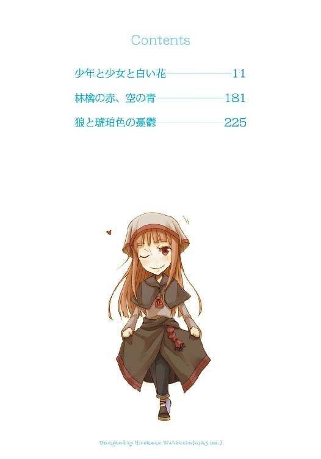

| 狼と香辛料 07 Side Colors | |
| 支倉凍砂 | |
| KADOKAWA / アスキー・メディアワークス (2013) | |

本書（電子版）に掲載されているコンテンツ（ソフトウェア／プログラム／データ／情報を含む）の著作権およびその他の権利は、すべて株式会社アスキー・メディアワークスおよび正当な権利を有する第三者に帰属しています。
法律の定めがある場合または権利者の明示的な承諾がある場合を除き、これらのコンテンツを複製・転載、改変・編集、翻案・翻訳、放送・出版、公衆送信（送信可能化を含む）・再配信、販売・頒布、貸与等に使用することはできません。
小高い丘を越えたところで、クラスは道の脇に鎮座している平べったい岩に腰掛けた。
辺りには遮るものがなにもなく、大して高い丘でもないのにかなり遠くまで見渡せる。
どこまで行っても似たような風景が広がり、海に続く道だと聞いていたのに川すら見える気配がない。
この世に生を受けて今年で十年とちょっとのクラスには、海がどういうものかはいまいち想像できなかった。
しかし、聞いた話では道を歩いている途中に見落としてしまうようなものではないらしいからまだまだ遠くにあるのだろう。杖代わりの太い枝を脇に置いて、水の詰まった皮袋を手に取った。皮の臭いがしみ込んだまずい水で少しだけ唇を湿らせて、そよ風に茶色の髪を揺らされてふと後ろを振り返る。
自分たちが追い出された屋敷はとっくのとうに見えなくなっている。それは寂しさよりもほんの少しだけざまあみろという気分にさせる。
なにがざまあみろなのかはよくわからなかったが、とりあえず目的のものは視界に入った。
途中に白い花が群れて咲いていたので立ち止まるだろうなとは思っていたら、案の定だった。
冬が終わり、からからに乾いていた冷たい風は去り、柔らかくて草の匂いがする空気に満ち満ちた春の日差しの下。名前も知らないし珍しくもない花の前でしゃがみ込み、飽きもせず食い入るようにじっと見つめているその様は、花を食んでいる羊に見えなくもない。
頭がすっぽり入るフードをかぶり、地面に届きそうなくらいに裾の長い白いローブ。
近くに寄ってみればだいぶ薄汚れているのがわかっても、距離をおくと羊のように見えなくもない。
名はアリエス。
自分の年は知らないと言っていたが、腹の立つことにクラスよりもほんの少しだけ背が高かった。
だから、自分よりも二つ年上なのだということにした。
「アリエス！」
クラスは名前を呼び、ようやくアリエスが顔を上げる。
「お昼までに四つ丘を越えようと約束しただろう！」
未だにアリエスの考えていることはよくわからないが、いくつかの事実は摑んでいる。
その一つが、なにかをお願いしても決してやってくれはしないが、こうしようねと約束すると約束は守ってくれること。
それに気がつくまで、少し歩いてはすぐに立ち止まるアリエスを何度置いていこうかと思ったことだろうか。
のろのろと立ち上がり、名残惜しそうに何度も花を振り返りながら丘を上ってきたアリエスに、クラスはため息まじりに言葉を向けていた。
「そんなに珍しい？」
岩の上に座っているのでアリエスを見上げる形になる。
目深にフードをかぶっているその顔は、近くから覗き込むか、下から見上げるかしないとよく見えない。
だから、あまり表情に変化がないものの、その下にあるのがものすごく可愛い顔なのだと気づいたのは旅を始めて少ししてからのことだった。
「あれは......花ですよね？」
そんなアリエスが、重要な事柄を確かめるように言った。
「花だよ。昨日も一昨日も見たじゃん」
涼しげな青い眼は丘の下に生えている白い花に向けられている。
またそよ風が吹いて、フードから少しだけこぼれていた綺麗な金髪が揺れた。
「でも......おかしいですよ」
「なにが？」
初めてアリエスがクラスのほうを向いて、首をかしげながら答えた。
「あの花の下に花瓶はありませんでした。どうして枯れないのですか？」
クラスはその質問に眉をひそめることもなく、視線をアリエスの顔からその下のほうに向けた。
「あー、もう、水がないんだから汚すなって言っただろう？」
ローブの袖に隠れたアリエスの手を取ると、その指先は土に汚れていた。
爪の中にも土が入っていて、せっかくの綺麗な手が台無しだった。
クラスが腰から下げている手ぬぐいで拭いてやろうとすると、アリエスはすっと手を引いて鋭い視線で見下ろしてきた。
「汚れとは心にだけ生まれるものと言われました。噓をつくのはよろしくありません」
そして、そう言い放つ。
クラスはしばしなにかを言おうとして、諦めた。
「そうだね。僕が悪かったよ」
アリエスは目元を少しだけ笑みの形に変えて、満足げにうなずいた。
結局四つの丘は越えられず、約束は破られた。
ただ、どういうわけかアリエスから約束を破ったことに対するお説教を聞かされてから、昼ごはんにした。
アリエスが朝ごはんを食べることに対して頑強に反対するために、昼ごはんは多めに食べないとやってられない。
とはいってもクラスの肩に掛ける麻袋に入っているのは、馬が食べるような燕麦の粉を顔が隠れるくらいの大きさに焼いた硬い硬い平べったいパンが七枚と、炒った豆。それと一握りの塩に皮袋一杯分の水。
屋敷を追い出された時にもらえたのはそれだけで、考えなしに食べたらあっという間になくなってしまう量だというのはすぐにわかる。
毎回決まった量のパンと豆を取り出したら、あとは固く固く口を縛っておく。
幸いアリエスはびっくりするくらいにごはんを食べない。今日も炒った豆を十粒と、燕麦パンを八つに割ったかけらの一つだけ。ぎちぎちと歯にくっつく感じの嫌な硬さの燕麦パンを少しずつかじり、食べ始める前と食べ終わったあとにお祈りを捧げている。
アリエスは神様に感謝しているのだそうだ。
クラスとしては、あのままではなにも食料を持たず旅をする羽目になっていたアリエスに貴重な食べ物を分け与えているのは自分なのだから、神ではなく自分に感謝して欲しいくらいだった。しかし、アリエスはそもそもその食べ物は神様がもたらしたものだから、と言う。
なにかずるいと思いつつも、言い返せないので黙ることにした。
アリエスには色々と理不尽な言いくるめられ方をしているクラスだが、アリエスの頭がものすごく良いかといわれれば、クラスは首をかしげてしまう。
とにかくなにより、アリエスは信じられないくらいになにも知らなかった。
「あ......」
と、アリエスが言って顔を上げたのでなにかと見れば、茶色の鳥が空を飛んでいた。
あれを捕まえて羽をむしって焼いたらおいしそうだよな、と思いつつ、アリエスが初めて鳥を見た時に言った言葉を思い出して、少しの間燕麦パンのまずさを忘れた。突拍子もないことというのはああいうことなのだろうと、感心してしまったくらいだった。
そんな物思いから現実に戻ったのは、アリエスの物問いたげな視線に気がついたからだ。
「あれは、鳥ですね？」
「そうだよ。蜘蛛じゃないし、トカゲでもないよ」
「飛んでる......んですよね？」
「そうだよ」
嚙み締めたせいで歯にくっついた燕麦パンを指で取りながら、とてもすごい秘密を聞いたように感心した顔で空を飛ぶ鳥を見つめているアリエスのことを、変だけど可愛いなと思った。
アリエスは初めて鳥を見た時、天井を蜘蛛が這っている、と言ったのだ。
クラスはしばらくなにを言っているのかわからなかった。話を聞くうちに、アリエスが空をすぐそこにある天井だと思い、鳥のことをその天井を這う蜘蛛だと思っていたことがわかった。
クラスは驚きつつも馬鹿にするのは男として情けないと思い、空というのはもっともっと信じられないくらいに高い木に支えられていて、鳥はその下を飛んでいるのだよと教えてあげた。
しばらく半信半疑だったアリエスは、地面から飛び立つ鳥を見てようやく納得してくれた。
万事がこんな感じなのだ。
地面から生えている花を見て、花瓶がないのになぜ枯れないのか、などまだいいほうだった。
アリエスは、クラスが小間使いとして働かされていた屋敷の脇に建つ、高い石の壁に囲まれた建物に住んでいたらしかった。
思い出せる限り昔のことを思い出してもその建物の中からは出たことがなく、本を読むのが数少ない楽しみだったという。
クラスも時折その建物に出入りしていた人たちのことは知っている。
噂話を聞き集める限り、屋敷に住む領主様が南の国の人に騙されて作った建物らしく、出入りをしているのも南のほうの人だということだった。
時折石の壁の向こうから聞こえてくる歌もまったく理解できず、南の国の歌なのだろうと思っていた。
ただ、そんな建物を建てた領主様は自分の領地にいるのを好まずに一年中あちこちを放浪しているような人で、詳しいことは執事様も知らないのでは、というのが使用人たちの統一見解だった。
そんな感じだったので、時折聞こえてきた歌が神様をたたえる特別な歌なのだということは、アリエス自身の口から聞いてようやく知った。
そしてその歌は、三回くらい間近で聞いた。
「さて、そろそろ行こうか」
最後の豆を口に放り込んでクラスは言った。
ある日突然、屋敷に見なれぬ人たちが大勢やってきた。彼らはたくさんの荷物を持っていて、たくさんの家畜を連れてきていた。屋敷の者たちがなんだなんだと仕事の手を止めて眺めていると、自分は領主様の弟だと名乗った一番大きな腹をした一番身なりのいいおっさんが一番大きな声でこう言った。
今この瞬間から君たちはもうここの住人ではない。即刻荷物をまとめて出ていくのだ、と。
屋敷の主たる領主様は旅の途中で死んでしまったらしく、代わりにその弟様とやらが屋敷に住むことになったのだが、なにが気に入らないのか石の建物の中の人たちを含む全ての人たちを文字どおり叩き出してしまった。
泣きわめく人や呆然とする人、冗談だと思っていつもどおり仕事をしようとしていた人や、弟様とやらにすがりつく人もいた中で、アリエスだけがふらふらと歩き出していた。
しばらくして、鶏に餌をやるように飲み水だとかパンだとかを配り始めた新たな屋敷の住人から、二人分の食料を受け取ってクラスは走っていた。
海に続くというその道を、ふらふらとなにかに導かれるように歩いていった変な少女を追いかけるために。
「日が暮れるまでに六つ丘を越えようか。このままじゃいつ海に着けるかわからない」
「それは約束ですか？」
「うん、約束」
きっとまたアリエスのせいで六つの丘は越えられないだろうと思ったが、その約束を破ったのはクラスであり、悪いのはクラスということになるのだろう。
それでも立ち止まったアリエスを動かすにはこう約束をするしかない。
それに、約束が守れなかった時、少し怒るように、呆れるように説教をするアリエスの顔を見るのは、正直、嫌ではなかった。
屋敷で怒鳴られたり殴られたりしながら重い水や藁束を運ぶ毎日よりかは、このアリエスとの旅はとてものんびりとしていて楽しかった。
ただ、とてつもなく緊張することもある。それが夜だ。
「夜は決して怖いものではありません。昼に太陽が、夜に月があるように、常に神が私たちを見守ってくれていますから」
「......は、はい」
かすれるような声で返事をしつつ、変に冷静な頭の一部分で、今自分たちのことを見下ろしているのはたくさんの星と少しだけ欠けたお月様くらいのものだと思った。
今二人が横になっているのは最後にたどり着いた丘の上。
辺りにはなにもなく、誰もいないとわかってはいてもちょっと恥ずかしかった。
「また、神は言われました。人は一人でいると飢えと孤独に襲われ寒さに震えることになる。けれども、二人でいれば少なくとも孤独は癒され、寒さも和らぎます」
「......はい」
「まだ寒いですか？」
それにも危うく返事をしそうになって、クラスは首を横に振った。
ただ、アリエスはそれを信用しなかったらしい。
クラスの背中に回した両腕に少し力を込め、強く抱きしめてきた。
「飢えに耐えるのは良き試練です。ですが、あえて寒くいることまで神は望みません」
もうこの言葉を聞くのは四回目でも、まだ緊張で体が震えてしまう。
最初は緊張で眠れなかった。特にアリエスがこんなにも可愛いのだと気がついたのだからなおさらだ。
ゆったりとした布の多いローブを脱いでそれを毛布代わりに体に掛け、アリエスはしっかとクラスのことを抱きしめている。
春とはいっても夜になればまだ冷える。
ただ、屋根があるだけでほとんど毎日外に寝ているのと変わらない生活を送っていたクラスには、さしたる苦があるわけでもなかったのだが、野宿を神から与えられた試練と思っているアリエスはできる限りのことをしてくれようとしていた。
つまり、体を温めるには体の温かさを使うのだ。
二回目の夜は前日ろくに寝ていなかったのですぐに眠ってしまい、三回目は緊張の果てになんとか眠れた。
四回目ともなるとだいぶ慣れてきたものの、アリエスの体は妙に甘い匂いがして息をするたびに顔が熱くなる。蜂蜜を塗って焼いたパンとも違う、ふんわりとした甘い匂い。
ただ、クラスはこの状況にいくらか罪悪感がある。
というのも、一つアリエスに黙っていることがあるからだ。
「っくしゅ」
頭の上のほうでそんなくしゃみが聞こえた。
人の心配ばかりしているくせに、きっとアリエスのほうが寒いのだ。
もそり、とアリエスは少し身じろぎして、
「......このようなことを言うと神に怒られるかもしれませんが」
顔は見えないが少しアリエスが笑ったのがわかった。
「一人では耐えられなかったかもしれません。クラスが女の子で本当に良かったと思います」
クラスは一度だって女の子に間違われたことなどないし、百人に聞いたって百人ともあり得ないと大笑いするだろう。
それでもアリエスはきっと本気でクラスのことを女の子だと思っているのだ。
なにせ、一度だけすれ違った荷馬車の馬を見て、真っ青な顔をしてこう言ったのだから。
あれが男という生き物ですか、と。
「私は眠くなってきました。おやすみなさい」
アリエスは器用なので、こう言ったあとに本当にすぐ眠ってしまう。
クラスはわざと返事をせず、黙っている。
そして、アリエスの兎のような寝息が聞こえてきてから、誰も見ていないことを願いつつその柔らかい胸に少しだけ顔を当てた。
「おやすみ」と言い訳するように言ったのは、本当に言い訳だった。
その夜、ふと目を覚ました。
ちらりと視線を空に向ければ、少し欠けた月が中天をだいぶ越えていた。
夜中の中の夜中。
寒さもなかなかのもので、気恥ずかしさを押しのけてアリエスの体に手を回しなおした。
しばらくもそもそとして、ようやく楽な姿勢を見つけて一息つく。
辺りはとてもとても静かで、本当にアリエスの寝息しか聞こえてこない。
家畜小屋の隅で眠っていた時は、一度だって静かな夜などなかった。
家畜の食べ残した餌を狙って始終鼠が走り回り、当たり前のように服に入ってくる。そんな鼠を狙って蛇や梟が目を光らせているし、夜の来客はそれだけでない。鶏を狙った狐に、羊を狙った狼だってやってくる。
危険が近づけば馬は暴れ鶏は叫び鼠はますます盛んに走り回る。
アリエスと過ごす夜は静かすぎて耳鳴りがしそうなくらいだった。
それに、日が昇って朝が来ても自分をこき使う人たちはいないし、どれだけやってもなくならない仕事だってない。眠りにつけるのがこれほど嬉しいことなんてなかった。
突然屋敷を放り出されたのには驚いたものの、他の人たちがなぜあれほど慌てふためき、泣いてすがっていたのかよくわからない。仕事がなくなるのは嬉しいことなのに。
食料はあまり多いとはいえないけれども、全部食べきる前にきっと海に着けるだろう。海にはたくさん魚がいるらしいから、それを捕まえて食べればいい。なんならそこに住み着くのもいいだろう。
ただ、アリエスは魚を見たことがあるのだろうかと思った。きっと見たことがないはずだ。ならば教えてあげなくてはならない。魚は水の中にいても溺れない生き物なんだよ、と。
その様を想像して少し忍び笑いを漏らした。本当に静かだ。
それから、改めて寝ようとして頭からもろもろのことを追い出すと、少しだけ、寝息以外に小さい音が聞こえてきた。
ト、ト、ト、というふうに聞こえる小さな音。
アリエスの心臓の音かもしれない。
その胸には柔らかいものがついてるのに心臓の音はきちんと聞こえるんだ、となんとなく不思議に思ってから、なにかおかしいことに気がついた。
音は片方の耳から聞こえてくる。具体的には草地についている右耳から。
ト、ト、ト、トト、と聞こえてくる。
なんだっけ、これは。
そう呟いた直後、アリエスの背中に回していた腕は自分の背中に回り、杖代わりの太い枝を摑んでいた。
「おっ......」
狼、と叫びそうになって危うく飲み込み、顔だけを上げて辺りを見る。
ドクンドクンと力強い音が耳に届く。これは自分の心臓の音。
心臓の動きに押されて勝手に口が「はっ、はっ」と言い出す。
固唾を飲んで右を見る。左を見る。
空には月があり、見通しだっていい。
でも、狼の姿は見えない。
「アリエス、アリエス」
掌が汗ばんで口の中がからからに渇く。
アリエスの肩を揺さぶりながら辺りを見回しても、やはり姿は見えない。
ただ、向こうもこちらの様子の変化に気がついたらしい。空気が変わったような気がした。
家畜小屋で寝起きしていれば、奴らだけ特別だというのは嫌だってわかる。
闇夜の中でそこだけ光る金色の目。
姿のない足音と、獲物をさらっていく時だけ見える、足音のない姿。
アリエスはようやく目を覚ましたものの、その目の焦点は合っておらず、いたずらしたくなるくらいに頼りない。むしろ寝かせておいたほうが狼も見逃してくれそうだ。
クラスは杖を引き寄せて、もう一度地面に耳をつける。
狼は滅多に人を襲わない、とクラスは信じている。鶏を咥えたままクラスの顔をまたいだことが三回もある。ただ、あの時は鶏がいたから、と思わなくもない。
ト、ト、ト、ト、という音はやはり聞こえてくる。心なしかさっきよりも大きい。
きっと様子を見つつ牙を研いでいるのだ。
どうしよう、と胸のうちで何度も呟き返す。アリエスを連れたまま走って逃げられるとは到底思わないし、なによりも動いた瞬間に襲われそうだった。
どうしよう。
ようやく完全に目が覚めたらしいアリエスが、怪訝な顔をしてこちらを見る。
クラスはその瞬間、冷水をかぶったように体が冷たくなり、口元に指を当てようとした。
「どうしました？」
そう言ってアリエスが体を起こすのと、たとえようのない美しさを秘めた遠吠えが聞こえたのは同時だった。
「え、え？」
アリエスはきょろきょろと辺りを見回し、ただただ困惑している。
クラスは泣きたいような怒りたいような気分に胃袋のあたりを突き刺されて、それでも我慢して体を跳ね起こすと視線の先にそれを見た。
月を頂いた丘の上でゆらと揺れた黒いいくつもの影が、遠吠えの余韻と共に闇の中に溶ける瞬間を。
その直前、金色の瞳と、目が合った気がした。
「っく、はやくっ、はやくっ、準備っ」
がくがくと震える手で麻袋を手に取り、訳がわからない様子で困惑しているアリエスの手を取った。
それでも腰が抜けて立つことができない。
消すことをやめた狼の足音が、森の中を吹き抜ける一陣の風のように聞こえてくる。
歯の根が合わないほどに怖かったが、杖を構えるくらいの勇気はあった。
アリエスを自分の後ろに引き倒し、腰が抜けたまま太い杖を槍のように構えた。
坂を駆け下り闇の池に飛び込んだ狼が、池の中から飛び出してくる。
金色の瞳に射貫かれて、自分の口も狼のように、笑うように横に裂けていくのが妙にはっきりとわかった。
怖さが勝手に歯を剝かせた。
でも、狼はもちろん少しも怯まずに一直線に飛びかかってきて──。
「......え」
突然、先頭を走る狼が横っ飛びに飛んだ。
一瞬、真横から弓矢に射られたのかと思ったくらいだ。
クラスたちの脇を抜け、狼たちは着地してすぐに振り返る。狼たちはちりちりと逆立つ毛の一本一本が見えそうなくらい近くにいる。
ただ、その視線は目の前の獲物であるクラスとアリエスにではなく、どこか遠くに向けたまま身を低くしている。牙を剝き、低く唸って前脚を地面に突き立てている。
いつでも飛びかかれるといった具合だが、それは獲物を狩るというよりも、敵を前にした時のそれだ。
自分の勇気におののいて？
そんなクラスの考えをよそに、狼たちは一点を見つめていて、そして、ふとした瞬間に弾け飛んだ。
それが一斉に逃げ出したのだと気がつくには、しばしの時間がかかった。
彼らの逃走は、来た時よりも速く、来た時よりも唐突に。
あまりにも呆気なく危機が去り、自分が助かったという実感すらない。
狼たちが走り去るのをぽかんと見送ってから、しばしなにも考えられずにいた。
後ろのアリエスを振り向いたのは、背中を突つかれたからだ。
「い、一体どうしたのですか？」
アリエスは小刻みに震えていた。
「狼だよ......危なかった」
もちろん震えるアリエスを笑うつもりなど毛頭ないが、自分が震えていることは悟られないようにと、必死に杖を握り締めながら言った。
すると、アリエスの首は小さくかしげられた。
「お、おおかみ？」
そして、直後に可愛いくしゃみをした。アリエスは狼を知らなかった。だとすれば、小刻みに震えているのは単に寒いだけ。
クラスは槍のように構えていた杖に目をやって、唇を少し尖らせる。それから、がっかりして杖を手放した。
「狼。今、僕らを襲おうとしてただろう？ 牙を持った野獣さ。人を襲うし、家畜だって襲う」
「まあ。それは......男ですか？」
からかわれているんじゃないかと思った。
ただ、クラスは親ほども年の離れた馬の世話役の男の台詞を思い出して、それを口にした。
「そうだよ。男は狼さ」
その言葉にようやくアリエスの顔に恐怖が宿り、はっとして辺りを見回す。
「大丈夫だよ、もうどこかに──」
と、そのあとは続かなかった。
一瞬のうちにクラスの顔はアリエスの柔らかい物に押しつけられて、息をするのもままならなくなったからだ。
「む......ぐ......」
「あ、安心してください。私が、あ、い、いえ、神は......神はいつでも私たちを守ってくださいます。なにも心配することはありません」
そう言いながら目一杯に抱きしめてくる。どちらかといえば、怖がっているのはアリエスのほうだ。
もしもここで、男というのはね......と真実を教えたらアリエスはどうするだろうか。
噓をついて人を騙すのはクラスだって良くないと思う。
ただ、少しだけ顔をずらして一息つくと、アリエスの匂いが鼻の奥をくすぐった。
たった今命が助かったばかりなのに、それは恐怖の余韻を忘れさせるのに十分なくらいにいい匂いだった。
やはり、しばらく黙っておくことにした。
「でも、あいつら、一体なにに驚いてたんだろう」
まさしく驚いたというのがぴったりくるような気がした。
狼の群れが驚くようななにかとは一体なんだろうか。
彼らが見つめていた方向にちらりと目をやっても、そこにはただの草原とところどころに闇の池があるだけで、今はそこになにか魔物がいるような禍々しさも感じない。
アリエスの腕の中ではその疑問はもちろん解けなかったが、緊張はとっくに溶けてしまっていた。冷や汗をかいたあとの人肌の温かさで、眠気が戻ってきたらしい。大きな欠伸をしてしまった。
クラスが身じろぎするとアリエスは少し腕を緩めたので、名残惜しかったけれどもそこから這い出して言った。
「もう大丈夫だと思うから、寝よう。朝までは時間があるよ」
その言葉に、アリエスは結局うなずいた。
その頃にはその顔から不安の色はなくなっていた。
翌朝、早起きのアリエスに起こされてまた一日が始まった。
一瞬昨夜のことを思い出してひやりとしたが、やはり狼の姿はなく、ただ草地に残された足跡が、夢ではなかったのだということを示していた。
それからのことは今までとさして変わらない。
変わるといえば食料が少し減ったことと、水がなくなる心配が出てきたこと。
それと、アリエスの顔色が少し良くなかったことと、足が痛いと言い出したこと。
アリエスのことは少し休憩を挟めばいいとして、水の問題はとても困った。空腹は一週間我慢できても水は三日飲まないと死んでしまうという話を、領主の館に来た旅人から聞いたことがある。
「川がどこにあるかなんて、知らない、よね？」
試しにアリエスに聞いてみても、案の定だった。
どこまでもどこまでも続きそうな荒野と、その上をのっぺりと這っている細い道。
少し高めの丘の上にたどり着くたびに、そろそろ海か町が見えないかと目を凝らす。もう館を発って五日目なのだから相当な距離を来たはずだ。世界一周だって二ヶ月もすればできると話に聞いた。
生まれてからずっと狭い建物の中で暮らしていたというアリエスのことを心のどこかで少し馬鹿にしていたが、クラス自身、世界がこれほど広いものだとは思っていなかった。
それになぜか無性に腹が立って、歩を速めた。
昼を過ぎ、夕方になって、休憩を挟んだりアリエスの足の遅さを怒ったりしながら、なんとかこれまでで一番多い十二個目の丘にたどり着く。
やはり目に映るのは草と木立と丘、丘、丘。
後ろを振り向くと、花や虫に興味を示さなくなった代わりに歩くのが辛そうなアリエスがいる。少し丘を下ったところで立ち止まっているが、歩き出す気配はない。
対して、クラス自身はまだまだ歩けるし、なにより町に着かないのはこれまでの歩く速度が遅すぎたのだという思いがふつふつと湧き起こる。
アリエスだってもう少し歩けるはず。ため息まじりに声をかけようとすると、ついにアリエスはその場にしゃがみ込んでしまった。
少ない水と、見えない次の町。本当にあるのかわからない道の先の海に、そして、予想外に広すぎる世界。
そんな言葉が頭の中に浮かび、苛立ちが込み上げてくる。昨日まであんなにのんびりとして楽しかったのに、今日はだらけすぎだとしか感じられない。
舌打ちしたい気持ちになって、隠さずにしてしまう。
相変わらず、立ち上がらない。
「っもう......」
声をかけるのも面倒くさいくらいにイライラとして、置いていこうかと一瞬思う。
一本道なのだから迷うこともないはずだ。
それもいいなとあれこれ考えていると、変な音がした。
「？」
アリエスのほうを見ると、片手を地面についていた。
そして。
「あ、アリエス！」
むく、と背中が盛り上がったかと思うと、ぱしゃっと嘔吐物が散った。
あまりのことに動けないでいると、アリエスはそのまま顔を上げずに横向きに倒れてしまう。
荷物も放り出して慌てて駆け寄った。
「アリエス！ アリエス！」
心配というよりもほとんど驚きだった。
駆け寄って抱き起こし、フードを取って名前を呼ぶ。
アリエスはぐったりとして動かず、少し開いた唇の間から舌べろが見えていて思わず死にかけた羊を連想してしまった。
「アリエス！」
驚きの次にやってきたのは心配ではなくて恐怖。
アリエスが死んでしまう。
泣きそうになって、細い肩を揺する。頰を叩く。それでも何の反応もない。
今度はこっちが吐きそうなくらいの恐怖が込み上げてくる。
直後、アリエスがまたえずいた。
よかった、死んでない。
そう安心したのもつかの間、もう吐くものがないのか身を小さく曲げて苦しそうに唸り出す。
クラスは目尻の涙を拭いて、思いついたように腰の手ぬぐいでアリエスの口の周りを拭いた。
しかし、それからどうすればいいのかわからない。
薬草、という単語が頭に浮かんだものの、周りに生えている草はとても効果がありそうにない。
アリエスの苦しそうな息が段々小さくなっていく。それが命の灯火のように思えてきて、怖さのあまりぼろぼろと涙がこぼれてくる。
アリエスは疲れていたのではなく体調が悪かったのだろうか。
それならもっと休憩だって取ってゆっくりと歩いたのに。
そんな言い訳とも後悔とも取れる思いばかりが胸中を乱れ飛び、口から出てくるのはまともな言葉にならないアリエスの名前だけ。
それでも必死にその名前を呼びながら、なんの抵抗もない肩を揺する。
「ふぐ......どうひ......どうしよう......」
誰か助けて、というのは言葉にならなかった。
こんなところで誰かが助けに来てくれるわけがない。
もしも来てくれるのだとしたら、アリエスが毎日祈っていた胡散臭い神様くらいのものだ。
しかし、助けてくれるならインチキの神様だっていいと心の底から強く願う。
「神様......」
だから、クラスは、それを神様の声だと思った。
「どうしたかや」
軽く膝が浮いてしまうくらいにびっくりして顔を上げる。
でも涙でぼやけて前が見えない。
必死に拭ってもう一度見る。
誰もいない。
「そんな......」
またじわりと涙が浮かんできた。
「どうしたかや、少年」
後ろ。
クラスが振り返ると、逆光の中に誰かが間違いなく立っていた。
「病か」
口調に似合わない澄んだ声。相手は逆光の中にいるうえに、こちらが座っているので相手の顔も身長もわからない。
それでも、自分以外の誰かがいてくれると思っただけでクラスの目からは情けないくらい涙があふれ出てきた。
「わ、わか、わからない、です......き、急に倒れて......」
「ふむ」
と、影の人は呟き、軽い身のこなしでクラスの前に回り込む。
それでようやくどんな人物なのかわかった。
女の人。
「む、こ、これはっ」
アリエスの横顔を覗き込むなりその女の人は深刻そうに言った。
無意識のうちに背筋が伸びる。
言葉が続いた。
「単なる疲れじゃな」
そして、拍子抜けした。
「......へえ？」
「ほれ、足がこんなに硬くなっておる」
横になっているアリエスのふくらはぎに手を伸ばして女の人は言う。
「で、で、でも」
「何度も休憩を求めておったじゃろう？」
ぐっと言葉に詰まる。
「ましてや、ろくに食事もしておらぬ。倒れるのは道理じゃな」
言われてみれば当たり前に過ぎる。
そう思うと同時に、すぐにおかしなことに気がついた。
「な、なんでそれを」
「む。口が滑った」
わざとらしく口に手を当て、女の人はそっぽを向く。
自分たちをどこかから見ていたのは間違いない。
しかし、クラスは丘の上に上がるたびに辺りを見回していたのだ。
誰かが隠れられるような場所なんてない。
一体どこから見ていたというのか。
「本当は声をかけぬつもりじゃったがな。これがあまりに不憫でな」
アリエスの腰をぽんと叩き、クラスを責めるような目で見る。
かっと胸の中に熱いものが生まれた。
「ぼ、僕はちゃんとアリエスのことを──」
「気にかけていたと？ ふん。ぬしとこれとは体のつくりからして違うと知っておるじゃろう？」
その言葉に、どきりとする。
単に言い返せないとかではなく、狼狽した。
「くふ。わっちゃあ昨晩からぬしらを見ておった。体のつくりが違うことは、ぬしもよーく知っておろう？」
表情がころころと変わり、粘つくような笑みを浮かべてそう言った。
クラスは顔がどんどん熱くなっていくのがわかる。
見られていたのだ。
「雄冥利に尽きるとはあのことじゃな。ま、しかし」
立ち上がった女の人は片手を腰に当て、唇をつり上げて歯を見せた。
「ぬしは狼を前に果敢に立ち向かった。その勇気だけは褒めてやろう」
「え、あっ......あっ！」
「ふうむ。察しの悪い小僧じゃな」
意地悪そうな笑みになってクラスを見下ろすその女の人には牙が生えていた。
いや、それだけじゃない。
今の今までまったく気がつかなかった。
あまりにも異質すぎて目に入らなかった。
目の前の、マントを羽織り腰帯を巻き、どこかの貴族のように毛皮の縁取りをしたズボンを穿いた亜麻色の髪の毛をした女の人の頭には、あまりにも妙なものがあったのだ。
「今更これに気がつくとは、これにも気がついておらぬか」
そして、マントをばさりと払った。
「あ......あ......」
「良い毛並みじゃろう？」
わさり、と音を立てて毛の塊が揺れる。
見事な、あまりにも見事な狼の尻尾が揺れ、頭の上で対になる獣の耳が動いた。
その瞬間、クラスの頭に昨晩の狼たちの反応が閃光のように蘇った。
「も、もしかして」
「もしかして？」
女の人の試すような目が突き刺さる。
「昨晩、僕たちを......たす、助けてくれたのは......」
風が少しだけ吹き、マントの裾と尻尾の先が揺れた。
夕日を横から受けた顔が、「やれやれ」と無言のうちに言っていた。
「や、やっぱり、昨晩、狼を、追い払ってくれたんですね？」
「わっちゃあ近くで寝ておっただけじゃ。向こうがわっちに気づいて勝手に尻尾を巻いて逃げた。それだけじゃ」
つまらなそうに女の人は言うが、クラスは口をパクパクさせたあとに唾を飲み込んだ。
時折人の世に降りてきて、人々に幸運を授けたり、時にはいたずらをしたりする、人に似た人ではないものたちの話を何度か聞いたことがある。
クラスは、恐る恐る呟いた。
「ま、まさか、精霊様......」
「違うっ」
突然怒りを顕わにされ、思わずのけぞってしまう。
ただ、目の前の獣と人がまざった不思議な存在は、すぐにばつが悪そうな顔をした。
「むう......た、確かにぬしら人からはそんな感じで呼ばれることもありんす。じゃが、わっちゃあそういう呼ばれ方を好まぬ」
怒鳴ってしまったのを恥ずかしがるように唇を尖らせている顔は、ちょっとの年しか離れていないように見える。
それに、その顔は間違いなく美人だった。
「ど、どう......お呼び、すれば？」
見よう見まねの大人たちの言葉遣いでそう訊ねると、またしても不機嫌そうに片眉をつり上げられた。
「わっちゃあそういうのも好まぬ。それに、ぬしの舌がもつれて絡まったら解くのが厄介じゃ」
馬鹿にした笑みを向けられかっと頰が熱くなるが、相手は精霊様だと思い出してうつむいた。
すると、小さなため息のあとに、精霊は大地に顔を近づけた。
「顔を上げてくりゃれ。わっちゃあ単にぬしらのおぼつかない旅を少し支えてやろうと思っただけじゃ。ぬしらに崇められたくて姿を現したわけではありんせん」
怖くて顔は上げられない。
それでも、恐る恐る視線だけは向けた。
「くふ。そういう顔がまだ似合う年頃かや」
視線を上げて目に入ったその笑顔に、世の中にはたくさんの種類の笑顔があるのだと知らされた。その笑顔を見た瞬間にまた視線を下げてしまい、さっきよりも顔が熱くなったが、その理由はまったく違う。
だから、今度は精霊様も怒らなかった。
「わっちの名はホロ」
ちょこんとしゃがんだ精霊様は、短く言った。
自己紹介された、と気がつくまでしばらくかかった。
「ぼ、僕の名は、クラス......です」
「ですはいらぬ」
「は、はい」
ホロと名乗った精霊様は苦笑いをして、立ち上がった。
「これの名はアリエスだったかや」
「そう、です、けど」
「なぜ知っているのかと？」
クラスはこくりとうなずく。
「散々可愛い声で呼んでおったじゃないかや。アリエス、アリエスぅ」
自分の両肩を抱いてそう言うホロに、クラスはようやく落ち着きが戻っていた顔にまた血が昇ってくるのを実感した。
「しかしな、弱っておる者を揺するのはよくないと思いんす」
どきりとして、手元のアリエスの顔を見る。
「気を失っていくらか落ち着いておるじゃろ。口をすすいでやって、温かくすることじゃな」
喉にパンでも詰まらせたようにうなずき、横向きにひねるように不自然な姿勢で倒れたままだったアリエスの体を楽そうな姿勢に直してから、クラスは立ち上がった。
放り出した荷物までさしたる距離があったわけでもないが、アリエスを一人にするのがとても心配でつい走り出すのをためらってしまう。
すると、ホロが「見ててやるから」とばかりに顎をしゃくった。
クラスはようやく走り出したものの、ちらりと後ろを振り向くと、ホロがアリエスの脇にしゃがみ込んでなにか呟いていたように見えた。
それがどこか内緒話をしているように思えて気になった。
「まったく、季節が冬ならばとっくに野垂れ死にじゃな」
クラスがアリエスの介抱をしている最中に荷物を検めたホロは、呆れるようにそう言った。
「毛布すらないとは。雨に降られたらどうするつもりだったのかや」
「え？ ええーと......」
と、考えながらクラスはアリエスの口の周りを濡らした手ぬぐいで拭いてやる。
温かくしてやるといっても火を熾す薪もなければホロの指摘どおり毛布もなく、仕方なく上着を一枚掛けてやっていた。
「雨宿り、とか......」
すると、ため息をついて呆れるようなまなざしを向けてくる。
クラスは、ついうつむいてしまう。
見渡す限り雨宿りできるような場所はなかったからだ。
「近くに川もなければ泉もないようなところをふらふら歩いておる二人連れがおったから面白半分にあとをつけておったが、よもやここまで考えなしだったとは」
そこまで言われるとさすがに腹が立ったが、怖いのでなにも言えない。
「もっとも、おかしなことといえば、そもそもぬしらの取り合わせからして奇妙じゃからな。なぜ子供が二人で旅など？」
子供、と言われてクラスはついホロのことを見つめ返してしまう。
ホロはいくらか年上の雰囲気だが、大人と呼べるほど大人ではないと思った。
「たわけ。わっちゃあ少なくとも二百は年上じゃ」
「ご、ごめんなさい」
そう言われるとそう見えるから不思議だ。
なにせ相手は精霊様なのだからなにがあってもおかしくはない。
そう自分を納得させてから、隠すことでもないので聞かれたことを話した。
ごろりと横になり、勝手に袋の中から燕麦パンを取り出してぼりぼりかじっていたホロは相槌の代わりに時折尻尾を動かしていた。
クラスが話し終わるのとホロがパンを食べ終わるのはほぼ同じで、歯の間に挟まったパンを指で取りつつホロは身を起こし、「うむう」と唸った。
「ぬしが追い出された屋敷とはアンセオとかいう名の貴族の住むところじゃろう」
「は、はい......。知ってるんですか？」
「ちょっと前までいた町で小耳に挟みんす。田舎の地に変わり者の貴族がおると。しかしそうか。死んだのか」
領主様が変わり者かどうかはわからなかったが、田舎の地と呼ばれたのは少し不快だった。
屋敷は立派なものだったし、使用人の数は二十をくだらない。敷地にはアリエスがいたような石造りの建物だってあった。
それに、近くには葡萄棚や村だってあったのだ。
クラスがそう思っていると、ホロからにやにやと笑うような視線が向けられていることに気がついた。
「まさしく旅立って間もない雛じゃな」
「......」
なぜ笑われるのかわからなくて、悔しくてクラスはそっぽを向いた。
それがまたホロの笑いを誘ったようで、忍び笑いが口から漏れていた。
「怒るな少年。大体、ぬし自身世の広さを前に驚いていたじゃろうが」
どきりとしてホロに顔を向ける。
「なに、それがわかるのはわっちも旅に出てから同じことを思ったからじゃ」
いいように押したり引いたりされているような気がしたが、噓をついているようにも見えなかった。
「......そう、なんですか？」
「うむ。世はあまりに広い。そして......」
と言葉を切ったホロの視線を追いかけると、いつの間にかすぐ側で眠っていたアリエスの目がうっすらと開いていた。
「アリエス」
目の前のホロのことも忘れてクラスが声をかけると、いつもの寝起きより数倍早くアリエスの目の焦点が合った。
「あ......あれ、なぜ、あれ？」
自分の置かれている状況がよくわからないといった感じで体を起こそうとしたので、クラスは慌ててそれを押さえて言った。
「ついさっき倒れたんだよ。覚えてない？」
そう言われてようやく思い出したらしい。
だいぶよくなっていた顔色に、少し赤いものがまじった。
「神に仕える者として、恥ずかしい限りです。でも、もう大丈夫です」
たった五日の旅でもアリエスの性格はなんとなくわかってきている。
寝ていなと言って寝そうかどうかも口調からわかる。
今度は起き上がるのを止めずにいると、当たり前だけれどもすぐにホロのことに気がついた。
「あら......」
そして、そんなふうに呟いたまま言葉が途切れてしまう。
頭の上には獣の耳。腰からは立派な狼の尻尾を生やしている紛れもない精霊様を突然目の当たりにしているのだ。驚くのも無理はない。
ただ、アリエスは無遠慮にホロの人のものならざる付属物を眺めている。
ホロがその無礼な振る舞いに怒り出さないかとハラハラする。それにアリエスは昨晩の出来事で、狼を男だと思って恐れている。
何かとんでもないことを言い出しかねない。
クラスはそう判断して耳打ちしようとしたところ、しばし固まったまま動かなかったアリエスは、突然合点がいったように大きくうなずいた。
「あ......海の向こうから来られた方ですね」
別の方向に突拍子もない言葉で、クラスは慌てて訂正しようとしたが、それは当のホロによって遮られた。
「うむ。北の国から旅をしてきたホロという」
怒るどころかむしろ機嫌良さそうに笑い、それを裏づけるかのように尻尾が楽しそうに揺れている。
アリエスはクラスが掛けていた上着を取って優雅な振る舞いで一礼して、「アリエス・ベランジェです」と名乗った。
王様すら頭を下げると聞いたことがある精霊を前に実に堂々としているが、知らないということは恐ろしいと思った。
ただ、精霊は精霊だけが住む国からやってくると聞くので、アリエスの言ったことも間違いではないのかもしれない。
「それでどのようなご用件でしょう」
これが屋敷内でなら様になっただろうが、さすがにクラスは黙っていられず口を挟んだ。
「ち、ちがうよ。ホロ、さんはアリエスを助けてくれたんだよ」
名前のところでつっかえたのは、様と呼ぶか迷ったからだ。
一瞬のところで「さん」にしたのは、ホロの琥珀色の瞳が鋭く光ったからに他ならない。
どういうわけか、様づけは好まないらしい。
アリエスは再度驚いて、それから少し慌てて居住まいを正した。
クラスはアリエスがきちんと礼を言えるのかと訝しんだが、それも一瞬のことだった。
背筋を伸ばしたアリエスは、驚くほど大人びて見えた。
「それは失礼いたしました。改めて御礼を」
そう言って、食事の前後にするようなお祈りよりも丁寧に手を組んで頭を下げた。
アリエスの対応にほとんど呆気にとられつつも、ホロを見るとそれにご満悦のご様子だ。とりあえず怒りを買うことは避けられたとほっとした。
それでもやはり、アリエスがこんなにもしっかりしていたなんて驚きだった。
「それと、そういうことでしたら助けていただいた御礼になにかできればと思うのですが」
「礼かや」
「はい。生憎と旅の身のうえであり、できることは限られますが」
花の下に花瓶がないのに枯れないのはなぜ？ と言って首をかしげていたアリエスとはまるで別人に見える。
したり顔であれこれ教えていたのが急に恥ずかしくなってきた。
「ふむ。物はいらぬ。代わりにと言ってはなんじゃが......」
と、ホロはクラスを一瞥する。
同時にアリエスもクラスのことを振り向き、その一瞬、蛇に睨まれた蛙のような気持ちになったのはなぜだろうか。
体のつくりがそれぞれ違う三人は、それでもクラス一人がのけ者という形にならなくもない。
ホロは楽しそうにあとを続けた。
「わっちをしばし旅に同行させてくりゃれ？」
「え！」
思わず声を上げたのはクラスで、再度二人から視線を向けられた。
反論が許される感じではない。
それに、アリエスがホロのほうを向きなおってにこりと笑いながらこう言ってしまった。
「そのようなことでよろしいのであれば」
「ありがたい」
昔から仲の良かった友達のように笑顔でうなずき合い、二人は勝手に話を進めてしまっていた。
クラスは色々と面白くない。
でも、なぜ面白くないのかはよくわからなかった。
「では、わっちの荷物が向こうにあるから、ちょっと運ぶのを手伝ってくりゃれ」
「あ、はい」
アリエスが立ち上がりかけたので、それはクラスが止めた。
「アリエスは休んでて」
「ですが」
「休んでて」
少し強めに繰り返すと、びっくりしたように、おずおずとうなずいた。
どこか楽しげにそんなやり取りを見ていたホロは、「こっちじゃ」と歩き出した。
「ふふ。あんな一方的に言わぬでもよいのに」
歩き出してすぐに、前を行くホロが言った。
「う......いえ......」
「力仕事は雄の仕事、と言えばそれで十分じゃろう？」
そして、肩越しに振り向かれ、その琥珀色の瞳を見た瞬間にクラスは顔がどんどん熱くなっていくのを感じた。
ホロは全部知っている。
「くふっくっくっ......難儀じゃな」
マントの下で、尻尾が楽しそうに揺れていた。
「ま、雄なら十中八九ぬしと同じように振る舞うじゃろうからな。気にすることはありんせん」
励ますように背中を叩かれながらそう言われても全然嬉しくない。
その顔は今にも大笑いしそうなほどの笑顔だったからだ。
「なんじゃ、わっちゃあぬしの味方だというのに」
噓ばっかり、という言葉は胸中だけで。
からかわれていることくらいクラスにだってわかる。
「うふ。からかっておるのも事実じゃ。じゃからな」
すいっと一歩前に出て、ホロは下からクラスの顔を覗き込むようにした。
狼が獲物を前にした時のような目。
魅入られたように、その琥珀色の瞳から目が離せない。
「今夜は三人で寝よう？ もちろんぬしが真ん中じゃ」
その言葉を聞くや否や、なによりも先にその様を思い浮かべてしまい、直後、足がもつれてすっ転んだ。
ホロがアリエスに旅の同行を求めた時、蛇に睨まれた蛙のような気持ちになったのはこういうことだったのだ。
草地の上に倒れ込んだクラスの目の前に、ホロがしゃがみ込んでこう言った。
「なんじゃ、夜まで待てぬかや」
意地悪そうな笑顔。
ただ、それに怒るよりも先に、その笑顔とアリエスの笑顔を比べてしまっていた自分に気づき、クラスは呆れ果ててその場に突っ伏してしまった。
なんだか自分がとても情けない生き物のような気がする。
こつこつと頭を小突かれ顔を上げると、ホロは優しそうな顔でこう言った。
「わっちがぬしを一人前の雄にしてやろう」
クラスは再び顔を突っ伏した。
気疲れしそうな三人旅が、始まったのだった。
久しぶりにくしゃみで目を覚ました。
ここ何日かずっと暖かかったのに、と包まった毛布の下で思ってから、そうではないことを思い出した。
昨日は久しぶりに、視界を遮るもののない丘の上で一人眠ったのだ。
それまではといえば、旅の道連れと暖を取るため寄り添って寝ていた。
アリエスという、少し風変わりな女の子と。
思い出すだけで朝の寒さが吹き飛んでしまうが、昨晩に限ってそうしなかったのにも理由がある。
ある日突然住んでいた屋敷を追い出されたクラスとアリエスが、海に続いているという道をのんびり旅しているところにふらりと現れた不思議な客。名をホロといい、クラスたちよりも二百歳は年上だという彼女は、どう見てもアリエスと同じか、もう少し年上かといった見た目をしている。しかしその頭には獣の耳が、その腰からは狼の尻尾が生え、唇の下には鋭い牙があってその言葉を疑うこともできなかった。
そして、クラスが寒いのを我慢して一人で眠った理由だが、それはホロのせいだ。
ホロは昨晩「三人で寝よう」などと言い出したのだ。
クラスがアリエスとなんとか眠れたのは、アリエスがあまりの世間知らずのせいでクラスのことを男と思っていないから。
しかし、ホロは違う。
ホロはクラスのことをからかいたくてそう言っているのだ。
いくら偉い精霊様の提案だって、断固受け入れることはできなかった。
それで、結局はクラスが毛布を借りて一人で眠り、ホロとアリエスが互いのローブとマントを毛布代わりに一緒に眠ることにした、のだが......少しもったいなかったかなと、ホロとアリエスが寄り添って眠っているところを想像してそんなことを思ってしまった。
ホロは精霊様のくせに意地悪だし、アリエスはアリエスでよくわからない性格だったけれども、どちらも綺麗だということは間違いない。
もちろん今更どう転んだって二人の間に入れてくれなんて頼めないが、見るくらいならいいだろう。
そう思ってそっと毛布から顔を出すと、目の前にホロがいた。
「なぜそんな顔をしておるか当ててやろうか？」
胡坐をかいて、どうやら尻尾の手入れをしていたらしい。
クラスは毛布の下に顔を隠すこともできず、ただ力なく首を横に振ったのだった。
「ぬしが一番最後じゃな」
のそのそと毛布から出ると、確かにアリエスもとっくに起き出していて、少し離れた場所で日課のお祈りを神に捧げていた。
神様がいるらしい空を見上げると、今日は曇っている。少しだけ肌寒かった。
神様といえばこちらも神様のホロは、しばらくいじっていた尻尾を放り出すと自分の荷物の中から干しパンを取り出して、気前よくクラスに手渡してくれた。
収穫を祝う祭りの日でもないのに、小麦のパンだった。
「もらい物じゃからな。遠慮は要らぬ」
遠慮しろ、と言われたとしても手が勝手に受け取ってしまうだろう。
ただ、朝食は断固拒否するアリエスのことが気になった。
「あれならとっくに説得ずみじゃ。ほれ」
と、お祈りを終えてこちらに戻ってきたアリエスに向けてパンを放り投げる。
アリエスは慌てて両手を出して、赤ん坊でも助けるかのように胸元で受け止めた。ホロの無作法さには、作法とは程遠いクラスにも驚きだった。
「た、食べ物を投げるだなんて──」
「実った麦粒はやがて地に落ちるのが世の摂理。ならば、それを粉にして焼いただけのパンを投げていけない理由があるかや」
「え......？」
思わず間抜けな声を出してしまったのはクラスだが、同様に鼻をつままれたような顔をしていたアリエスは、ほんの少し首をかしげる。それから、やがてどこかぼんやりとしたままうなずいた。
クラスもなにか騙されているような気がしたが、どういうわけか反論ができない。
年経た精霊にはどんな賢者でも勝てないという。
「こんな具合にの」
そうクラスに耳打ちして得意げに笑うホロの顔は、ちょっとだけ格好いいと思ったのだった。
「で、ぬしらの目的地は海だったかや」
普段から食べなれているのか、けちけちとパンをかじるクラスとは対照的にがつがつ食べながらホロは言った。
「い、一応は」
「あてどもない二人旅、かや」
笑われ、少し首をすくめる。
「そういうわけじゃないですけど......」
「放浪の旅でないのなら、きちんと目的を定めておくことじゃな」
最後のひとかけらを口に放り込んで、ホロは言葉をそう締めた。
放浪の旅、という言葉には胸が一瞬高鳴った。
馬に乗り、ボロのマントを羽織り、諸国を遍歴する憂い顔の旅人の話を聞いたことがあるからだ。
ただ、そんなことを言うと屋敷にいた他の大人たちと同様に笑われそうだったので、黙っておくことにした。
「しかし、ぬしは起きるのも遅ければ食べるのも遅いのか」
「え？」
ホロの言葉に自分の手元を見る。パンはまだ半分も食べ終わっていない。
すぐに、ホロが食べるのが早すぎるだけだと思ったが、視線をアリエスに向けて驚いた。
「こういう時に人は、ナイフとスプーンのいるような食事かや？ と言うそうじゃな」
水汲みや家畜の世話が山積みになっている時によく言われた言葉だ。
ナイフとスプーンを使う貴族の食事はゆっくりであればあるほどいい。
もちろん、クラスはスプーンなんて使ったこともない。
慌てて小麦のパンを口に押し込んだ。
ちびちびとかじっていた時とは比べものにならないくらいに濃密な小麦パンの味が口一杯に広がったものの、数回嚙んで飲み込んだらそれっきり。
やはりもったいない気がしたが、食べてしまったものはしょうがない。
それに、いつも食事の遅いアリエスがとっくに食べ終わっていたことに後押しされた。
「では、さっさと荷物をまとめて発つとするかや。海はまだまだじゃが、次の町はそろそろじゃからな」
ホロの言葉でクラスは息つく間もなく片づけに取り掛かる。
そして、ふと片づけをしているのが自分だけであることに気がついたが、食事が終わってからのお祈りの最中であるアリエスに声はかけられなかったし、ホロに手伝えと言えるわけもない。
ただ、一番納得がいかなかったのは、ホロの分の荷物までクラスが背負わなければならなかったことだ。
ホロの荷物はクラスたちの貧相なものとは違い、旅をするために必要なものが一式ぎっしりと詰まっていた。その中で最も重いのはぶどう酒の詰まっているという革袋だ。
「自分じゃ背負えないって、ならどうやってここまで旅してきたんですか？」
さすがに理不尽だったのでそう抗議したら、ホロは牙を覗かせ顔を近づけ、怪しげな笑みを浮かべてこう言った。
「聞きたいかや？」
ごくりと固唾を飲んでしまったのは色々な理由からだったが、どれも首を縦に振る理由にはならなかった。
ホロは満足そうにうなずいて、尻尾を揺らしながらさっさと歩き出してしまう。
その重圧から解放される代わりに重い荷物を背負うことになったクラスはため息を一つつき、仕方ないかと歩き出す。どの道この程度の荷物なら、もう二つ分くらい背負っても歩けないことはない。
そんなことを思っていると、ふと隣に気配を感じた。顔を上げれば、アリエスだった。
「手伝いましょうか？」
六日目にして初めての申し出だったが、前日に疲れすぎて倒れてしまったようなアリエスだ。
とてもその申し出は受けられずに、断った。
「ですが......」
と、心配よりも罪悪感にさいなまれるような顔をして食い下がるので、クラスは自分たちが元々持っていた食料袋を差し出した。
これなら軽いし、ほとんど負担にもならないはずだ。
「なら、これを持ってて」
すぐにうなずいて、アリエスは袋を受け取った。
どういう風の吹き回しかはわからなかったが、気にかけてくれたのは正直に嬉しかった。
「じゃ、行こう」
アリエスは袋の紐を肩に掛けると、歩き出したクラスの斜め後ろをおとなしくついてくる。
これもまた旅を始めてから初めてのことだったが、そんなことよりもホロがどんどん歩いていってしまうのでそのあとを追いかけるのに必死だった。
またアリエスが倒れないかとハラハラしたが、だんだん平地に近づいているのか丘の上り下りも少なくなり、結局昼の休憩までに三つの小さな丘を越えることができた。
そして、その休憩の直前、ずっと黙って歩いていたアリエスが突然口を開いたのだ。
「狼から守ってくれたこと、お礼を言うのを忘れていました、ありがとうございます」
妙に硬い口調と表情で言い出したのでびっくりしたが、どうやらそのことを切り出す頃合をずっと窺っていたようだった。
こういうところは生真面目なのかもしれない。
「ん、うん。別に、いいよ」
だから、そう答えるとアリエスははっきりと安堵のため息をついて、力なく微笑んだ。
それが妙に可愛くて、慌てて「気にすることない」と言おうとしたのだが、ふと、少し離れた場所に腰を下ろしているホロのことが目に入ってやめた。
視線こそ別のところに向けられているが、その耳がこちらを向いていたのだ。
「と、とりあえずお昼にしよう」
その一瞬、ホロの横顔がつまらなそうなものに変わった気がした。
もしかしたら、自分の荷物を背負わせたのは、アリエスに礼を言わせるためだったのかもしれない。
余計なお世話だ、と思う。
別にそういうつもりでアリエスと旅をしているのではないのだから。
ただ、アリエスがきちんと礼を言ってくれたのは、単純に嬉しかった。
昼食を終えると、ホロはごろりと横になってしまった。
ぐびりぐびりとぶどう酒を飲んでいたので眠くなったのかもしれない。
あとで追いつくからと、毛布だけ受け取ってクラスたちを先に行かせた。
一行の歩く速度はどうしてもアリエスのそれに合わせなければならないから、多少クラスたちが先行したところでホロはすぐに追いつくだろう。クラスがため息をつくのは、クラスたちの旅に同行しようと言い出すのも唐突なら、加わったあとの行動も勝手気ままなところに、だ。
もっとも、振る舞ってもらった小麦パンの恩があるから、それだけでもホロのわがままを許すのに十分すぎる。
食べ物を食べさせてくれる人には、基本的に頭が上がらない。
そんなわけでまたアリエスとの二人旅になった。
しかし、午前中にクラスの側を離れず歩いていたのはやはり言いそびれた礼を言う頃合を窺っていたためらしい。今度は今までどおりに少し歩いては立ち止まり、立ち止まっては物問いたげな目を向けてきた。
正直すぐに立ち止まるのにはイライラしたけれども、物問いたげな目を向けられるのは嫌じゃなかった。
もちろん、仕方ないな、という顔をして知りたがっていることを教えてあげたのだが。
そんな折、悲鳴とも取れそうな短い声が上がって、クラスは驚いて振り向いた。
「アリエス!?」
一瞬、一昨日の晩のことが脳裏をよぎってひやりとしたが、もしも狼ならばホロがどうにかしてくれるはずだと思いなおした。
アリエスは少し離れたところで立ち尽くし、クラスのほうを振り向くと一点を指差した。
その表情は恐怖に彩られていて......と思っていたのだが、どうも違う感じがした。
恐怖というよりも、困ったような顔をしていた。
「どうしたの」
悲鳴のようなものを聞いた瞬間には荷物を置いて走ろうと思ったものの、そこまで急を要する感じではなかったので、下ろしかけた荷物を背負いなおして駆け寄った。
荷物を置いて離れると、一瞬前までは影も形もなかった鷹に持っていかれることがある。屋敷の羊と馬を放牧した時に、昼食を持っていかれた苦い思い出が蘇る。
「あ、あれ......」
クラスが近づくと、アリエスの細かい表情もわかった。
困ったような、ではなく、哀しそうな、心配しているような顔をしていた。
アリエスが示す指の先に視線を向ける。
その先には、たとえクラスたちに追いかけられたとしても逃げきれる自信があるのだろう微妙な距離を挟んで、茶色の野兎がいた。
「兎？ 兎がどうかしたの？」
兎を見るのが初めてだとしても、馬のように迫力もないし、どちらかといえば可愛らしいはずだ。
なぜこんなにも動揺しているのかと思うと、アリエスは固唾を飲んでから、答えた。
「み、耳が......」
心配顔に哀しみのまざっている理由がすぐにわかって、思わず笑ってしまう。
耳が誰かに引っ張られてああなったとでも思ったのだろう。
「兎の耳は元々あんな感じだよ。長いから遠くの小さな音がよく聞こえるんだってさ」
クラスは一昨日の晩に地面を伝わる狼の足音を聞いたが、家畜小屋で眠っていた時は近くの巣穴に住む野兎の足音をよく聞いた。
野兎はその足で地面を叩き、長い耳でその音を捉え狼や狐が来たことを仲間に知らせるのだ。
「誰かにひどい目に......あわされたわけでは、ないのですね？」
「違うよ」
クラスが言うと、アリエスはようやくほっとしたようにため息をついた。
「けど、おいしそうだね、あれ」
もぐもぐと口を動かしながら油断なくずっとこちらを監視している野兎は、毛並みもよく大きさも立派だ。丸焼きにして、腿の部分にかぶりついたら唇を目一杯火傷するくらいに脂が滴りそうだった。
なので思わずそんなことを呟いたら、アリエスが信じられないといった顔でクラスのことを見つめていた。
「あ？ あ、え、あ、いや、そう、あれ、あの野兎が食べてる草。草を食べてる様子がおいしそうだねって、そういう意味だよ？」
無理やり取り繕うと、人でなしを見るような目をしていたアリエスはそれでも信用してくれたらしく、表情を改めてくれた。
「あ、そうだったのですか......。ごめんなさい。私、てっきり......」
「うん、こちらこそ、驚かせてごめん」
驚いたのはクラスのほうだったが、アリエスに嫌われることだけはなんとか回避できたようだった。
しかし、だとすると、アリエスは兎を食べたことがないのだろうか、とクラスが思ったりしていると、不意にアリエスが口を開いた。
「世の中には」
「え？」
「あ、ごめんなさい。世の中には、本当にたくさんの知らないことがあるんですね、と」
遠くを見るような目をしてアリエスは言った。
その横顔は表情こそ穏やかなものの、静かな感動が滲み出ている。
アリエスは生まれてからずっと、石壁に囲まれた小さい建物の中で暮らしていたという。
クラスの口が、勝手に動いていた。
「なら、もっと見ようよ」
「え？」
「遠くに行って。海に行って、色々見ようよ」
ホロは旅の目的を定めたほうがいいと言った。
世界をたくさん見て回ることを目的に旅をするのは、実に名案だと思った。
しかし、アリエスはしばしなんの反応も見せず、その言葉が石化の呪文だったかのように動かなかったが、やがてふっと表情を緩めた。
それが妙に大人びた笑顔に見えて、クラスは少しびっくりした。
「そうですね。なら、早く歩かないと駄目ですね」
そう言いながら笑った時には、いつものアリエスの笑顔だった。
クラスは狐につままれたように三度うなずき、それから、咳払いの代わりに荷物を背負いなおした。
「倒れない程度にね」
少し意地悪を言うと、アリエスは途端に顎を引いて、フードの陰に顔を隠してしまう。
それがとても子供っぽくて、ほっとした。
「じゃ、行こう」
歩き出すとアリエスはついてきた。
ホロと合流したのは、結局日が暮れかけてからのことだった。
「......かっ......！」
声にならない声が、意思とは関係なしに喉から出てしまった。
どれだけ平気なふりをしようとしても、どうしようもなかった。
「げほっ......かは......」
「くっく。まだ早かったかや」
咳き込むクラスの手から革袋を取り上げて、ホロは意地悪そうに笑った。
その中に入っているのは漉したぶどう酒だという。
ぶどう酒、と聞いてずっと甘い飲み物を想像していたが、クラスの感想としては冷たいくせに熱い腐った葡萄の汁以外の何物でもなかった。
「背の高さの分、こっちのほうが大人だったようじゃな」
ホロは革袋の中身を一口飲んで、干し肉を咥えた。
背の高さは関係ない、と思ったものの、反論もできない。
アリエスが平気な顔をして飲んだから自分も飲めると思ったら、つい今しがたの醜態だった。
「ぶどう酒は神の血です。これを飲めないのは神の教えが体にしみついていない証拠です」
アリエスにはそう怒られた。
神の教えというものを聞いたことがないので確かにそのとおりかもしれなかったが、アリエスにできて自分にできないというのは格好が悪い。
もう一度挑戦したいとばかりに手を伸ばしたら、ホロにその手を叩かれた。
「酒は楽しむものじゃ。見栄と意地のために飲む酒は、また別にある」
精霊様にそう言われては引き下がるしかなかった。
「じゃが、この楽しみがわからぬとは気の毒じゃな」
その言葉はクラスにではなく、アリエスに向けられたもの。
アリエスは少し戸惑うふうにしてから、クラスのほうをちらりと見た。
気を遣われるのが悔しかったので、目をそらした。
「ですが、一度神の福音を得られるとみだりに神の名を呼んでしまうように、失敗も数多くあります」
「耳の痛い言葉じゃな」
ホロの狼の耳が虫を払うように動いた。アリエスは微笑み、それから膝の上で組んでいた手を恥ずかしがるように組みなおした。
「一番の失敗は、ぶどう酒を作るために布で葡萄を包んで吊るしておく時に、一滴一滴雫が落ちるのを待っていられなくて......」
「手で絞って台無し、じゃろう？ どういうわけか、ひどい味になる」
アリエスは目を閉じて、右頰に掌を当てる。
それから、一際楽しそうな笑顔になった。
「ぶどう酒は神の血であり、神の血が神の身を削った恵みであるのなら、お前は神の体を傷つけてでも恵みを得ようとした愚か者だ、と言われました」
クラスはアリエスがなにを言っているのかよくわからなかったが、ホロは最上の冗談でも聞いているかのように楽しそうだった。
唯一わかるといえば、アリエスはその時右頰を目一杯叩かれたのだろう、ということ。頰に当てられた手は、その時の痛みを思い出したかのように頰をさすっている。
「私はとても反省しました。こんなことは二度とすまいと」
「それで欲が収まればよいがな」
アリエスの片目が開かれてホロのほうを見て、ホロが小首をかしげると二人の口から漣のような忍び笑いが漏れた。
「私は教えを守り、神の恵みは与えられた分だけ頂くようにしました」
「一滴一滴、少しずつ落ちてくるのを指に受けてなめるのがこれまたな......」
ホロが殊更うまそうに言い、アリエスはまた目を閉じて笑った。
ただ、今はその右頰に当てられた手は、叩かれた痛みを思い出しているのではなく、おいしいものを食べた時のことを思い出しているはずだった。
アリエスが見せる新しい仕草と表情に胸の奥がずきりとする。
一瞬驚いてしまったが、ぶどう酒を飲み下してからずっとずきずきしていたことを思い出して、なぜかほっとした。
「ま、こういう楽しみがわからぬとは、人生の損失といえような」
その言葉と共に二人の視線が向けられて、クラスは自分がとても幼い子供になったような気がして、また子供のようにそっぽを向いたのだった。
そんなやり取りをしているうちに日は暮れて、辺りは曇っているせいで本当の闇に包まれた。
火はないので暗くなったら眠るしかない。
もちろんその組み合わせは昨日と同じで、違うのはからかうことに飽きたのかホロが三人で寝ようと言わなかったことだけ。
それにほっとしつつも少し残念なような、寂しいような気もしたが、深く考えるのが怖かったので毛布に包まって目を閉じた。
少しこめかみのあたりが痛いのは、きっとぶどう酒を飲んだせいに違いない。
歩けばすぐにへばり、なにかを見ては物問いたげな目を向けてくるアリエスが平気だったことを思い出すと、こめかみの痛さとは別に、ため息が出てしまう。
ふらふらと頼りなく道を歩くアリエスの手は、自分が引っ張らないといけないのだから。
そんなことを考えているうちに、いつの間にか眠っていたらしい。
らしい、というのは、階段を踏み外した時のような感覚と共に、はっと目が覚めたからだ。
「......む......」
唇の端の涎を無意識に毛布で拭いてから、毛布の持ち主はホロだったことを思い出す。
「まずかったかな」
少しくらいなら大丈夫かと、残りは自分の服の袖で拭いて、横になったまま視線を少しだけ空に向けた。
ほんのわずかな時間だけうとうととしていたような気がしたが、空はいつの間にか雲が薄くなっていて、少しだけ月明かりが漏れ出ていた。直後、軽く身震いして毛布をかき寄せたが、どうやら身震いの原因は寒さではないらしいことにすぐに気がついた。
もしも辺りが完全な真っ暗闇だったら、用を足したまま毛布に戻ってこれなくなるかもしれなかったので我慢しただろうが、幸い少し目が利くようになっていたからさっさと起き上がった。それに我慢して万が一寝ているうちにしてしまえば目も当てられない。ホロやアリエスの手前ということもあるし、なにより虫にたかられたりするのだ。
何年か前の夏に寝小便をしてひどい目に遭ったことを思い出して、もう一度震えた。
毛布からだいぶ離れたところまで行ったのは、単純に寝ている側でするのが嫌だったのと、アリエスたちの見えるところでするのが恥ずかしかったから。
ここまで来れば十分、というところでようやく用を足した。
「ふう......」
至福の時を終え、満足のため息をついてくるりと身を翻す。
ただ、暗闇と眠いのとでズボンの紐がうまく結べない。横着して歩きながら手元に視線を向けてごそごそしていた。
そんな感じによたよたと寝床に戻っている最中、クラスは用を足し終えたばかりでよかった、と胸中で呟くことになった。
「なんじゃ、全然気がついておらんかったのかや」
世界の輪郭が少しだけわかるといった暗闇の中、それだけ妙にくっきり見えるホロの目が呆れるように細められた。
「ふ、梟の化け物かと思いましたよ......」
「ふむ。わっちは狼なんじゃがな」
笑えないでいると、足を踏まれた。
クラスは抗議しようか迷ったが、ホロがさっさと歩き出したので諦めることにした。
そして、少し距離が開くと振り向いてついてくるように手招きしてきた。
「な、なんですか？」
少し歩いたところでホロは立ち止まり、腰を下ろすと隣に座れとばかりに手で示すのでクラスはそれに従う。隣に座ると、ホロとの身長はほとんど同じなので耳の分だけクラスのほうが低かった。
「ちょっと聞きたいことがあっての」
「聞きたい、こと、ですか」
わざわざこんな夜更けに改まってなんだろう、と思っていると、ホロはゆっくりと口を開いた。
「ぬしがしばらく仕えていたアンセオという貴族のことじゃがな」
「領主様？」
「うむ。そやつ、死んだというのは間違いのないことなのかや」
ホロに自分たちの旅のいきさつを話した時、ホロが領主様の話になにか思うところがあったような素振りを見せたことを思い出した。
もしかしたら友達だったのだろうか。
「間違いないか、と言われたら、その、わからないです」
領主様の弟と名乗る男が家臣を引き連れてやってくるなりそう宣言しただけなのだから。
「ふむ......じゃが、話に聞くとよく遠出するのが趣味だったらしいの」
「あ、はい、それは。しばらくすると変な置物や怪しげな人を連れて帰ってきたりしていましたよ」
その変わった趣味の最たるものがアリエスのいた石造りの建物だ、というのが使用人たちの統一見解だ。
「ということは、よくて旅先での行方不明か。望み薄じゃなあ」
ホロはため息をつきながら言うなり、ごろんとその場に寝転んでしまった。
辺りには虫の音すらなく、ホロがわさりと尻尾を払った音だけが響いた。
「お知り合い、だったんですか？」
「わっちが？ いや、そういうわけではない」
体を横にして、肘をついて顔を支える。
ぼんやりとした月明かりの下で見るそのくつろいだ様からは、野宿に慣れていることが見て取れる。ホロはしばしその姿勢のままどこを見るともなしに見て、クラスもそれ以上聞けず黙っていた。
沈黙を破ったのはホロのほうだった。
「わっちが聞いた話ではな、アンセオは不老長寿の秘薬を求めていたらしい」
「ふ、ふろう、ちょ......？」
「不老長寿。老いずに永遠に若いままということじゃ」
クラスの口からは「はあ」としか言葉が出ない。そんなことを求めてどうするのだろうか。
「くっく。生まれたばかりのぬしにはそりゃあ想像もつかぬじゃろうな」
むっとクラスが顎を引くと、ホロは視線を向けてきた。
「人は他の生き物に比べれば幾分長生きじゃがな、それでも老いさらばえるのはあっという間じゃ。それをどうにか免れたい、という気持ちはわっちにももちろんわからぬでもない」
やっぱりクラスには想像ができなかったが、ふと気がついたことがあった。
「ホロさんも、その方法を手に入れるために？」
しかし、考えなしに言った直後、失言だったと気がついた。
「あ、ホ、ホロさんはそのままでもずっと若くて綺麗なままだと思い、ますけど......」
慌てて言い繕うと、ホロはちょっと驚いたふうにしてから、両の牙を見せて声なく笑った。
「ぬしのような子供に気を遣われてはこそばゆくてたまらぬ。もちろん、わっちの美しさは永遠じゃがな」
ふん、と鼻を鳴らして尻尾をわさわさいわせているあたり、本気で得意がっているようだ。
なんにせよ、とりあえず怒り出さなくてよかったとほっとした。
「まあ、ぬしの言葉も半分当たっておる」
「え？」
「もっとも、その秘薬を使うのはわっちにではありんせんがな」
どことなく恥ずかしそうな、自嘲するような笑みを浮かべながらホロが言ったので、「それでは誰に？」という質問はすんでのところで飲み込んだ。
「で、もう一つ」
ホロはちらりと後ろを振り返って、続けた。
「アリエスは生まれた時からずっと同じ建物の中に住んでおったというのは本当かや」
その話はホロにしていないので、おそらく昨晩共に寝た時に聞いたのだろうが、なぜそんなことを確認してくるのかクラスにはちょっと見当がつかない。
ただ、詮索は別にして、自分の知るところを答えた。
「だと、思いますよ。少なくとも、周りの大人の使用人たちは皆そう言っていました」
「ふーん」
ホロは興味があるのかないのかよくわからない態度でうなずき、しばし遠くを見つめたままじっとしていた。
「どうかしました？」
クラスが我慢できずに聞くと、ホロはやはりなんでもないとばかりに首を横に振った。
「ま、よい。そんなことより、アンセオが死んでおるといよいよ行く当てがなくなってしまいんす。軽い冗談のつもりじゃったが、これはぬしらの旅に長いことついていかぬとならんな」
「......」
幸い声は上げなかったが、アリエスとの二人旅のほうが気楽でいいのに、などと思ってしまったことは顔に出ていたらしい。
ホロが恨めしげに、片眉をつり上げていた。
「確かにわっちゃあ邪魔なこぶじゃがな、露骨に顔に出されたら傷つきんす」
「い、いや、そんなわけじゃ」
「なら、ずっとついていってもいいんじゃな？」
にっこりと笑われてそう訊ねられたら、首を横に振ることなんてとてもできない。
それに、意地悪なホロもこんなふうに笑っている分にはアリエスに負けず劣らず可愛いのだ。
そんなわけでクラスがゆっくりうなずくと、途端にホロはけらけらと笑い出した。
「そんなことではアリエスに頰っぺた張り飛ばされても文句は言えぬな」
輝くようだった笑顔が、にぃーっと意地悪な笑みに変わる。
精霊様は、人の心が読めるらしい。
「んふふ。ま、素直なのは子供の特権じゃからな。両手に花を持ちたがるたわけぶりも、わっちらお姉さんは優しく許してやろう」
もう言い返すのも面倒で、クラスは視線を月へと向けたのだった。
「しかし、羨ましいの」
「？」
ホロは独り言のように呟いてから体を起こし、胡坐をかく。
横顔が少ししか見えないのでよくわからなかったが、どこか遠くを見ているようだ。
しばしそのまま黙っていたホロは、ふと振り返ってこう言った。
「例えば今ここで狼たちが襲ってきたら、ぬしはどうするかや」
意外な質問に意表を突かれつつも、精霊たるホロがいるのだから恐れることなどなにもない。
「えっと、ホロさんの邪魔にならないように......」
だからすぐにそう答えると、ホロは困ったように笑ってから、ごろりと横になった。
クラスが思わず体を引いてしまったのは、ホロがクラスの膝の上に頭を載せたからだ。
「実に合理的な答えじゃがな、打算的な雄ほど嫌われるものはありんせん」
「は、はあ......」
「はあではない。そこはな、我が身に代えて貴女の身をお守りします、くらいのことを言うものじゃ。ほれ」
と、足を叩かれたので、なにかと思えば、その台詞を言えということらしい。
そんな台詞、一人で言ったって恥ずかしいのに、間近にはホロの視線がある。
ただ、言わないと怒られそうな雰囲気だし、言うまで許してくれなさそうだった。
それでもしばらくためらっていたのだが、ホロがわざとらしく咳払いをしたのでついに覚悟を決めた。クラスは冷たい水に飛び込む前のように深呼吸をして、顎を上げて目を閉じて口を開いた。
「わ......我が身に代えて」
「んむ」
「......代えて......」
「んむ？」
「て......」
そして、これだけ言って頭の中が真っ白になってしまった。
そのまま言葉をつなげずにいると、ホロが「やれやれ」と呟いて体を起こした。
「貴女の身を」
「あ、貴女の身を、お、お守り......します」
言い終えてみると短い台詞なのに、長い長い唄でも歌わされたようだった。
しかし、そんな台詞を言わされたまま、上げた顎は下げられず、閉じた瞼は開けられない。
すぐ側でホロがこちらを見ていることが、頰になにかが突き刺さるような感覚からわかりすぎるほどにわかったからだ。
「くふ。まあ、こんなもんじゃろ」
ホロがそう言って視線をそらしてくれたので、クラスはようやく顎を下げて、水の中から顔を出したように大きく息をついた。
「じゃが、そんなことでは大事な次の段階へ行くのは難しいの」
「へ、え、次？」
「うむ」
ホロの返事と、行動は一緒だった。
その直後、クラスは自分が生きながらにして死んでしまったと思った。
身動き一つ取れないどころか、瞬きも呼吸すらもできなくなっていたのだ。
「くふっ」
それがホロの口から漏れ出た笑い声だったのか、それともそっと耳に入れられた細い指だったのか区別がつかなかった。
わかっていることは、ホロが自分の首を抱きかかえるように両腕を回していることと、肩の上にちょこんと顔を載せていること。
しばらくそのまま沈黙が続く。
左耳のあたりが定期的に痺れるような感じに襲われたのは、きっとホロの吐息のせいだったのだろうとはあとで気がついたこと。
なんでこんなことをするのか、ということは思いつかない。
ただただ、苦しいばかりの夢見心地だった。
「このまま嚙みついたら死んでしまいそうじゃな？」
泥の中に手を突っ込むように、ずぶりと自分の頭に直接入りこんでくるホロの言葉。
それでも、冗談めかした調子なのにクラスにはそれがとても冗談だと思えなくて、ようやく首を回すことができた。
そして、首を回した先にあったのは、満月のように綺麗で繊細な琥珀色の瞳と、それだけ異様に白い尖った牙。
それに、くらくらしそうなほどの、甘い匂い。
今にも反転しそうな視界の中で、ホロが真っ白い牙をもっとよく見せるように唇をつり上げたのが異様にはっきりとわかった。
この時、クラスは、自分はホロに食べられるのだと思った。
ゆっくりとこちらの口に近づいてくるホロの牙を見ながら、それもいいかもしれない、と痺れた頭の中で誰かが呟く。
眠気に似た感覚がせっかく開けていた瞼をゆっくりと閉じさせる。
残ったのはホロの甘い匂いだけ。
しかし。
「......」
結局、ホロはクラスのことを食べなかった。
「おっと、このまま食べてはいかんな」
突然肩から顔を離し、うっかりしていたとばかりにそう言った。
その瞬間、薄い皮で何重にも覆われた夢の泡がぱちんと弾けたような気がした。
いや、実際に弾けてしまったのだ。
しばらく呆然とし、滅多に食べられない好物のお菓子を地面に落としてしまったかのようにホロの顔を見つめていた。
ホロの顔が遠ざかったことに胸が張り裂けそうになったのは、そのすぐあとのことだった。
「んふふふ。そんな顔をされると続きをしたくなってしまうじゃろうが」
意地悪そうに笑うホロに人差し指で鼻を突つかれて、それが冗談だったのだとわかる。
クラスはようやく気がついた。
自分は、弄ばれていたのだ。
「怒るでない。続きはな、ぬしがあれからわっちを守ってくれたら、してやらぬでもない」
「え？」
よく躾けられた犬のように、クラスはホロが顎をしゃくった方向を向いてしまった。
「あっ」
そして、その瞬間、クラスの口は悲鳴の形のまま凍りついた。
「ア、アリエッ......！」
その先は言葉にならない。
視線の先にあったのは、少し離れた場所でぐっすりと寝ていたはずのアリエスの姿。
体を少しだけ起こし、物陰に隠れているつもりなのか毛布代わりのローブで顔を半分隠している。そんなローブの陰から向けられる、なんともいえない、表情の読めない無色の視線。
ぶわりと背中に冷たい汗が噴き出るのがわかった直後、クラスと目が合ったアリエスは野兎もかくやといった具合に顔を伏せてしまった。
なにかものすごくまずいところを見られたような気がする。いや、実際にまずいはずだ。
なにがまずいのかは全然わからなかったが、クラスの頭の中では必死に言い訳が組み上げられていく。
直後、すぐ側のホロが声を殺し、笑い出した。
未だ解かれていないホロの両腕を通して伝わってくるそのくつくつという小さな音は、兎が危険を知らせる足音にそっくりだった。
「恋路は障害の多いほうがよく燃えると聞いておる」
「べ、別にそんなんじゃ」
「ならば動揺する必要などありんせん」
あっさりと言葉を封じられてしまう。
恨めしげに目の前のホロを睨むと、そんなきつい視線も春の日差しのようにしか思っていない感じだった。
「いかんな。わっちゃあ可愛い仔を見るとついいじめてしまいんす」
言いながらホロはあっさりと腕を解き、「んー」と伸びをして、尻尾をわっさわっさと大きめに揺らした。
散々遊び倒した犬っころみたいだと思ったが、その連想はきっと外れていないだろう。
自分は、弄ばれたのだから。
「いつまでも物欲しそうな顔をしておるでない」
きっと聞き耳を立てているだろうアリエスに聞こえないようにホロは囁き、首をかしげながらやはり小さい声で続けた。
「じゃが、これでよくわかったじゃろう？」
「え？」
よくわからず聞き返すと、ホロは怒ったような顔をしたが、「まあよい」と首を振った。
「これだけは言っておく。ぬしらに牙を向けてくるのは狼だけではありんせん。ましてや、アリエスは若い娘じゃからな」
「え？」
「ぬしには駄目なところと同じくらい愛嬌がある。ならばあとは勇気があればよい」
最後の言葉は、ホロが立ち上がりすれ違いざまにクラスの頭をくしゃくしゃと撫でながらだ。
つい邪険に振り払ってしまったが、ホロは楽しそうに笑ってあっさりと寝床へと戻っていった。
その動きがあまりにあっさりしすぎていて、つい今しがたまでのやり取りが本当にちょっとしたうたた寝の合間に見た夢のように思われてきた。
それに、最後の言葉も一体なんのことなのか判然としないままホロの背中を見送った。
クラスがそのままうつむいてしまったのは、そんなもろもろのことよりもとりあえずホロという狼から解放されたことに対して安堵のため息が出てしまったから。
そして、くしゃくしゃにされた髪の毛を戻そうと手を伸ばしかけてはたと止めた。
それが夢の続きを示す道しるべのようで、直すのがもったいない気がしたのだ。
ただ、ためらったのも一瞬だった。
ホロが寝床に戻るやなにやらこそこそ話しているらしい二人のほうを向いた直後、アリエスとほんのわずかな時間だけ目が合ったからだ。
くしゃくしゃの髪の毛のままでいるのは悪いことのような気がした。
クラスは髪を直して、もう一度ため息をつく。
ホロとアリエスはしばらく囁き合っていたが、やがて静かになった。
それを機に、クラスも寝床に戻った。
なんだかどっと疲れた気がするし、なにもかもが唐突で訳がわからなかった。
それでも、と毛布の中で呟いた。
わかったことが一つだけある。
同じ甘い匂いでも、ホロとアリエスでは全然違うものだった。
どちらが好きかと問われれば......。
クラスはそう自問して、答えを出す前に自分の頭を殴った。
夜は更けていく。
大きなため息で、毛布が吹き飛びそうだった。
翌日は妙な罪悪感からアリエスのことをなかなか見られなかった。
ただ、ホロがうまく言い繕ってくれていたのか、アリエスはお祈りをすませるとなんのためらいやぎこちなさもなく、実にいつもどおりに挨拶してきてくれた。
それに安堵したというのはもちろん正直なところだったが、どういうわけか胸のうちには寂しさが残る。
これではまるで、アリエスが誤解して不機嫌になってくれるのを待っていたようなものだと、そんなことに気がついてびっくりしてしまう。
慌てて、別にアリエスの気を惹きたいわけではないと自分に言い訳したりしてますます自分が間抜けな男に思えてきた。
それでも、とふと思う。
試しにホロとアリエスを入れ替えてみてそういう状況になった時のことを想像してみる。
想像の中で、ホロは妙に可愛かった。
「......なるほど」
なんだかひとつ賢くなったような気がして一人うなずくと、いきなり頭を小突かれて我に返った。
顔を上げると、不機嫌そうなホロの顔があった。
「ほれ、さっさと食わぬか。またぬしが最後じゃ」
突然小突かれた驚きもあったが、同時に頭の中身も見られていたんじゃないのかと、そっちのほうが原因で慌ててしまう。
ホロがまた振る舞ってくれた小麦パンを口に詰め込んで、秘密を心の奥深くに押し込むようにパンを飲み下した。
「早飯も芸のうちじゃな」
昨日のことなど噓のように興味なさそうにホロが呟く。
それが少し寂しかったが、どうやら頭の中身は見られていなかったようだと安堵のため息をついたのだった。
それからまたクラスが全員分の荷物を背負い、一行は歩き出した。
今日はホロとアリエスが並んで歩き、その前を荷物を背負ったクラスが歩く形になった。
後ろから聞こえてくる楽しそうな会話に耳を傾けると、どうやらずっと酒の話をしているらしい。つい先ほどまではぶどう酒で盛り上がり、今はパンから造られる琥珀色の酒の話になっている。
なんにせよぶどう酒を前に敗北を喫してしまったクラスには面白くもなんともない話だ。
木苺をどろどろに煮て水と蜂蜜で割ったジュースのほうが何倍もうまいと思う。
ただ、時折聞こえてくる、小鳥がさえずるような笑い声のほうを振り向いてそんなことを言う度胸はクラスにはない。
哀れむような同情の笑みを向けられそうだった。
どことなく仲間はずれにされている感じにふてくされつつ先頭を歩いていると、ちょくちょく剝き出しの岩や木立が目につくようになってきた。
辺りも草原から草むらといった感じになり始め、丘からはついに黒々とした森の姿が見えた。
森は正面から右手のほうにずっと広がっていて、かなり遠くにだが小さい山も見える。
対して左手には背の高い草が生い茂り、よくよく見ると水面がそこかしこに顔を覗かせている。どうやら沼地になっているらしかった。
「よい眺めじゃな」
クラスの隣に立ったホロが言い、さらにその隣ではアリエスが口に手を当てて驚いていた。
そういえば、と、丘の上には何度も上ってきたもののこういった景色は初めてだったことに気がついた。
「いい景色でしょ？」
驚くアリエスに向かってクラスがちょっと得意げに言葉を投げると、間にいたホロに脇腹を小突かれた。
そんなホロとクラスをよそに、景色に見入っていたアリエスは遠くを見たまま控えめに言った。
「あの、あそこに見えるのが......海、ですか？」
そう言って指差したのは沼の方向。
ホロが答えるかとも思ったが、ホロはクラスのほうを向いて楽しそうな笑みを浮かべたのでクラスが答えた。
「違うよ。あれは沼」
「沼？」
「池みたいなもの。池よりも浅かったり泥があったり」
アリエスはなるほどとうなずく。沼といえばナマズで、ぜひともその奇妙な魚をアリエスに見せて驚かせたいと思ったが、アリエスはそんなクラスの思いをよそに「では」と続ける。
「海もこのようなものなのでしょうか」
「海はもっともっと大きいものだよ」
実際は見たことなどないのだが、話には聞いたことがある。
だからクラスが両手で大きく輪を描くように説明すると、ひょいとホロが口を挟んだ。
「それはどのくらい大きいのかや」
「え」
と、言葉に詰まったが、アリエスが沼から視線をこちらに戻して物問いたげな目を向けてくる。
クラスは少し口ごもってから、聞いた話をそのまま言った。
「ずっと、ずっと、右を見ても左を見ても、もちろんまっすぐ見てもず────っと海しか見えないくらい大きいんだよ」
その説明にアリエスは感嘆のため息のようなものを漏らし、ホロはホロでクラスが海を見たことなどないと気がついているらしく、にたにたと笑っていた。
幸いなことにそれ以上海のことは聞かれず、「早く見たいですね」とアリエスは笑顔で言った。クラスは不意に見せられたその笑顔にぼんやりとうなずいてしまい、直後に意地悪なホロに足を踏まれたのだった。
「で、あの森と沼の間を抜けていくとじゃな、町までもうすぐなんじゃが」
そんなやり取りのあとにクラスたちはそこで昼食を取ることにして、ホロは干し肉をかじりながらそう説明した。
ただ、含みのある言い方だったので、クラスは聞き返した。
「道でも悪いんですか？」
「いや、わっちゃあ町からこっちに来る時に通ったがそれほどでもない。森の中を通ったほうが断然近道じゃが、そっちは危ない。じゃが、わっちが思ったのは道ではなく、その先のことじゃ」
「先のこと？」
「うむ。端的に言えば、ぬしらの懐具合じゃな」
クラスはそう言われて、一切れもらった干し肉を咥えながら自分の荷物を解いて中に手を突っ込んだ。
屋敷を訪れた旅人などからもらった駄賃が入っている。
ごそごそと中を引っ搔き回して、ようやく五枚の硬貨を取り出した。
どれも親指の頭より少し大きく、うち三枚はところどころが緑色になった真っ黒いやつで、残る二枚は赤い錆の浮いている灰色のもの。
どれも長いことクラスの宝物だった。
「ほう、それが全財産かや」
ホロがちょっと驚いたように言ったので、クラスは誇らしげにうなずいた。
これだけあれば半年は無理でも、三ヶ月くらいなら十分に暮らせるだろう。
「これは、お金、ですか？」
アリエスはそんなことを言いながらクラスの手の上にある貨幣を覗き込む。
「そうだよ」
「お金は諸悪の根源と学びました。ですが、思っていたものとは全然違います」
一体どんなものを想像していたのか考えるとまたそれも面白そうだった。
ただ、次に聞こえてきたホロの言葉は一瞬理解ができなかった。
「これじゃあパンが一切れ買えるかどうかじゃないかや」
間をあけて、「え？」と聞き返した。
「わっちも金というものはよくわからぬ。革なら良し悪しがすぐにわかるから面倒がないんじゃがな......」
ホロは言いながら自分の荷物をクラスと同じように引っ搔き回し、中から小さな巾着を取り出した。
白と紫の糸を編んで作られた紐を解き、中身をざらっと手の上に出す。
それを見た時の衝撃といったら、まさしく頭を殴られたようなものだった。
「たしかこれでパンが一斤買えたの。この白いやつだと、たくさん買える。どうじゃ、わっちも詳しいことはわからぬが、一目でその差がわかるじゃろう？」
その言葉の意味が痛いほどわかる。
ホロの掌の上にあるのは、驚くほど細かく模様の刻まれた、大きくて肉厚の貨幣なのだ。
それも、パンが一斤買えるというやつは綺麗な赤茶色に輝き、たくさん買えるというやつは鈍い白がとても勇ましい。
クラスは自分の手の上のものに目をやって、そのみすぼらしさに思わず泣きそうになってしまった。
「町という場所はただそこにいるだけで金がかかりんす。ましてや、ぬしらは旅を続けるためにパンを買わねばならぬ。さてどうするのかやと思っての」
ホロは巾着の中に貨幣を入れなおしながらそう言った。
その音もちゃらちゃらというささやかなものではなく、じゃらりという力強い音だ。
世界の広さを知った時のように、怒りに似た哀しさが胸一杯に広がっていく。
ホロが悪いわけではないのに、ホロが悪人のように思えてきてなにかを言い返そうとするが言葉が出ない。
それでもなんとか言葉を出そうとして代わりに涙が出てきそうになった頃、すいっと言葉を挟んだ者がいた。
「パンとは労働の果実です。働けば大丈夫です」
そう言ってからの笑顔はクラスのほうを向いて。
気遣われている。
かっと顔が熱くなるが、慌てて乱暴に目尻を拭ってそうだと思いなおした。
「そ、そうです。働くので大丈夫ですよ」
「ふむ」
ホロは笑うでもなくうなずいて、それから牙を剝いて干し肉を嚙み切って言った。
「例えば一日働いて、一日分の食料しか買えなかったらどうするかや？」
「た、たくさん働けば大丈夫ですよ」
ちょっと自信がなかったが、アリエスを盗み見るとアリエスもうなずいているので勇気づけられてホロに視線を戻す。
「たくさん働けば？ ふむ。それはもっともじゃが、果たしてそれほど仕事があるかどうか」
これはホロのからかいだ。
そう直感して口を開こうとして、ホロの言葉に遮られた。
「町には仕事にあぶれておる大人がたくさんおる。そこに子供であるぬしらが行って、うまく仕事にありつけるかや」
口が、「え」という形のまま固まる。
「力もなく、技術もなく、誰か知り合いがおるわけでもなく。人の世では文字が読めればだいぶ違うらしいが......」
もちろん、クラスは字など読めないが、アリエスが読めることを思い出した。
「アリエスは確か読めるよね？」
クラスがそう訊ねると、アリエスはうっすら微笑みながらうなずいた。
なにも問題はない。
そう思った直後、ホロがため息まじりにこう言った。
「それで、アリエスがせっせと働く間、クラス君はどうしているのかや？」
ぐさり、と胸に槍が刺さるような感じがした。
「え？ それは、別に待っていていただければ」
「だ、そうじゃが」
細められたホロの目が向けられ、クラスは下唇を嚙んでしまう。
そんな情けないこと、できるわけがない。
「それに、文字を書いたり読んだりする仕事もそうそうあるとは思えぬしの」
手に持っていた干し肉でくるくると円を描いて、ぴたりと止めると嚙み切られて尖っているところで頰を搔いた。クラスはそれを見ながら、ホロはなんで突然こんなことを言い出すのかと、なかば反感を持って睨みつける。
これではまるで、旅をやめろと言っているようなものではないか。
「で、じゃな。わっちは思いんす」
なにを、と苦々しく胸中で呟く。
ホロは赤みがかった綺麗な琥珀色の瞳をすいと遠くに向けた。
「ぬしらはこのあたりで引き返したらどうじゃ」
意表を突かれて、返事ができない間にホロの視線が遠くから戻ってくる。
「ここからなら、そこの沼で水を汲んで、わっちの食料を持っていけば引き返せる。無理をして進んでも益があるとは思えぬ。それに、屋敷を追い出されたといってもぬしらはまだ子供じゃ。情に訴えれば二人くらいどうにでもなるじゃろう」
あまりにも理解できてしまうその提案に、クラスはそれでもなにか怒りを感じて首を縦には振れなかった。
そして、その原因にはすぐ気がついた。
アリエスとの約束。
二人で、海を見に行くのだ。
「なにを考えておるか一目でよくわかるの」
しかし、ホロはそう言って呆れ笑った。
「先立つものがなく、またその当てもなく無理して先に進み、食料が尽き、金も仕事もなくなった時ぬしらはどうするのかや。周りに慈悲を乞うのかや？ 道に座ってぼろをまとい、垢と泥にまみれるのかや？」
ホロの言うことはなぜかわかる。それがきっと正しいことなのだとなぜかよくわかる。
それでも、このまま帰るなんていう選択肢はどうしても採りたくなかった。
「なかなか強情じゃな」
ホロがそう言った直後だった。
「あの」
静かにホロの話を聞いていたアリエスが口を開いた。
「私も、できることなら海を見てみたいです。もっと色々世界を見たいです」
クラスは救われた気分になってアリエスを振り向く。
ホロは半分閉じた目でそれを眺め、「で？」と言わんばかりだ。
「ですが、私は世の中のことを知りません。ホロさんの仰ることを一つも否定できません。それに、私は世の中にはとても辛いことがたくさんあると学んできました」
「ふむ」
ホロが満足げにうなずく。
クラスは音がしそうなほど落胆した。
世界を色々見て回ろうと言った約束はその程度だったのか、と。
しかし、アリエスはそのあと言葉を続けず、突然フードを下ろすと、もそもそと首元をいじくり出した。
「アリエス？」
クラスが訊ねるのも気にせず、アリエスはやがて鎖のようなものを摑み、そろりとそれを引き上げた。
そして服の下から出てきたのは、ウズラの卵くらいの緑色の石だった。
「そ、それって......」
鎖にぶら下がり、時折日の光を反射して輝く石を見てクラスは息を飲む。
一度、領主様が屋敷に招いたことのあるどこかの貴族の女の人がごてごてと身に着けていたものとそっくりだった。
年上の、特に女の使用人たちから聞いてクラスだって知っている。
それ一つで村が買えるという、宝石だ。
「これはとても高価なものだそうですが、これでパンは買えないでしょうか」
クラスはその言葉を聞くや、ざまあみろという気分になってホロのほうを向いた。
アリエスとの旅はまったく無理ではない。
そう言い返されて言葉に詰まるホロの顔を予想していたら、視線の先にあったのは意外な表情だった。
「なんじゃ。それは出してもよいものだったのかや」
「え」
というのはクラスとアリエスの二人の声。
「寝ておる時にすぐ気がついたが......なんじゃ、ぬしは気がついておらんかったのかや」
ホロに話を振られて、クラスは慌ててうなずく。
全然気がつかなかった。
「もふもふするのに夢中だったかや」
「そ、そんなことしてません！」
にやにやと意地悪な笑みと共にそう言われて、即座に怒鳴り返した。
「ま、それはともかく、それを手放してもよいのなら、しばらく安泰じゃろうな」
「なら」
アリエスは言い、しかしホロはそれを遮った。
「じゃが、本当にいいのかや。特別な石はどの時代のどの場所でも特別な意味を持つ。誰かの形見だったりするのであれば、考えなおしたほうがよいと思うんじゃがな」
「いえ、これをどなたからもらったかはわからないんです。ただ、困った時があればきっと助けになるでしょうと司祭様は仰っていました。そして、今がその困った時だと思います」
アリエスの答えに、ホロは鼻の頭を搔いてから、考えながら喋るようにゆっくりと言った。
「誰からもらったかわからない？ その石、台座のところに字が書いてあるが、そこにはなんとあるのかや？」
「私の名前です」
ぴん、とホロの耳が立った。
「名前だけ？」
「いえ、名前と、短い文章です。えっと......、我が娘、アリエスに贈る」
ホロが一瞬目を見開き、鼻の頭に指を当てたまま、視線をこちらに向けてくる。
クラスは、「なにか？」と目だけで問い返した。娘に贈る、というのだから、きっと両親からの贈り物なのだろう。
「ふむ。その石は実に高価じゃ。そうそう誰かにあげられるものではない。これだけでわかりすぎるほどにわからぬかや」
クラスは「あっ」と短く声を上げた。
まさかという思いがとてつもない驚きと共に喉元に迫り上がる。
ホロの視線がもう一度向けられ、たわけが、というように呆れられた。
ただ一人アリエスだけが、ぽかんとホロの言葉を聞いている。
「それは、誰から贈られたものじゃと思う？」
「え？ それは」
アリエスが、続けて答える。
「神様では」
ぐふ、とホロが変なふうに笑ったのがよくわかった。
「あ、あの？」
「ぬしのいう神は手を汚して石を掘らぬじゃろう。それを贈ったのは」
「領主様だよっ」
クラスが我慢できずに言うと、アリエスの目が点になった。
「アリエスは、領主様の......」
娘。
しかし、あまりのことでこんな証拠があるのに言葉にならなかった。
そのせいで突如舞い降りた沈黙の中、アリエスは手にしていた緑色の石に目をやって、ぼんやりと言った。
「え、あの、え？ では、その、領主様という方が、神、様？」
「違うよ！ アリエスは領主様の娘で、領主様は人間でっ」
「え、え、でも──」
困惑するアリエスにどう言えばいいのかクラスも見当がつかず、ただ語気だけが荒くなる中、ホロが静かにこう言った。
「確か、あれじゃな。わっちらは押しなべて神の子。そうじゃろう？」
その言葉に、アリエスはすとんとうなずく。
「ふむ」
クラスはそんな馬鹿なと思った。
勢い込んで説明しようとして、ぐいと誰かに襟首を摑まれた。
他に誰がいるわけでもない、ホロだ。
「わっちも人の機微くらいわかりんす。それは今言うべきことではありんせん」
ホロの言葉に飲まれ、怒られたように首がすくんでしまう。
するとホロはそれ以上なにも言わずにクラスの襟首から手を離し、どうしたものか、とばかりにため息をついた。
「わっちゃあ年を食っておる者としてその石は手放すべきではないと思うのじゃが......」
そして、そんなことを呟いた。
アリエスが領主様の娘で、その石が領主様から贈られたものであるのなら今となっては形見の品だ。
クラスとしても、それを売り払ってまで旅をすることなんてできない。ここはやはり戻るべきなのだろう。
それに、アリエスが領主様の娘であるのならば屋敷に帰ればまたこれまでの生活に戻れるのではないだろうか。
さっきよりもよほど冷静になってホロの提案を考えなおし、視線を地面に落とした。
短い旅だったけれども、楽しくないわけではなかった。
そう思えばいくらかましかもしれない。
クラスはゆっくりと顔を上げた。
「ホロさん、やっぱり僕たち──」
ホロは振り向いた。
あまりにもすばやく、それも、尋常ではない目つきで。
突然のことにクラスは言葉の途中で固まったままホロのことを見つめていた。
しかし、ホロはそんなクラスを見てはいない。
その視線はクラスのはるか彼方。
今までクラスたちが歩いてきた方向だった。
「泣き面に蜂？」
そして、呟くや立ち上がった。
「ホ、ホロ、さん？」
アリエスは相変わらず無言のまま困惑していて、ようやくクラスがその名前を呼んだ。
ホロが今度こそクラスを振り向く。
ただ、笑顔なのかなんなのかわからないその顔には、鋭さばかりが強調された牙が剝かれていた。
「ぬしよ、ぬしらを追い出したアンセオの弟君は人が良さそうだったかや？」
相変わらずの唐突の質問。
でも、それにはすぐに答えられた。
「いいえ」
「では、兄の後釜におさまるべくさっさと屋敷にやってきたような奴が、血筋の者がいるとわかればどうするかや？」
これにはすぐに答えられなかった。
いや、答えたくなかった。
財産を受け継ぐ者は、いつだって決まっている。
「ぬしらが、連中に気づかれる前に旅に出たのは幸運だったのやもしれぬ」
ホロは呟いて、笑う。
「ぬしには駄目なところと同じくらい愛嬌がある。他に必要なものはなんだったかや」
昨日の夜の、ホロの言葉を思い出す。
焼けた炭を飲んだように、腹の底が熱くなった。
「アリエス、立って」
クラスは荷物をまとめにかかり、狼が襲ってきた時のように杖代わりの枝を摑んでアリエスに声をかけた。
「まだ相当距離はあるが、いかんな、とても穏便な雰囲気ではない。追いかけられるだけならまだしも、挟まれたら厄介じゃ」
クラスは一瞬だけアリエスに視線を向ける。ぎゅっと握り拳を作り、ホロを再度見た。
「森の中を通るかや。ぬしよ」
その言葉を向けられて、クラスはうなずく。
「アリエス」
アリエスは相変わらずただ一人状況がわからないようで、不安そうに緑色の石を握り締めている。
その様は、なにも知らない、なにもわからない、ただの一人の女の子。
クラスは酒も飲めないし、字も読めないし、背だってアリエスより低い。
それでも。
「大丈夫。僕がいるから」
そうとだけ言って、アリエスに手を差し出した。アリエスは少しびっくりしたように目を見開く。ホロがじっとそんな様を見つめているのがわかって恥ずかしい。
しかし、恥ずかしいけれどもその手を引っ込めようとはしなかった。
「......はい」
アリエスが小さくうなずいて、差し出した手をおずおずと握ってくれたのだから。
柔らかい、細くて頼りない手。
「行こう？」
アリエスのこの柔らかい手は、僕が守る。
その胸中の決心が聞こえたかのように、アリエスがうなずいた。
ホロが走り出す。
クラスはアリエスの手を引き、ホロのあとを追って森に向かい駆け出したのだった。
走るというよりも、草木の中を泳ぐといったほうが正しかった。
芽吹きの季節を越えた森はあまりにも生命力に満ちあふれ、自分たちが走っているのはなにか巨大な生き物の腹の中ではないのだろうかと思うこともしばしばだった。
頭上は繁茂した葉に覆われ、空気もむせ返るほどに濃い。
頰や首、手などの剝き出しの部分はあっという間に擦り傷だらけになり、フードをかぶっているアリエスですら、目元には泣き腫らしたあとのような擦り傷ができていた。
ただ、幸いなことに、生い茂った低木や草のせいで道が隠れているだけで、きちんと石や根っこが取り払われている杣道が森の中にはあった。先頭を走るホロが迷うこともなくそこを選んで走ってくれていたので、そのあとをついていくのはそれほど大変なことではなかった。
もし、ホロがいなかったら、きっとどれが道なのかわからなくて立ち往生していただろうし、時折足元を流れている清水や、草に隠れた沢に気がつかず足を取られていたかもしれない。そう考えるだけでぞっとした。うっかりミズゴケに覆われた木の根っこを踏んでしまえば、あっという間に怪我人の出来上がりだからだ。
森は道の右手が高台になっていて、左手が低地になっている。
右手から左手に水の流れができている時は、その都度ホロが教えてくれ、そこは慎重に飛び越えて先に進んだ。
そんな中、クラスはアリエスの手だけはしっかりと握り締めている。
握り締めていないと、森の中に吸い込まれてしまいそうだった。
事実、なだらかな草原の道ですら歩くのが精一杯だったアリエスは、上下左右にうねる森の中の道を走っているせいでどんどん息が上がってきていて、クラスが握り締める手もその重さを増していた。
それが、追いかけてきている追っ手にアリエスのことを引っ張られているような気がして、どんなに走りづらくともクラスはアリエスの手を握り続けた。アリエスもまたはぐれまいとばかりに握り返してきていた。
そんな状態で一体どれほど走り続けたのか。
森の中の濃い空気が喉に張り付き、粘つくことすら疲れで気にならなくなった頃、ついにアリエスがなにかにつまずいて膝を地面につけてしまった。
「アリエスっ」
クラスは慌てて立ち止まり、振り向いて声をかけた。
立ち止まると、とたんに汗が噴き出してくる。まだまだ走れるとは思うものの、腰から下には泥の中に埋まっているかのような疲労感がまとわりつく。
アリエスはろくに瞬きすらせず、固く唇を合わせ、大丈夫だ、とばかりにうなずいた。
とても大丈夫そうには見えない。
それでも、走ってくれないと困るという現実が、クラスの手を勝手に動かし、どう見ても疲労困憊のアリエスを立たせようと引っ張り上げた。
自分がひどく悪いことをしているような気がして、言い訳のつもりでクラスは訊ねた。
「足、捻挫してない？」
なんとか立ち上がったアリエスは、そのせいで立ちくらみでも起こしたのか、しばらく目の焦点が合わずにふらふらしていたが、やがて足を幾度か動かしてから首を横に振った。
クラスの肩から力が抜ける。
それでも、そんな様子のアリエスに、「じゃあ行こう」とは言えなかった。
「どうしたかや」
クラスたちがついてこないのに気がついたらしいホロが、引き返してきた。
後ろから見ていると飛ぶように歩くホロもさすがに息が切れていたし、顔にはわずかに擦り傷があった。自慢の尻尾も生い茂る草の水気のせいかぼさぼさになっていて、まるで怒っているように見えた。
「アリエスが、つまずいて」
「......捻挫は？」
その言葉には、アリエスが再び首を横に振る。
「ならば、走ってもらわぬと困る。もうしばしかかるからの」
正確な距離など聞きたくはなかった。
もしも半分を超えているならば、元気づけるためにもう残り半分だと言うはずだから、きっとまだ半分も来ていないのだろう。
ただ、残りの距離は聞きたくなくとも、追っ手との間に残されている距離は聞きたかった。
クラスの物問いたげな目に気がついたホロは、微笑んでクラスの額に張り付いていた葉っぱをとってくれた。
「ふふ。なに、いざとなればぬしの手には槍代わりの杖があるじゃろう？」
その優しげな目が、恐ろしい事実を少しでも柔らかくして伝えようとしているかのように思えてしまう。クラスは杖を痛いくらいに握り締めて、うなずくほかなかった。
「とにかくわっちらは追っ手よりも先に町に入ればひとまず安心じゃからな。ほれ、行くぞ」
ホロはそう言って、再び走り出した。
町に入ればどうにかなる。
それを唯一の支えにして、クラスとアリエスも走り出した。
クラスが仕えていた領主の館では、家畜小屋の隅の虱だらけの藁束の上で豚と一緒に眠るような、クラスよりもさらに低い身分の者が何人もいた。彼らは戦の捕虜になったり借金で売られてきたりという言葉もろくに通じない奴隷たちで、葡萄棚の修繕や荒地の開墾といった力仕事でこき使われていた。
クラスですら、毎日言いつけられる仕事が嫌で、一週間のうち四日は逃げ出そうかと考えるくらいなのだ。彼らは実際に逃げ出すことが多く、その都度留守がちの領主に代わって髭の執事が甲冑に身を包んで馬にまたがり彼らを追いかけていた。
彼らも一つの希望を胸に逃げ出していたという。
どこかの町の市壁の内側に逃げ込めば、領主の追っ手は町の中でその者を捕まえてはならないという決まりがあるのだそうだ。
町の空気は人を自由にする。
おぼつかない発音でそんな言葉を呟いていた彼らの気持ちが、クラスには今痛いほどわかった。
それでも、三人逃げれば二人は捕まり、鞭で打たれるのが常だった。
自分たちも捕まれば鞭で打たれるのだろうか。それとも縛り首なのだろうか。
鞭が唸りを上げ、奴隷の背中を打つ時の音が蘇る。まるで背中に雷が落ちるような音と共に、背中の皮膚と血と脂が弾け飛ぶ様がまざまざと眼前に浮かび上がってしまう。
クラスはそんなことを考え出してしまい、知らず知らずのうちにアリエスの手を目一杯に握り締めていた。
「神は私たちを常に見守ってくれています」
そんな手を通じて胸のうちの不安が伝わっていたらしく、アリエスは疲れて頰が強張っているにもかかわらず、優しくそう言って、微笑んでくれた。
頑張らなければならない。
歯を食いしばって、クラスは不安な想像を嚙みつぶした。
「行こう」
クラスの言葉にアリエスはうなずき、初めて羽を羽ばたかせた小鳥のように走り出した。
この深い森を抜け、町にたどり着き、そのあとにどうするのかなどまだ皆目見当もつかない。
アリエスが親から譲り受けたらしい宝石を売るのか、さもなくばクラスとアリエスと力を合わせて働いて、お金を稼いで暮らしていくのか。
それとも、水と食料をたっぷり詰め込んだ荷物を背負って、海に続く道を二人で歩いていくのだろうか。
ホロはこの深くて薄暗い森の中で、クラスたちのことを導いてくれている。
その背中は小さいくせにとても頼りがいがあって、肩越しに振り向いてにやりと唇をつり上げてくれれば、どんな狼の群れが来たって怖くはない。
きっと、町に着けばどうにかしてくれる。出会ってからこの方、色々と教えてくれたのだからこれからだって教えてくれるに違いない。
だから今はただ、とにかくアリエスの手を引いて走ることだけを考えればいい。
クラスは、背中の荷物に押しつぶされそうになりながら、そんなことを思い、走っていた。
森を引き裂くような醜悪な叫び声が聞こえたのは、まったく唐突なことだった。
「っ......！」
クラスは立ち止まり、ほとんど惰性で走っているようなものだったアリエスがクラスの肩にぶつかって、少しクラスのことを追い越した。
ごめん、と謝らないのは、アリエスも目を点にして、森を見つめていたからだ。
甲高い、鶏が絞められる時のような叫び声。
鳥の鳴き声だろうか。
そう思った直後、再び同じ叫び声が聞こえ、ばさばさという羽音が聞こえた。
「......鳥？」
その場にへなへなと崩れ落ちそうになるのをなんとかこらえて、自分に言い聞かせるように呟いた。
アリエスは怯えた顔で耳を押さえるようにしている。
それからもう一度羽音が聞こえたので、クラスは鳥だと確信した。
「アリエス、大丈夫。鳥だよ」
「......と、鳥......ですか？」
疑うような目つきなのは、とてもあんな声を出して鳴くような鳥に心当たりがないからだろう。
クラスは赤ん坊を連れ去るような大きな鳥を何度も見たことがある。きっとその類だろうと自信を持って言えたので、「そうだよ」と言ってアリエスの手を握りなおした。
「それより、早くホロさんに追いつかないと......」
クラスはそう言ってから視線を前方に向け、踏み出そうとした足を止めた。
右手に少しだけ曲がりながら坂を上る形になっている道の先で、ホロが背中を向けたまま立ち止まっていたからだ。
クラスたちが追いついてくるのを待っている、というふうには見えない。
背中を見せたままのホロは、どことなくうつむきがちに、しかし、耳だけは兎よりも機敏にあちこちに向けていた。
「ホロさん──」
そう口にしたのかどうかクラス自身もわからないくらい同時に、ホロが急にこちらを振り向いた。
そう思ったのは一瞬で、すぐにホロの視線がクラスたちよりももっと遠くを見ていることに気がついた。
クラスたちが走ってきた道の向こう。
その道の先に向かって穏やかではない視線を向けているとなれば、見ているものは、一つしかない。
クラスが固唾を飲んでホロの挙動を見守っていると、クラスたちのほうに滑るように坂を下ってきた。ホロは、相変わらず視線をこれまで歩いてきた方向に向けながら口を開く。
「追っ手がついてきておらぬようじゃ」
「え」
突然のことにホロの顔を見つめ返すが、ホロは意識を遠くに向けたままだ。
「なにか企んでおるのか？ じゃが......」
「み、道に迷った、とか」
「かもしれぬ。ちょっと見てくるかや」
そう言って、ようやくクラスを見たホロの顔に笑みが浮かんだ。
「ぬしらは少し休憩していればよい。どの道これ以上無理するのは危険じゃからな。なに、怖がらんでもすぐ戻りんす」
一方的にホロは言って、クラスの肩を軽く叩くと元来た道を戻っていってしまった。
もちろん呼び止められるわけもなく、その背中が森の中に消えていくのを突っ立って眺めていた。ホロ一人で大丈夫なのだろうか、とも思うし、ホロに見抜かれたように取り残されて怖くもある。
ただ、休憩できるのはありがたいことだと思ってアリエスを振り向くと、クラスは目を見開いて叫んだ。
「わ、あ、アリエス！」
張り詰めていた糸が切れてしまったかのようにぺちゃんと尻餅をついたアリエスを、なんとか抱きとめてそのまま後ろに倒れないように防ぐ。アリエスは荒くはないが静かでもない息遣いで、目を閉じてぐったりとしていた。
数日前、疲れているのに無理を押して歩いていたせいで、道のど真ん中で気絶してしまったことを思い出した。あの時の恐怖といったら、今思い出したって下腹が凍えるように感じるほどだ。
クラスがほとんど抱きかかえるようにして顔を覗き込んでいると、小さな弱々しい声で、「水」と聞こえた。
「水？ ちょ、ちょっと待って」
片手でアリエスを支えながら、背負っていた荷物を降ろして脇にくくりつけてある皮袋を乱暴に解いた。皮袋の中の水はもうほとんどなくなりそうだったが、クラスはためらわずに飲み口をアリエスの口元に当てた。
アリエスは相変わらず目を開けはしなかったが、飲み口が当てられていることに気がつくと、小さく口を開けたので慎重に水を飲ませてやる。
最初こそ、口の中がからからに渇いていたせいか、むせるような素振りを見せたが、すぐに息を吸うように水を飲んだ。
水の止め時がわからずに、アリエスが口を閉じてからも数瞬皮袋を傾けていたせいで、水があふれてしまった。アリエスの顎と服が濡れてしまったが、アリエスは怒るでも驚くでもなく、口元だけで微笑んでくれた。
「気分、悪くない？」
クラスが訊ねると、アリエスは首を横に振った。
顔色が殊更に悪いというわけでもなさそうだったので、信用してもよさそうだった。
水を飲んで幾分落ち着いたのか、呼吸がゆっくりと、深いものになってくる。
このまま眠ってしまいそうな雰囲気だな、とクラスが思っていると、もそりとアリエスの体が小さく動き、その左手がクラスの右手を摑んできた。
アリエスは目を閉じたままだ。
軽くて頼りなくてコルクでできているかのような手を握り返すと、それでようやくアリエスが目をうっすらと開け、小さく微笑んできた。
ほっとするような、安心するような、そんな弱々しくて少しだけ光り輝いている燐光のような笑顔。
その笑顔を見た瞬間、痛いほど胸が高鳴ってしまう。
クラスが無意識のうちに胸の奥から湧き上がるなにかを言葉にしようとした瞬間、アリエスが小さいため息のようなものをついた。
それが欠伸だったのだと気がついて、クラスは我に返り、気勢をそがれて頰が緩んだ。
「なんだ、眠いの？」
ちょっと笑ってしまい、それがアリエスには少し恥ずかしかったらしい。
唇が少しだけ尖った。
「少しでも眠ったらいいよ」
アリエスの顎についたままだった雫を拭ってやって、呟くように言った。
ほんのわずかな時間でも眠れれば、疲れというものはびっくりするほどとれるものだ。
きっと、そんなことを言わなくても睡魔はアリエスのことを逃がしはしないだろうが、言われたアリエスは少しの間をあけてから、律儀にゆっくりとうなずいた。
それから楽な姿勢をとろうとして、クラスにもたれかかるようにした時にはすでに眠っていたのかもしれない。
柔らかなアリエスの体が、腕の中に沈み込んできた。
身長はアリエスのほうが少しだけ高いので、ともすると押し倒されかねなかったが、それだけは男の意地にかけて回避した。
できればこのままぐっすりと眠らせてあげたいくらいだが、それは難しいだろう。せめてホロの帰りが少しでも遅くなれば、と思わなくもない。
とはいうものの、クラスの心の中には同時にホロに早く帰ってきてほしいという思いもある。
森の中はどうしても薄暗く、あまりにも静かだ。
ホロがもしこのまま帰ってこなかったらどうしようかと不安になる。もちろん、不安になったってなにがどうなるわけでもないことはわかっている。
だから怯えるだけ損だ。
クラスは頭を振ってそんな嫌な考えを頭から追い出し、自らを鼓舞するように大きく一つ深呼吸をした。
ただ、漠とした不安は頭からなんとか追い出せても、目の前に迫るもろもろのことからは逃げ出せない。
アリエスに水を飲ませたままほったらかしにしている皮袋だって、今では空っぽでぺちゃんこになっている。
どこかで少し水を汲んでおかないと、もしもまた野宿なんてことになったら喉の渇きで眠れるかどうかわからない。
それに、水のことを考え出したら途端に喉の渇きが耐え難いものになってきた。
腕の中で兎のように眠るアリエスを見て、ちょっと考える。
ここまで走ってくる途中、森の中全体が水浸しなんじゃないかと思うくらいにたくさんの清水の流れを飛び越えてきた。この辺りも探せばすぐに清水の流れが見つかるかもしれない。
そんなことを思い始めたらいてもたってもいられなくなってきた。
しっとりとした焼き立てのパンのようなアリエスの手を離すのは忍びなかったが、クラスはアリエスの指をゆっくりと解いて手を離し、その肩を支えるために荷物を慎重にあてがった。
ちょっとした罪悪感がないわけでもなかったが、猛烈に湧き上がってきた喉の渇きに勝てはしない。
アリエスが依然としておとなしく眠ってくれていることを確認してから、クラスは皮袋を手にとって立ち上がった。
瞬きを一度するごとに喉の奥が熱くなっていく気がする。
何度も何度も存在しない唾を嚥下して、想像の中で冷たい水を飲み下す。
視線をぐるりと辺りに巡らせ、水を好みそうな植物が生えていないかと見回した。
アリエスからあまり離れるのもまずいと思ったので、熊のようにぐるりと円を描くように探し、目当てのものはすぐに見つかった。
少し離れたところにある巨木が青々と苔むしていると思ったら、その裏側にちょろちょろと清水の流れが見つかった。
ただ、こんなしみ出るような量だと皮袋に詰めるのはおろか、飲むのだってままならない。
少しためらってから、クラスは水の流れる方向に足を進めていった。
水はゆっくりと坂を下って流れていて、それほど道は悪くない。
苔に足を滑らせないようにとだけ注意しながら下っていくと、すぐに小さな崖に行き当たった。
その下を覗いて歓声を上げるよりも早くに、どうやって下に下りようかと辺りに視線を巡らせていた。
クラスの身長分もないだろう小さな崖の下には、あちこちからしみ出してきた水が集まってできたのか、そこそこ大きな池があったのだ。
水はとても澄んでいて、底は砂地になっているようだった。
なんにせよ、クラスははやる気持ちを抑えながら草を搔き分け崖を大回りに回って下り、急に石や岩が多くなる足元に注意しながら池に歩み寄って、気がついた。
クラスが先刻上から池を見つけた場所は、ちょうど洞窟の真上だったらしく、池はその洞窟の奥から続いてきていた。
洞窟の入り口はクラスが身をかがめても入れないくらい狭いのに、奥はどこまで続いているかわからない。
ただ、気になるのはとにかく池の水で、その水の綺麗さときたら目が覚めるようなものだった。
すぐにその場に膝をつき、まず一口。
その時の喜びをどう表現したらいいのかクラスにはわからない。
水はさらさらで冷たくて、クラスは夢中で飲みまくった。
どれくらい夢中で飲んでいたのか、息苦しくなってようやく顔を上げ、大きなげっぷをしてため息をつく。
まるで冬の日の井戸水のような冷たさだ。
そんな水の中を、クラスのことなどまったく気にしていないといった様子で小魚が泳いでいた。優雅に泳ぐその魚は、しばらく池の真ん中辺りをうろうろしたあと、すっと洞窟の中に入っていった。
クラスは喉の渇きを癒した直後の放心に似た満足感の中、ぼんやりとその姿を見つめていた。
それからはっと我に返った時、自分が眠りかけていたのだと気がついて、慌てて口元を拭って頭を叩く。
こんなところで眠ったら、戻ってきたホロに怒られる。
クラスはさっさと皮袋に水を詰め込み、腰にくくりつけた。
それからもう一度だけ池に口をつけようとして身をかがめた、その時だった。
「？」
なにか、どこからか視線を向けられているような気がしたのだ。
アリエスの側にいない自分のことをホロが探しに来たのだろうか、と思って辺りをもう一度見回してみるが、ホロの姿は見当たらない。
池の周りは背の高い草も生えているが、それほど視界が悪いというわけではない。
隠れる場所もないのに、視線の主は見つからない。
「気の、せい、かな......」
半ば自分に言い聞かせるように呟いて、後ろが気になりつつも池のほうを向きなおり、そろりそろりとその澄んだ水に口を近づけようとして、気がついた。
洞窟から半円形に広がる池の左のほうに、ひっそりと佇んでいる動物がいたのだ。
「......」
じっとこちらを見ているのは、まだ体から斑点が消えていない子鹿だった。
崖の保護色になっていて気がつかなかったのか、とクラスは思いつつも、頭の中では明らかにそこに子鹿なんていなかったと結論が出ている。
森の中ではどんな不気味なことも簡単に起こりうる、なんていう怖い話を思い出した。
ただ、子鹿は化け物に変身するわけでもなく、こちらを見つめている。もしかしたら人を見るのが初めてで、珍しがっているのかもしれないと思った。
クラスは子鹿のほうを盗み見るように窺いつつ、手早く水を飲んで立ち上がった。
子鹿は逃げる素振りすら見せない。
どちらかというと可愛らしい子鹿なのに、その微動だにしない姿と真っ黒い双眸に見入られて、どういうわけかクラスの背筋を冷たいものが這う。
もちろん、じっと見つめてくるだけで牙を剝いて襲ってくるわけでもないので、恐れる必要はない。胸中で自分にそう言い聞かせながらクラスはさっさと踵を返し、半ば逃げるように走り出した。
何度も後ろを振り返りつつ、追いかけられていないかと馬鹿な妄想を抱きながらも、足は確実に速くなっていた。
大した距離でもなかったのに、アリエスの下にたどり着いた時は心底ほっとした。
もっとも、アリエスの側にホロの姿もあったのは、幸か不幸かわからなかったが。
「森の奥で化け物を見た、とでも言いたげな顔じゃが」
「......」
ホロのからかうような笑みは、少々腹立たしかったが、やっぱり見ると不安が解けてなくなるようなものだった。
「水を汲んできました」
「む、そうかや」
ホロは呟いて、眠っているアリエスの前髪を軽く弄んでいる。
そんなことをしたら起きてしまうだろうに、とホロを責める気持ちと、ホロの綺麗な指がアリエスのさらさらの前髪を弄ぶ様をずっと見ていたいような複雑な気持ちにさいなまれた。
「......くれぬか？」
「え？」
突然ホロに声をかけられて、クラスは我に返る。ホロは少しだけ目を細めてから、小首をかしげてもう一度言葉を投げてきた。
「水をくりゃれ？」
「あ、は、はい」
座ることすらせず、ぼーっと突っ立っていたクラスは慌ててホロに皮袋を手渡した。
ホロは、当然見逃してなどくれない。
「ぬしもして欲しいかや？」
白い牙を水に濡らし、目を細めて笑うその顔に、つい固唾を飲んでしまう。
もちろん、意地にかけて首は縦に振らなかったが。
「そ、そんなことより、追っ手のほうは」
ホロから少し離れたところに腰を下ろし、クラスは強めの口調でそう訊ねた。
ホロにからかわれたのが腹立たしかったのもあるし、強い口調で訊ねないとどうしようもなく気弱な物言いになってしまうと思ったからだ。
クラスの言葉に耳を二、三度ひくひくさせたホロは、皮袋の中を覗き込むようにしてから、「ふむ」と小さく言った。
「おらんかった」
「え」
「おらんかった」
しばしホロの言葉の意味を考えていたものの、それが指し示す事実は単純なことなのだと気がついて、もう一度驚きの声を上げた。
「ていうことは、その、僕たちは......」
「助かった、というにはまだ早いが、今すぐ捕まるということはなくなったようじゃな」
クラスはため息なのかなんなのか自分でもわからない吐息をついて、へなへなと肩の力が抜けてしまった。
背中の骨の中で頑張っていた、なにか硬い棒が一本ぽきりと折れてしまったような気分だった。
ホロはそんなクラスの様子を見て声なく笑っている。
それでも、アリエスの頰を軽く撫でながら笑うホロの顔は、からかう類のものではなく、どちらかというと優しげな、クラスのことを褒めてくれるような笑顔だった。
「もっとも、森の外を歩いている連中もおるじゃろうから、まだ完全に安心はできぬがな。まあ、まずわっちらのほうが早くに森を越えて町に着くじゃろう」
ホロが気休めを言うとも思えない。
クラスは頭からその言葉を信じてうなずき、冷えて固まった足を伸ばした。
「少しばかり休憩するかや。かなり無理をして進んできたからの」
「そう......ですね」
その言葉もすでに欠伸まじりだ。
ホロは呆れるように笑って鼻をこすると、するりと立ち上がり、クラスの横に腰を下ろした。
「そんなに警戒するでない」
くつくつと喉の奥で笑うホロの顔を、そう言われたからといって不信の目で見ないわけにはいかない。
もちろん、そんなことで怯むホロではなく、「ほれ」という言葉がクラスの耳に届いた瞬間には、クラスの頭はホロの膝の上にあった。
なにかの魔術のようで、きっとそうに違いないと思った。
なぜなら、クラスは顔が真っ赤になってしまうくらいに恥ずかしかったのに、そこから体を起こす勇気が湧かなかったからだ。
「眠れば力が幾分戻る。もうしばし距離があるからの。そのためには寝たほうがよい」
くしゃりと頭を撫でられ、首の後ろがむずむずするような感じがとても心地よかった。
それに、ホロの言葉は言い訳として十分だ。
クラスはホロの膝の上でうなずきかけた。
完全にうなずかなかったのは、そのあとにホロの言葉が続いたからだ。
「場合によっては精根尽きたアリエスをぬしが担いで運ばねばならなくなるやもしれぬしな」
その名前に目が覚めて、視線がアリエスに向けられた。
クラスの手を摑んで、不安そうな顔から一転して安堵の笑みを浮かべたアリエスのその左手は、今は軽く閉じられてなにも握ってはいない。
きっと、今もアリエスは夢の中でクラスの手を握っているはずだ。
そう思うと、そんなアリエスの目の前でホロの膝枕で眠るのがあまりにも悪いことのような気がしてしまったのだ。
だから、クラスは頭を上げようとした。
それが妨げられたのは、他に誰かがいるはずもない、ホロの手によってだった。
「くっくっく......まったく、律儀な雄じゃな、ぬしは」
顔を上げかけたところを、こめかみに肘を当てられ、頰杖をつかれた。
驚き半分、怒り半分、もったいなさ少々でその肘をどかそうとすると、痛いくらいに肘を押しつけられて、諦めた。
「これはわっちがどうこうする必要はなかったかもしれんな」
「え？」
「なんでもない。独り言じゃ。それより」
ホロは言うなり肘をどける。クラスはやれやれとばかりに顔を上げようとして、ホロはそこに言葉を挟んだ。
「わっちゃあ負けず嫌いでな？」
ふわり、という感触を、上げかけた顔とホロの膝との間に感じた。
一体今度はなにをやったのか、と思う間もない。
耳や頰をくすぐるふわふわとした感触と、すぐ側で感じられる濃密なホロの匂い。
顔の下には、ホロのふかふかの尻尾があった。
「んふふふ。これでもぬしは顔を上げられるかや」
抗いがたい魅力、という言葉はきっと頰の下にある温かい尻尾の感触のことなんだとクラスは思った。
そこにホロの手がさらに頭を撫でてくる。
立ち向かえるわけがない。
クラスは首から力が抜けて、こてんとホロの枕の上に不時着した。
「ま、こんなところじゃな」
誇らしげなホロの言葉と、視線の先にあるアリエスの寝姿。
「安心するがよい。アリエスが目を覚ます前にぬしのことを起こしてやるから」
なぜだか自分がひどく汚れてしまったような気がして悲しくなってしまったが、一番悲しかったのはホロのその言葉に本当に安心してしまったことだ。
ただ、自分の情けなさに今にも泣きそうだったクラスの耳元に口を近づけてきたホロの口調は、若干からかうような色がまじっていたものの、噓を言っているようには思えなかった。
「なに、少しくらい自分に負い目があったほうが、相手に優しくできるというものでありんす」
「え......」
数瞬、言葉の意味を考える。
ホロは自分のことを賢狼と呼んでいた。
クラスは、それを本当だと思った。
目が覚めたらアリエスに優しくしよう。
そんな言い訳を心の中で呟くと、ホロの尻尾の上でとてもよく眠れそうな気がしたからだ。
クラスは、もうそれからほんのわずかなうちに真っ暗な闇の底にいた。
「さて、次は......」
と、ホロが独り言のように呟いた気がする。
しかし、それが寝入りばなの夢だったのかどうか、結局わからずじまいだった。
ホロとアリエスがなにかを話しているような気がした。
その言葉の内容はよくわからないが、少なくともそれは夢に違いないと思うことはできた。
なぜなら、ホロはアリエスが起きる前に自分のことを起こしてくれると言ったからだ。
だから、ホロのふわふわする温かい尻尾の上でばちっと音がするような勢いで目を開けた時に、じっとこちらを見ていたらしいアリエスがびっくりして顎を引いたのを見た瞬間、クラスが真っ先に思ったことは、「ホロの裏切り者」ということだった。
「ねぼすけが起きたところで行くかや」
「......」
謝罪などもちろんなく、糾弾の機会すら与えられずにクラスは荷物を背負わされ、一行は歩き出した。
時間的には本当にちょっとの間だったらしく、クラスも小石を投げて下に落ちてきた程度の時間しか眠っていないような感覚があった。
それでもかなり疲れはとれたし、アリエスも同じようだった。
ただ、アリエスが仔犬のように頼ってきてくれたのをほったらかしにして、自分はホロの尻尾の枕の上で眠っていたわけだから気分爽快にはほど遠い。
それどころか歩き始めた当初は暗澹たる気持ちで、ついさっきまでこれ以上ないほどの寝心地を提供してくれたホロの尻尾が憎らしかった。
どんな顔をしてアリエスに話しかければいいのかわからない。なぜホロは起こしてくれなかったのか。
クラスはそんな暗い気持ちに押しつぶされそうになっていたせいで、しばらくそれに気がつかなかった。
しかし、気がついた直後には小さく驚きの声を上げていた。
それは他でもない、アリエスがクラスの手を握ってくれていたからだ。
「離してはいけない、とホロさんが」
真剣な顔をして言うのだ。
もちろん、クラスとしてはアリエスが怒ったりしていないことに内心安堵のため息をついていた。絶対に、怒っていると思っていた。
「これは神が与えた試練だそうですから」
ただ、そんな言葉だけはちょっと曖昧な表情で言って、ホロのほうをちらりと見た。
クラスはその言葉の意味を考えて、ゆらゆら揺れるホロの尻尾を睨みつける。
本当に、大きなお世話だと思った。
そんなあれこれの物思いも、歩き始めて疲れを思い出す頃には頭の片隅に追いやられていた。
クラスたちは無言で歩き、また森も静かだった。
領主の館の近くの森では少し歩けば色々な動物と出会ったのに、この森できちんと姿を見たのはあの池の縁にいた子鹿くらいで、それ以外には気配すらしない。
もともとそういう森なのかもしれない、と思ったりもしている最中に、ふと顔を上げた。
リスやその手の小動物が頭上の木々をたくさん飛び交っているのかと思ったのだ。
それが勘違いだとわかったのは、倒木が切り開いた森の木々の傘の隙間から、ぱらぱらと小雨が降っているのが見えてからだ。
「雨かや。まあこの程度ならば森の中を歩く分には濡れることもないじゃろう」
ホロの言うとおり、時折鼻の頭に小さな雫が当たるだけで、分厚く頭上を覆っている木の枝と葉っぱの隙間から雨が落ちてくることはなかった。
しかし、雨が降っているとわかってから、森の中に妙な静けさを感じ始めていた。
音が存在しなくて、どんな遠くで針が落ちても聞こえそうな静けさではなく、耳に鉛で蓋をされたかのような静けさだ。
自分の呼吸はよく聞こえても、すぐ近くのアリエスの衣擦れは聞こえない。
雨が降っている時独特のそういうちぐはぐな静けさが、辺りに重苦しく立ち込めているような気がした。
クラスは、雨の日に生まれた子供は笑わない、という話を聞いたことがある。
領主が飼う蜜蜂の巣箱の管理人が無口で無愛想なのは、しとしとと雨の降る昼間に生まれたからだというのがもっぱらの噂だった。
森の中は相変わらず葉っぱやシダや苔の緑色があふれているのに、わずかに煙って見えていた。
どことなく不気味な雰囲気で、クラスは少しだけアリエスの手を強く握る。
アリエスも不安なのか、やはり同じくらい強く手を握ってきた。
そんな折に、クラスはひょいと視線を向けた先にまたそれを見つけた。
木々の生い茂る向こう。なんとかその先にあるものがなにかわかるといった場所。
小さい尾根のようになった場所に立ち、こちらを藁かなにかで作った人形のように見下ろしているものがいた。
鹿だ。
ホロは気がついていないようで、クラスも自分の気のせいかと思いもう一度見た時には、鹿の姿はなかった。
なにか嫌な寒さを感じて、小さく体を震わせる。
口に出したくなくて、きっと鹿を見たことないだろうアリエスにも、言わなかった。
それからあと、やはり、ホロもアリエスも無言で歩いた。
その沈黙に急き立てられるかのように、ホロの進む足は徐々に速くなっていた。
ホロの話では追っ手は来ていないとのことなのだから、ゆっくり行けばよいように思うものの、雨の森の中での野宿など考えただけで身の毛もよだつ。追っ手に捕まるか、はたまた暗闇の森に捕まるか、そう言ってもよい気がした。
クラスはアリエスの手を引いて、なんとかそれについていこうとしていたが、時間が経てば経つほどアリエスの疲労は増していき、その足は遅くなっていく。
何度か、ホロがこちらを振り向いて不機嫌そうな顔をした。
それを見て、クラスは数日前、自分もアリエスに対してこんな顔をしていたのかと思った。
だから、クラスはアリエスを急き立てる代わりに、こう口を開いた。
「アリエスは、海のほかになにを見たい？」
そう訊ねたクラス自身も、世界になにがあるのかはよくわからない。
できれば一度空を支える高い木というものを見てみたかったが、さすがにそれは無理だろう。
「ほかに......ですか」
疲れてはいても、口調にはまだ少しだけ元気が残っていた。
なにより、話しかけられて、明らかにほっとしている感じがその乏しい表情の中にあった。
「火を噴く山とか、空から川が落ちてくる場所とかあるらしいけど」
アリエスはフードの下で首をひねる。
ちょっと想像がつかないらしいが、クラスも想像がよくできないので責められない。
格好つけるのはやめて、知っているものを言うことにした。
「うーん......それじゃあ、麦畑は見たことある？」
「麦畑？」
「そう。麦はわかる？」
こくりとうなずく。
「それが一面に実っていてね、辺り一帯が金色の絨毯みたいになっているんだよ」
これはアリエスにも想像できたらしい。
目を見開いて、遠くを見るようにぼうっとしてから、つまずいて転びそうになり、ぼんやりとしつつも「麦畑......」と確認するように呟いていた。
「遠くから見るとふわふわでね。飛び込んでみたくなるんだけど、本当に飛び込んだら全然ふわふわしてなくて。しかも、麦がたくさん倒れちゃって、大人に棒で叩かれた」
クラスが言うと、アリエスは少し驚いてから、笑った。
年上のお姉さんのような笑顔だった。
「反省しましたか？」
「すごくした」
素直に答えると、「それならば神もお許しになられます」と言って、微笑んでくれた。
クラスはその笑顔をどういうわけか見つめられずに、慌てて顔を背けて次の話題を探した。
「あ、あとは、船とか」
「船なら知っています」
「え、そうなの？」
海も知らないのに、という言葉は危うく飲み込んだ。
「世界を覆う大洪水の起こる時、正しき者たちだけを乗せて、空の国へと連れていってくれる乗り物です」
足元が疲れでおぼつかない割には少しの乱れもなく喋るアリエスの顔はちょっと得意げだ。
神様の話をする時にも似たような顔をする。クラスはその顔が少し好きではない。
だが、今のちょっと得意げなアリエスは間抜けで好きだった。
「僕の知っている船は空を飛ばない、と思うよ」
「？」
きょとん、とした目で見つめ返されて、世界中の船を知っているわけではないクラスはちょっと不安に思ったが、前方をただただ歩くホロの背中に目を向けてから、こう答えた。
「川とか湖とか、とにかく水の上に浮かべて、人が乗ったり、馬を運んだりするんだよ」
「水の、上に？」
「そう」
「沈まないのですか？」
クラスも最初に船を見た時こそ沈まないことが不思議で仕方がなかったが、これは実際に沈まない船を見たことがあるので胸を張って答えられる。
それにしても、船が空を飛ぶことは信じても、水に浮くことは疑うのが面白かった。
「沈まない。たくさんの、それこそ、何人かでようやく持ち上げられるような重い麦の詰まった袋をいくつも積み上げても、船は沈まない」
クラスが言うと、アリエスは疑うような目をして、形の良い小さな唇を少しだけ尖らせながら「噓はいけません」と言った。
からかわれていると思ったらしい。
クラスの顔が笑ってしまったのは、その言葉がものすごくくすぐったかったからだ。
「噓じゃないよ。僕がこの目で見たんだから」
「悪魔の仕業かもしれません」
「なら、船を見た時に水の上に浮かんでいたらどうする？」
ぐっとアリエスは言葉に詰まった。
アリエスの中には、すんなりと他人の言葉を受け入れられるところと、とことん頑なになるところがあるらしい。
クラスはここがアリエスの頑なになるところだとなんとなくわかる。
だから、勝てる賭けを持ちかけている側の優越感からか、意地を張るアリエスがとても可愛く見えた。
「う、浮かんでいたら......」
「浮かんでいたら？」
笑いながらアリエスのことを見つめると、アリエスも段々自信がなくなってきたのか、うつむきがちになって目をそらした。
ただ、逃げるような卑怯なことをしないのがアリエスのいいところだ。
上目遣いに、小さくこう答えた。
「謝ります」
「じゃ、約束ね」
クラスは、アリエスが謝ってきて、それを広い心と笑顔で許すところを想像してにやついてしまった。
アリエスの優位に立つことがなかなかできなかったので、今から楽しみだ。
そんなことを思いながらふわふわした会話の余韻に浸っていると、ふとホロが立ち止まってこちらを見ていた。
またぞろなにかからかわれるのか、と警戒したのもつかの間、今までとは違う妙に真剣な顔をしていることに気がついた。
「せっかくの空気を台無しにしてしまうのは、わっちも心苦しいと思いんす」
そして、そんな言葉を短く言った。
「言えば焦り、焦ればいらぬ怪我を招くと思って黙っておったが、そうも言っておれぬらしい」
クラスは嫌な予感がして、額の汗を拭う。
「追っ手が来ておる」
「え」
思わず呟いてしまい、アリエスも顔を上げた。
「で、でも、追っ手は来てないって......」
「うむ」
少し責めるような口調になってしまったクラスの言葉にも、ホロは特に気にするふうもなく普通にうなずいた。
ただ、それがホロの度量の広さというよりも、そんなことなど瑣末な問題なのだということを、そのあとに続けた言葉で知った。
「人の追っ手は、来ておらぬ」
数日前の、狼の群れが脳裏をよぎった。
「おかしいとは思っておった。こんな大きくて立派な森じゃ。それなりに森の主はいる。それが出てこないとは......。それに、わっちらを追っていた連中も、突然引き返したとも思えぬ。つまり」
ホロはぐるりと辺りを見回し、むせ返るような緑の匂いがする中で、大きなため息をついた。
ホロが、子供のように唇を突き出した。
「森の住人に、惑わされたか、あるいは」
その言葉に、誰かが唸っている。
クラスはそう思って、それが頭上から聞こえてきた雷の音だと気がついた。
「森の、住人？」
不安と恐怖を前に黙っていられず、とにかく質問を口にしたが、ホロは首を横に振るだけでまともに答えてくれはしない。
ほとんど独り言のように口を開いた。
「わっちゃあ賢狼じゃからな。大抵のことは知恵と言葉でわがままを通すが、連中は要らぬ知恵をよく持っておる。さっさと森を抜けたいが......。それに、さすがのわっちも天気だけはどうにもならぬ」
ホロが頭上を見上げて呟き、クラスはうなずく前に隣のアリエスを見た。その手を、少しだけ力を込めて握る。
「もしかして、鹿、ですか？」
その言葉に、ホロは目を軽く見開いて、それから、うなずいた。
「見かけたのかや」
「はい。水を汲んだ時と、ついさっきも。じっとこちらを見ていて、少しも動かないで」
ホロは眉根に皺を寄せ、頰を搔く。
尻尾が、不機嫌そうに揺れていた。
「連中は陰険じゃからな。なにをしてくるかわからぬ。注意しろと言ってもどうにもならぬが、知らずにいきなり不意を突かれるよりはましじゃろう？」
ぽつりと呟くような言葉に、アリエスが身をすくめてクラスのことを見てくる。
ホロが強気なことを言わないところに、合わせて自分までもが不安になっていたら誰がアリエスを守るのだろうか。
クラスは両足の踵に力を込めて踏ん張って、無理やりに笑ってこう言った。
「大丈夫ですよ。鹿より、狼のほうが強いです」
上手に笑えたか怪しかったが、その代わりにホロが軽く吹き出して笑ったので、うまくいったのだろう。
くしゃりと頭を撫でられて、アリエスの前で少し決まりが悪かったが、少し嬉しかった。
「人の仔の成長は実に早い」
その言葉は、ホロがアリエスを見ながら言ったものだ。
なぜアリエスに、とは思ったが、アリエスは首を縦にも横にも振らなかった。
ただ、少しだけなにかを我慢するような顔で、ホロのことを見つめ返していた。
「ま、どうにかなるじゃろ。雨も、わっちらだけの災いではない」
アリエスの表情に不敵な笑みを返したホロは、言って、一度頭上を見上げた。
濃密な葉っぱの傘も、そろそろ限界のようだ。
雨漏りだらけの小屋の中のように、雫が頻繁に落ち始めてきた。
「さて、行こう」
ホロは言って、歩き出した。
声の調子とは裏腹に、その足取りには、焦りが見えた。
はっ、はっ、はっ。
三度息をついてから、弱音を飲み込むように喉を動かした。
それからまた三度息をついて、というのをもう何度繰り返しただろうか。
重荷になるぶどう酒はとっくに捨て、皮袋にせっかく詰めなおした水も半分以上を捨ててしまっていた。
いよいよ雨が本格的に森の中にも降り始め、アリエスは足に絡まるローブを脱ぎ、頭の上からの覆いにしていた。
つい先ほどに交わした会話の楽しい余韻などもうどこにもない。
その表情からは、覆いにしているローブですら捨てて身軽になりたいという気持ちが読み取れた。
足がもつれて崩れるように膝をつく回数も、もう両手の指では足りないくらいになっている。
アリエスはとても頑張っている。
でも、その気丈さの中にもすがるような色がまざり始めてきて、それが余裕のないクラスには喜びよりも重荷になってきた。
「頑張って」
手を取るというよりも、腕を取って引き起こすたびに口にする言葉も、励ましではなく祈りに近いものになっている。
アリエスの足がもつれ始めたのはなにも疲れのせいだけとは思えなかった。
きっと足には肉刺ができてとっくにつぶれているのだろう。
雨脚はどんどん強まり、まるで川の浅瀬を歩いているような錯覚に陥ってくる。
あちこちに小さな川ができて、ちょっとしたくぼ地には緑に囲まれた茶色の池が無数にできていた。
早く町に着いて、暖炉の火に当たりながら温めた麦の粥をすすりたい。
一歩歩くごとに、追っ手から逃げるとかアリエスを護るだとかいう考えが耳から溶け出していく。
いつまで経っても森は終わらず、空を分厚い雲が覆い、さらに生い茂る木々のせいで森の中はかなり薄暗くなってきている。
夜に雨が降る森の中を行くことほど恐ろしいことはない。
いざとなれば自分がついているから、と言ったホロがなにか明快な解決をもたらしてくれる素振りはまったくない。
「ホロさん！」
ついに、森の中の開けた場所に出た時、クラスはその名を呼んだ。
「......」
無言で振り向いたホロも肩で息をしている。疲れた様子が窺えた。
「もう......」
歩けないです、とは最後まで言わず、今にも座り込みそうなアリエスを支えながら、クラスはホロのことを見た。
ホロは何百年と生きているらしい精霊様で、いざという時はどうにかしてくれると自信満々に言っていた。
今がそのいざという時じゃないのか。
そう目で訴えかけると、じっとクラスのことを見つめ返していたホロが、雫の垂れる前髪を搔き上げ、視線を下げた。
「すまぬ」
「え？」
進まぬ、の聞き間違いかと思っていると、ホロはもう一度言った。
「すまぬ」
ぽかんと立ち尽くしたクラスは、辛そうにもたれかかってくるアリエスの体を抱きながら、聞き返した。
「な、なにが、ですか？」
「ぬしらを助けられぬかもしれぬ」
「そっ──」
言いかけて、言葉は途切れた。
アリエスがその場に崩れ落ちたからでも、ホロが悲痛な面持ちで唇を嚙んだからでもない。
なにか得体の知れない寒気が、地面から足を伝って背骨をそっくり抜き取っていきそうなほど強烈に駆け抜けたからだ。
決して弱くない雨が降り続ける中で、異様な音を聴いた。
ごぶり、とも、ずぶり、とも聞こえる、大雨の日にあふれ返る泉のような音。
それは、恐怖の湧き出る音だったのかもしれない。
疲れの中でその音に気がついたらしいアリエスが身をよじるようにして振り向き、途端に息を飲んだのがわかった。
クラスは怖くて振り向けない。
振り向けないが、見ないままじっとしていることのほうがもっと怖かった。
「......」
そして、振り向いた先にあったもの。
なにかがいたとはとても思えない。
それは、そこにあったのだ。
巨木のように。大岩のように。あるいは、山のように。
「......あ......」
膝が震え、息が止まり、すがりついてくるアリエスに逆にすがりつく。
格好悪いとか、情けないとかいう判断はまったく存在しなかった。
視線の先には、牛すら軽く踏みつぶせそうな、見上げるばかりの巨大な鹿がいたのだ。
『──』
なんと言ったのかわからない。
ただ、その声は洞穴の中で雷が鳴っているような声で、クラスの理性を奪うには十分すぎた。
およそ鹿とは思えないごつごつとした体つきに、黒い月のような二つの眼。
それから、頭に生えた、天を突き刺すかのような大きな角。
クラスは尻餅をついてしまっても、しばらくそれに気がつかなかった。
『──。───』
牙がない鹿の口は、代わりに石臼のような歯がずらりと生え揃い、喋るたびにごつりごつりと岩でもすりつぶせそうな硬質な音を立てている。
こんなのに頭を挟まれれば、一瞬のうちにつぶされてしまうだろう。
クラスは阿呆のようにその顔を見上げながら、そんなことしか頭に思い浮かばなかった。
「良き旅とは」
はっと我に返ったのは、そう言って、クラスの肩に手を置いた者がいたからだ。
「良き伴侶に恵まれたもののこと」
見上げるホロの横顔はとても精悍で、その尻尾は雄々しく揺れていた。
巨鹿は視線をホロに向け、威圧するように顔を近づけて続けた。
『──ッ！』
強烈な鼻息が森の中の雨を全て吹き飛ばし、一瞬、雨がやんだ。
気がつけば、辺り一帯で鹿の群れがこちらを見つめていた。
間違った受け答えをすれば、すぐにでも踏みつぶされるか頭を嚙み砕かれるかしそうな雰囲気。
それでも、ホロは少しも怯まずに不敵に笑った。
「──、──」
ざわりと辺りがざわついたのは、ホロの言ったなにかわからない言葉を挑発だと巨鹿が受け取ったからかもしれない。
『──......──』
がこっがこっと歯を鳴らして巨鹿が詰め寄り、クラスは尻餅をついたまま後ずさった。
呆然とするアリエスを引き寄せたのは、アリエスを助けるというよりも、抱きつくものが欲しかったからだ。
ホロが振り向き、口早に言った。
「こやつらは、どうやらわっちのことが気に食わぬらしい」
首を軽くかしげ、困ったように笑いながら耳を振る。
「わっちが連れてきたのが裏目に出た」
『ヴオォォォォォォォォ!!』
およそ生き物の声とは思えぬ、大地が震えるような咆哮を巨鹿が上げた瞬間だった。
「別れはいつも急じゃな。楽しい旅じゃった。ぬしらだけさっさと逃げ──」
その、申し訳なさそうな笑顔がいつまでも脳裏に焼きついていた。
なにが起こったのか把握するのにどれくらいの時間が必要だったのか。
少なくとも、距離的にはかなりあったはずの鹿が、一瞬で間合いを詰めたかと思うと、ホロの小さな体を鼻ですくい上げて撥ね飛ばした。ホロの体は簡単に宙を舞い、巨鹿はその巨体からは想像もできないような俊敏な動きでホロのことを追いかけた。
ホロの体は木の枝を薙ぎ、なにかの冗談のように飛んでいく。
そして、その先は沢にでもなっているのか、急な坂。
巨鹿が体を跳躍させ、坂などものともせずに飛んでいく。
あっという間にその巨体が坂の下に飛び降り見えなくなると、直後に、比喩ではなく地面が揺れた。巨鹿が着地したのだとわかった直後、あの巨大な石臼のような歯を嚙み合わせるごつりごつりごつりという大きな音が響いた。
クラスは自分が泣いているのかわからなかった。
ただ、なにか恐ろしい、考えたくもないことが起こっているのだということだけはわかった。
ごつりごつりという音は続き、やがて、静かになった。
クラスたちを囲んでいる鹿たちは微動だにしない。
直後、再び咆哮が聞こえた。
「うああああああ！」
クラスは、悲鳴を上げて泳ぐように走り出した。
自分たちよりも二百歳は年上だと言って、狼を追い払ってくれて、クラスをからかったり頑固なアリエスをあっさりと言いくるめたり、パンをくれたりお金のことを教えてくれたり、小さいのに頼もしい背中をしていたホロが、一瞬のうちに消えた。
それはクラスがなにもかも忘れて逃げ出すのに十分だった。
川のように水が流れる道を力の限りに走る。
少なくともそれしか頭になく、実際は体を起こして少し走ってはつんのめって転び、転んでは杖代わりの棒にすがりつくようにして体を起こしていた。
死にたくない、あんな歯に挟まれて死にたくない。
膝が笑い、腰が抜けて顔からまっすぐ泥水の中に突っ込んだ。
死にたくない。
恐怖が泥水の中から顔を起こさせ、後ろを振り向かせた。
そして、目に入ったその光景。
悪夢の底から顔を出す呪われた馬のように、坂をゆっくりと上りきろうとしている巨鹿と、取り残された白くて丸い小さな姿。
泥にまみれていても遠目には羊のようにしか見えない、アリエスの姿。
「アリ......エス......！」
かすれて声が声にならない。
逃げて、立ち上がって逃げて、と祈っても、アリエスの足に突然羽が生えるわけでもない。
アリエスは気を失っているのか、それともいつものごとくなにが起こっているのか理解しておらずにぼんやりとしているのか。
ぼんやりとしているのであればそれでいい。恐怖に泣いてなければそれでいい。
なぜかそんなことを思った直後、クラスの顔はあまりにも情けなく歪んでしまった。
振り向いたアリエスの顔は、怯えていたからだ。
『ヴオォォォォォォ』
巨鹿が三度咆哮を上げた。
あまりにも体が大きく、坂が軽く崩れたようでその体がわずかに坂の向こうに隠れた。
それに腹を立てての咆哮らしい。
今なら、今ならまだ大丈夫。
立ち上がって、こっちに、十歩走ってくればいい。
クラスは胸中で叫び、一向に立ち上がろうとしないアリエスに張り裂けそうなほどの怒りと焦りを覚えていた。
いや、わかっていた。
その怒りと焦りは、すぐに助けに行けない自分を責めているのだと。
『──......！ ──......！』
巨鹿がなにかを叫んでいる。
クラスは耳をふさぎ歯を鳴らした。
ずっとクラスたちのことを見つめていた鹿の群れが、わずかに包囲を狭めてきた。
森から追い立てるように。
あるいは、逃げきれぬ者を森の中に永遠に閉じ込めるかのように。
「アリエス！」
ついに声にして叫ぶことができたのは、それが最後になると思ったからだ。
巨鹿が坂の上に大きな前足をかけ、山を踏みつぶすかのような動きで体を持ち上げた。
アリエスがそれに気がつき、一度後ろを振り向いた。
そして、再度クラスのほうを見て。
ゆっくりと、手を伸ばしてきた。
「クラス......」
そう、囁くように呟いたのが聞こえた、ような気がした、直後だった。
巨鹿がゆっくりと前足を振り上げ、ぱっと見にはおよそ届きそうにない距離が開いているにもかかわらず、その足が振り下ろされる先には確実にアリエスがいて、足に絡まった草やまとわりついた泥がぼたぼたと醜悪な音を立て、アリエスの後ろに死神の涎のように降り注ぐ。
アリエスの目が、こちらを見ていた。
「アリエス！」
考えて走ったわけではない。
走っているのか、それとも自分が空を飛んでいるのかもわからなくて、アリエスのことしか目に入らず、そのまま、飛びつくように抱きついて、どんなふうにしたのか自分でもまったくわからないうちに抱き上げて飛び退っていた。
次の瞬間に、とても目を開けていられないほどの衝撃を伴って鹿の前足が振り下ろされ、ありとあらゆるものが飛び散った。
「......」
自分の腕の中にいるアリエスが、あの場にいなかったことが奇跡としか思えない。
アリエスを抱えたまま前のめりに走り、多少距離を稼いだところでついにすっころんだ。
クラスが慌てて体を起こすと、アリエスは体を震わせ、口を引き結び、両手を組んで祈っていた。
祈りながら、クラスに気がつくと、その額を、クラスの胸に当ててきた。
その柔らかい肩を反射的に抱きしめて、クラスはさらに力を込めた。
護らなければ。
こんなにも。
こんなにもアリエスの肩は柔らかいのだから。
「大丈夫」
呟いて、深呼吸を一回。
一本一本が縄でできているかのような剛毛でびっしりと体が覆われているのがよくわかる距離。それでも多少は離れているはずなのに、文字どおり見上げるばかりの巨鹿がぎょろりと瞳を向けてきた。
ごつっごつっと歯を打ち鳴らし、頭を振る。
英雄は拳一つで岩を割り、剣があれば竜さえ倒すが、クラスの手にあるのはどうやって持ち続けていることができたのか、杖代わりの木の棒だけ。それでもどうにかなるはずだ。アリエスを一人逃がすくらいならどうってことないはずだ。
勇気は抱くものではない。菜種の油を搾るように、無理やりにひねり出すものなのだとクラスは初めて知った。
「アリエス、立てる？」
腕の中で震えていたアリエスが顔を上げ、おとなしいくせに頑固なところがあるアリエスらしく、唇を嚙みながらうなずいた。
「なら、僕の後ろに」
なぜ、とは聞かずに、代わりにこれ以上ないくらいに心配そうな顔をしたが、結局言葉は出さなかった。
巨鹿を刺激しないように静かに体を動かして、クラスの後ろに回り込む。
「僕が、立ち上がったら、すぐに走って」
「え、で、でも」
「大丈夫。僕は巨人を倒した英雄の話を知っているから」
噓じゃなかった。
頭は天に届き、腕は川のように長く、足はどんな湖でも入りきらないほどにでかい巨人を倒した英雄の話。
それに比べれば、大きいだけの鹿なんてどうってことはない。
どうってことないのだ。
「目を狙う。あの大きな目。目が見えなくなれば追いかけてこられないはず。大丈夫。あんなに目が大きいんだから、簡単に当たるよ」
クラスは言って、頰と唇を動かした。
うまく笑えたかはわからなかった。
それでも、アリエスがなにかを言おうとして、考えて、やめて、ゆっくりとうなずいたので、きっと上手に笑えたのだ。
「じゃあ、いくよ？」
杖を地面に突き立て、大きく息を吸い込んだ。
アリエスの手が背中に当てられ、そこから力がみなぎってくるかのようだった。
巨鹿はこちらの覇気を感じたのか、首を振り、ゆっくりと体を沈める。
その恐ろしいまでの威圧感。
話の中の英雄は、こんなことを恐れない。
「海を、一緒に見よう」
そう言い残して、立ち上がり、走った。
あまりにも大きな巨鹿の目はとても棒が届きそうな高さにはない。
しかし、機会はあるはずだ。
ホロにそうしたように、きっと顔を近づけてくる瞬間があるはずだ。
巨鹿が大きな足を振り上げると、空気までもが引っ張られるかのような感覚がある。
クラスはそれに飲まれず真横に飛んだ。
鹿は所詮鹿だ。
振り上げた足をそのまま下ろし、クラスの真横で泥を撥ね飛ばした。
「この！」
棒を大振りに振ると、巨鹿は驚くほど俊敏に振り下ろした足を引いた。
たたらを踏んでつんのめるが、クラスは少しも慌てない。むしろ巨鹿が自分のことを恐れているというその確信に胸の奥が冷えて硬く固まった。
今度は足を振り上げず、石ころでも蹴飛ばすかのように足を前に出してきた。
しかし、巨体が災いしてか、ゆっくりとしたそれを難なくかわす。
なんてことはない。全然なんてことはない。
ただ、図体がでかいだけの鹿だ。
渾身の力を込めて振り回す棒が幾度か鹿の足をかすった。
信じられないことだが、この巨大な鹿と互角に戦えていたのだ。
巨鹿は大きな歯の間から真っ白な息をもうもうと噴き出している。クラスがちょこまかと逃げるので疲れているのかもしれない。あまりにも体が大きすぎるのだろう。
クラスも疲れていた。棒を握り締める手の感覚はとっくになく、腕の筋肉はがちがちに硬くなっていてどこまでが棒でどこまでが自分の腕かわからないくらいだった。
巨鹿とまっすぐに、飛びかかれば届かんばかりの距離で対峙した。
その角を粉にして飲むと森の知恵を手に入れられるという鹿の化け物は、深淵の闇のような目でじっとこちらを窺っている。
なにかを考えていた。
なにを考えている？
クラスがそう思った直後、鹿の目がぎょろりと向いた。
その先には、腕を組んで祈っているアリエスの姿。
クラスは胃の中身を吐き出しそうになる。アリエスは逃げていなかった。いや、逃げるだけの体力がもうなかったのかもしれない。
アリエスが、巨鹿の視線に気がつく。
巨鹿が動いた。首をアリエスのほうに向け、馬のように三度前足で地面を蹴り、鼻面を下げた。
「──っ！」
自分でなんと言ったのかわからない。
後ろから誰かに突き飛ばされたかのように、体が動いていた。
片手で棒を持って、全速力で走った。木の根っこや水溜り、それに鹿が踏みあけた穴などがいくらでもあったが、クラスはそれらのことなどまったく見ないで、ただ鹿の目だけを見て走っていた。
そして、山が丸ごと動くかのように飛び出そうとしたその顔に向けて、渾身の力を込めて飛びかかった。
右手に持つ棒を、英雄が巨人の目に突き刺した槍のように、振り投げながら。
「ぉおおおお！」
ぼきっという鈍い音がした。
それは右腕のあたりから聞こえ、腕が折れたのだと思った。
着地の体勢など露ほども考えていなかったので、クラスは巨鹿の顎の下をかすめて、まっすぐ藪の中に突っ込んだ。
一瞬気を失いかけたが、意識を保てたのは、背後でなにか大きなものが倒れるものすごい轟音を聞いたからだ。
巨鹿は痛みにもだえ苦しんでいるのか、身の毛もよだつような咆哮を上げてどすんどすんと足を鳴らしている。
ひとしきりもがいたあとに顔を上げれば、立ち上がろうとして足を滑らせている巨鹿の向こうで、呆然とそんな鹿を見つめているアリエスの姿があった。
「アリエス！」
クラスが名前を呼んで駆け寄ると、アリエスはびっくりしたようにクラスのことを見てから、また巨鹿に目を戻していた。
「アリエス、早く逃げよう！」
「で、でも、この方、目、目が......」
つい今しがた、ホロを殺し、自分のことも殺そうとした巨鹿の目を心配するなど、怒りを通り越してそのお人好し加減に笑えてしまう。
でも、まったく腹は立たなかった。
これが、アリエスなのだ。
「早く、追いかけられたら、もう、どうしようもない！」
クラスが言い終えるのと、巨鹿が一際大きな咆哮を上げたのは同時だった。
ぎょっとして振り向くと、巨鹿が足を踏み外して沢を滑り落ちたのだとわかった。
山崩れのような音を響かせたあとに、腹に響く大きな音がした。
「ははは、やった！ ほら、アリエス、行こう！」
「え、あ、で、でも......」
アリエスに駆け寄り、その手を引っ張るが、アリエスの腰は上がらない。
その顔は、地面に足が埋まっているのを困っているようにも見えた。
「歩けないの？ ほら」
クラスはてっきり折れていたとばかり思っていた右腕をアリエスの右腕の下に通し、体を引き寄せるとその両膝の下に左腕を通した。
英雄は、常に姫をこうやって簡単に抱きかかえる。
アリエスは困惑しながらも、何度も練習したかのようにすんなりとこちらに体を預けてきた。
「く、うっ」
岩のように固く縛られた藁束に比べればアリエスの体など綿のようだ。
とはいうものの、とても走るのは無理で、がくがく震える膝を叱咤しながらクラスが一歩二歩と歩き出す。
このままアリエスを抱えて、鹿から逃げきって、森を出て、町に入る。
ずる、ずる、とアリエスの足がずり落ちていく左腕に、歯を食いしばって力を込めて、クラスは胸中で呟いた。
ホロのことはとても残念だった。
からかわれるのは嫌だったけれども、まるで突然できた姉のようだった。
町に着いて、体力が回復したら、死体を探しに来て、埋めてあげようと思った。もちろん、もう一度鹿に会ったら今度は目だけではすまさない。
ほとんどアリエスの足がずり落ちて、その足が地面についているのに左腕にはまったく力が入らず、足は木の根っこでからめとられているかのように重く、まったく動かなかった。
それでもクラスの頭の中には、クラスが描ける最高の未来があって、それに向かって着実に前進しているつもりだった。
「も、もう、もう......」
なんとかクラスの体にしがみついているアリエスは泣きそうな声で言い、クラスは小さく笑って、ついに立ちどまって答えた。
「ごめん。先に、逃げて」
それが残されていた最後の体力だったようで、その場に崩れ落ちてしまった。
どしゃ、という音もどこか遠くから聞こえているようで、顔が半分泥水の中に埋まっていても、もう身動き一つ取れなかった。
「──っ──っ」
アリエスがなにかを叫んでいるようでも、もうまったく聞こえない。
ただ、上から落ちてくる雨がお湯のように熱かった。
クラスは、「逃げて」と呟いた。
先に逃げて。あとで町の宿屋で再会しよう。
遠のいていく意識の中で、そう言ったつもりだった。
せめて、アリエスだけは。
だって。
クラスは、目を閉じた。
だって、こんなにも、アリエスのことが好きなのだから。
★
甘い匂いがする。
なんの食べ物だっただろうか。
思い出せそうで思い出せない。
なにか大好きなものの匂いだということだけはわかるのに、なんの匂いだかまったく思い出せない。
それに、ここはどこだろうかという疑問もあった。
真っ暗で、なにも見えない。
体は動かず、とても重い水の中に沈んでいるようだった。
それでも、甘い匂いが頭の中の色々なものをあっさり覆い尽くしてしまい、そんな疑問もどうでもよくなった。
ずっとこの甘い匂いの中にいられればいい。
この、甘い......。
「えっ」
クラスが飛び起きた瞬間、短い悲鳴が上がった。
ぐるっぐるっとあらん限りに首を回して、ろくすっぽ焦点の定まらない目で懸命にそれを探す。
それが見つかった時に泣きそうになってしまったのは、きっと、急に飛び起きて目を開けたからだ。
「アリ、エス......」
「お、おはようございます」
固唾を飲むように、変に身構えるようにアリエスはそう言って、それから、そっと手を伸ばしてきた。
「お体は......大丈夫ですか？」
その白い手が頰に触れて、激痛がして呻いてしまう。
直後、火にでも触れたかのようにアリエスが手を引っ込め、泣きそうな顔で謝ってくる。
クラスは自分の顔に触れてみる。
あちこち腫れているし、自分の手も擦り傷だらけだった。
「はっははは、ずたぼろ」
そう言って笑うと顔中が引きつったが、アリエスは心配そうにしていた顔をゆっくりと笑顔に変えて、声を出して笑い、それから泣いてしまった。
「わ、あ、ちょ、ねえ、な、泣かないで」
クラスは慌ててそんなアリエスの両肩を抱いて、頭を撫でてやる。
なんにも考えないですんなりとこんな行動を取ってしまった自分にびっくりしつつ、アリエスが少しも嫌そうにしなかったのがとても嬉しかった。
「大丈夫だから。ほら、ね？」
ひっくひっくと泣くアリエスをなだめるように言うと、アリエスは何度もうなずいて、それからまた泣いた。
なにがなんだかわからないが、とりあえず泣きやむのを待つしかない。
それに、とクラスはようやく辺りのことが目に入って思った。
ここはどこだろうか。
明かりが背中から入ってきていて、目の前にはうっすら苔の生えた黒い木の壁のようなものがある。見える範囲で視線を巡らせると、どうやら洞穴のようにも見えるが足元には干草が敷き詰めてある。少なくとも町ではない。
一体どういうことなのか。
そう思った直後だった。
「む」
聞きなれた声がした。
「え」
無理に振り向こうとしたら、しがみついていたアリエスのせいで体勢が崩れ、あっという間に後ろ向きに倒れてしまった。
「痛つつつ......」
と、体を起こそうとしたものの、倒れてもなおアリエスはクラスにしがみついたままで身動きがとれない。それに、ちょっともったいない気がしたのだ。細身に見えても意外にしっかりしているアリエスの体の重みの下で、クラスは仰向けのままぼんやりと視線を天井に向けていた。そんな折にひょいと視界に入ったそれ。信じられない顔が、逆向きにこちらを見下ろしていた。
「んふ。お楽しみの最中だったかや」
「あ、あ、あ」
「なんじゃ、目覚めの抱擁は一人じゃ物足りぬと？」
そんな相変わらずの言葉など右から左に聞き流し、クラスは思いきり胸中の言葉を口から吐き出した。
「ホロさん！」
「......そんな声出さんでもよく聞こえる」
顔をしかめられてもクラスは一向に気にせず、さらに言葉を続けた。
「で、でも、なんで、あの、ホロさんは......」
「死んだとでも？」
その笑顔はあまりにも不敵で、殺したって死にそうにないように見える。
それでも、クラスの耳には、あの身の毛もよだつ石臼同士がぶつかるような音が鮮明に残っている。
てっきりホロは嚙みつぶされて死んだのだと思っていた。
「くっく。だ、そうじゃ」
ホロが言って振り向くと、ふと明かりが翳った。
その時の驚きは、どう表現したらいいのか、クラスにはまったくわからなかった。
ホロの後ろ、洞穴の入り口にぬっと現れたのは、クラスたちを殺そうとした巨鹿だった。
クラスがつぶしたはずの目は磨き上げられた黒曜石のように綺麗なままで、そのあまりにも大きな目とクラスの目が合うと、挨拶代わりか一度瞼が閉じられた。
『勇気......ある......人の子。何、百年......ぶりにか......たの、楽しませて、もらった』
不器用に喋り、いびつに口が歪んだ。
それが笑顔だったと気がついた直後、クラスは胸がかっと熱くなった。
「ま、まさかっ......！」
アリエスの両肩を押し上げる。その顔は涙に濡れていて、そして、申し訳なさそうな顔をしていた。
「たわけ、ぬしは誰を責めるつもりか」
頭を小突かれて目をホロに向ける。あの巨鹿は顔を引っ込めたのか、いなくなっていた。
「ま、ちょっと予定外だったのは、鹿共が暇に飽かせて芝居に凝りすぎたところじゃ。まったく、わっちも止めるに止められぬ」
ホロが困ったように笑いながら言うと、遠くから短い咆哮が聞こえた。
すべてはホロが仕組んだことなのか。
そう言われると、そう思えてくる。
巨鹿の振り下ろす足は遅いのに、棒を避ける動作は機敏だった。
でも、そうすると、巨鹿が足を振り上げた時、その下にいたアリエスが見せた顔も噓だったのだろうか。
クラスが裏切られたように感じて目を向けると、もう一度ホロに頭を小突かれた。
「この状況でそれを疑うのかや、本当にたわけじゃな」
かなり強めに小突かれたので、頭がじんじんする。
その言葉から考えれば、アリエスのあの顔は本気だった。
巨鹿の演技だとわかっていても、本当に怖かったのかもしれない。
クラスとしても、大丈夫だとわかっていても、あの迫力の前には腰を抜かしたかもしれない。
それに、アリエスの顔は本当に申し訳なさそうな顔をしている。
それを見る限り、ホロがどの頃合かはわからないが話を持ちかけていたのだろう。
一人知らずに奮闘していたのは、自分だけだったのだ。
「くっく。じゃが、まあ、ぬしは格好良かった。のう？」
ホロはしゃがみ込み、膝の上に肘を置いて、頰杖をつきながらにやにやと笑った。
視線の先には、アリエス。
アリエスは、目元を拭って、それから、うなずいた。
「黙っていて......ごめんなさい......ですが......」
喋っている間にまた泣き出してしまった。
クラスはもう怒る気など微塵もなく、アリエスの手を取った。
「いいよ、もう。それより、無事でよかった......」
「......はい」
そして、うなずいた拍子にぱたたっと涙が落ちて、クラスはそれがくすぐったかった。
「あっ」
「む？」
「それで、追っ手は？」
「追っ手？」
クラスが頭だけ上げて訊ねると、ホロが逆に聞き返してきて、しまった、とばかりの顔をした。
「ま、まさか、それも......」
「んふふふふ」
ホロは笑って尻尾をふさふさと鳴らした。
アリエスに視線を向けると、また申し訳なさそうな顔をしていた。
頭を支えていた首から一気に力が抜け、地面にごんとぶつけた音がしたがもうまったく気にならなかった。
「さて、とりあえずこんな穴倉でいつまでも寝ておらず、外に出てきんす。外はそうそう人間がお目にかかれぬ森の聖域じゃ」
ホロは立ち上がって、首をこきりと鳴らした。
「森の、聖域？」
「うむ。なかなかに圧巻じゃったろう？」
その言葉はアリエスに向けてで、アリエスはしっかりとうなずいた。
よほどすごかったらしい。
「とっくに日も昇っておる。日向ぼっこしながら、ぬしの武勇伝を肴に先のことでも考えるかや。もちろん」
ホロは腰に手を当てて、尻尾を振った。
「三人旅の、な」
そしてにやりと笑うとひょいと立ち去ってしまった。
ホロが無事で嬉しくないわけがない。
それでも、この先もこんな芝居を仕組まれたりするのかと思うとげんなりした。
ただ、森の聖域とやらは見てみたい。
一体どういうところなのだろうか。
「森の聖域か。そんなにすごかった？」
アリエスに体を引き起こしてもらいながら訊ねると、しばし迷って、うなずいた。
「ふうん......」
ちょっと面白くなかったのは、思うところがあったからだ。
「ですが」
アリエスは言って、まっすぐにクラスのことを見つめてきた。
どきり、と胸が痛んだのは、きっと怪我ではないはずだ。
その理由が今ではわかる。
「海のほうが、楽しみです」
そんなことを言われたら、もう、顔がにやけるのを我慢することなんてできない。
クラスは顔が痛むのも忘れて笑い、うなずいた。
そう言った直後に、アリエスがちらりと窺うような視線をクラスの後ろに向ける。クラスは後ろのほうで誰かがこちらを見てうなずいているような気配を感じたが、気にしない。
お節介で頭のいい誰かさんがアリエスにそう言えと言い含めてあったのかもしれないが、アリエスの言葉にきっと噓はない。
それを信じるに足るくらいのものが、自分の中にはあった。
「じゃ、行こうか？」
アリエスの手を取って立ち上がる。
そして、振り向いた拍子にひょろりと尻尾が陰に引っ込むのが見えた。
柔らかくて、ふさふさで、甘い匂いがする尻尾だ。ホロがやりすぎを詫びるように謝ってきたら、もう一度あの尻尾で眠らせてもらおうかと思ってしまう。
それくらいに、寝心地が良かったのだから。
クラスは後ろを振り向いて、そんなことを胸中で呟いた。
「え？」
アリエスがそう聞き返してきたので思わず口から出ていたのかと驚き、しかし、なにも言わずに歩き出した。
アリエスの手をしっかりと握って、光あふれる洞穴の外に。
二兎追う者は一兎をも得ずという。
でも、片方は狼で片方は羊なのだから......。
「なにを考えているか当てましょうか？」
背後から、恨めしそうな冷たい声が聞こえてきた。
怖くて振り向けない。
代わりに、視線の先では絵にも描けない楽園のような陽だまりの中で、日向ぼっこをしながら聞き耳を立てていたらしいホロが、腹を抱えて大笑いしていたのだった。
終わり
突然静かになった気がして、ロレンスは顔を上げた。
しかし、開け放たれた木窓からは暖かい日の光と共に活気に満ちた町のざわめきが相変わらず入ってきている。
一体どうして急に静かになったと思ったのか。目を落としていた羊皮紙の束を整えながら、こきりと首の骨を鳴らす。
原因が気になって視線を巡らせれば、すぐにそれは見つかった。
ベッドの上で口を拭っている少女。これが原因だろう。
「ずっと食べてたのか......。いくつ食べた？」
貴族も羨むような綺麗な亜麻色の髪の毛を有した少女、ホロは、その頭についている人ならざる獣の耳をひくひくと動かしたあとに、指折り数えてゆっくりと答える。
「十......七、いや、九かや」
「残りは？」
今度は、毛皮商が涎を垂らして欲しがりそうな尻尾を揺らして答える。
しかし、その様子は怒られた仔犬に近い。
「......は、はち」
「はち？」
「八十......一」
ロレンスがため息をつくと、ホロは表情を一変させてロレンスを睨みつける。
「全部食べると言っておる」
「まだなにも言ってないだろ」
「ならばそのため息のあとになにを言おうとした？」
わずかに間をあけてから、ロレンスは答えた。
「全部食べられるのか？」
キッと睨むホロの視線を受け流し、ロレンスは前に向きなおると羊皮紙の束を紐でくくろうとして、左腕が使えないことを思い出した。
先日の騒動の最中に、へまをしてナイフで刺されてしまったのだ。
けれども、その騒動のお陰で旅の途中に偶然出会ったようなホロとの間に、金では買えない絆を結べたと思っている。
それを考えれば安いものだ、と胸中で呟きながら椅子から立ち上がった。
部屋の隅には文字どおり林檎が山盛りになった木箱が四つ置かれている。請求書には林檎百二十個とあったから、それでも今日の分と合わせて三十九個食べたことになる。
いくら大好物とはいえ、腐る前に食べきるのは容易ではないだろう。
「そんなに意地を張ることじゃないだろ？」
「張っておらぬ」
「本当に？」
重ねて問うと、ロレンスの何十倍も生きていて、麦に宿りその豊作を思いのままに操ることができるという御歳数百歳の巨狼の化身は、見たままの子供のようにそっぽを向く。
しかし、そのまましばしの間をあけると、やがてその狼の耳がへこたれた。
「......本当は......飽きそうじゃ......」
笑うと絶対に怒ると思ったので、「そうだよな」と同意する。
「いくら好物でも数が数だからな」
「じゃが」
「ん？」
「じゃが、絶対に食べる」
怒って睨みつけるのとは違う、なにか悲壮な決意のようなものが感じられる視線を向けながらホロはそう言った。
そんな突然の変化にロレンスは驚いてしまったものの、すぐにホロの気持ちに気がついた。
ホロは百二十個の林檎という決して少なくも安くもない果物を、承諾なしに勝手にロレンスの名前で購入した。
しかし、それはホロが私利私欲のために買ったというわけではない。
奇妙なことだが、ホロがロレンスの金を盛大に無駄遣いすることは二人がこの先も旅をするのに必要なことだった。
元々は、とある麦の大産地の村に縛られていたホロが、故郷である北の地に帰るための道案内をロレンスに頼んだのが二人旅の発端だった。
しかし、なかなか単純な理由だけでは物事が進まないのが世の中というものだ。
ホロが林檎を買ったことに対してロレンスはまったく怒っていない。それどころか、実のところ林檎だけではなく、かなり高級な服まで勝手に買われていたのだが、それでもホロのその行動はロレンスにとって願ったり叶ったりなことだった。
ただ、お互いにそこのところを理解していても、実際に勝手に契約を進めたホロとしてはいくらか責任を感じているらしい。
ロレンスは旅する貴族のドラ息子ではなく、日々埃にまみれて金を稼ぐ行商人だ。
きっとそこのところを理解してくれているのだろう。
ホロは自らを賢狼と称する。
しかし、まったく笑ってしまうくらいに気を砕いてくれる狼だった。
「ま、そんな気負わなくても大丈夫だろ」
山盛りになった林檎を一つ手に取り、ロレンスは続けて言った。
「生のままじゃいくらなんでも飽きるだろうが、林檎は色々食べ方があるからな」
そして、今にもはちきれそうなほどよく太った実を一口かじろうとして、ホロの視線に止められた。
食べきれなさそうなほどの林檎を前にしても、他人に食べられるのは許せないらしい。
「お前が身を滅ぼすとしたら、きっとその原因は林檎だろうな」
ロレンスが笑って林檎を放り投げると、ホロはそれを受け取るや不機嫌そうにかぶりつく。
「それで、色々な食べ方というのはなにかや」
「そうだな、たとえば焼いてみたりとか」
ホロはかじりついていた林檎から顔を離して、しげしげと見つめたあとに不機嫌そうな視線を向けてくる。
「わっちをからかうなら覚悟はできておるのじゃろうな」
「お前の自慢の耳は人の噓を聞き分けられるんだろう？」
その言葉に、指で弾かれたように耳をぴんと張り、悔しげに唸る。
「林檎を焼くなど......わっちには想像できぬ」
「はは。まあそうだろうな。別に枝に突き刺して火であぶるわけじゃない。パンみたいにパン窯で蒸し焼きにするんだよ」
「むう」
口で言われてもわかりづらいのだろう。ホロはもぐもぐと林檎を食べながら首をひねっている。
「林檎のパイとか食べたことないか」
その質問にも、首を横に振る。
「そうだな。実物を見せるのが一番早いが、こう、焼くとしんなりするんだよ。たとえは悪いが、腐ってぐずぐずになる一歩手前のように」
「ふむ」
「しかし、腐りかけのものがうまいように、焼いた林檎もものすごくうまい。生のままの林檎は食べると喉の渇きが癒えるだろ？ 焼いた林檎は甘すぎて余計に喉が渇く」
「ふ......ふむ」
と、平静を装っているかのようだが、ホロの尻尾は右に左にと大忙しだ。
いつもはそのよく回る頭と口でロレンスのことを翻弄しっぱなしでも、こと食べ物のこととなるととてつもなく弱い。
それに、口ではなんとでも言えても、耳と尻尾に如実に感情が出てしまう。
「ま、元々がうまい林檎だからどんな調理をしてもうまい。しかし、甘いものばかりというのも飽きるだろう？」
ぴたりとホロの尻尾が止まる。
「塩の効いた肉と魚、どっちがいい？」
そして、間髪いれずに返事がくる。
「肉じゃ！」
「なら、晩飯は──」
というロレンスの言葉が途切れたのは、ベッドから飛び降りていそいそとローブを身にまとおうとしたホロと目が合ったからだ。
「今から行くつもりか？」
「行かんのかや？」
あれだけ林檎を食べておいて一体その小さな体のどこに入るのかと呆れてしまうが、元の姿はロレンスすら丸飲みにできそうな大きな狼だということを思い出す。
あまり考えたくないが、もしかしたらホロの胃袋は狼の時の大きさなのかもしれない。
「......改めて聞くが、本当に林檎は食べられるんだろうな？」
「ぬしの話を聞いて確信した。安心するがよい」
手早くローブを身にまとい、くるりと腰帯を巻くとあっという間に支度が出来上がる。
まだ昼を過ぎてさして時間も経っていなかったが、ロレンスはおとなしく諦めることにした。
きっと、説得は不可能に違いない。
「用事もあるし、行くか。仕方ない」
「うん」
なにせ、ホロがそんなふうにうなずき、見たままの少女のように無邪気に笑うのだ。
十八の頃から七年間もずっと独りで行商をしてきた身としては、こんなふうに笑われたら今更言葉を翻せるわけもない。
林檎よりも甘い笑顔の余韻を残し、待ちきれないとばかりに扉へと歩いていくホロの背中を見てそんなことを思った。
しかし、それがホロにばれればまたいいようにからかわれる。
ロレンスは小さく咳払いをして自分も外に出る準備をし、ホロのあとを追おうとしてはたと足が止まってしまった。
扉を開けたままのホロが、楽しそうにこちらを見ていたからだ。
「たまにはあんな笑顔もよいじゃろう？」
これから林檎の口直しに行くこととかけているのだろうが、まったく底意地が悪い。
ホロに続いて部屋から出ると、ロレンスは小生意気な狼娘に言ってやった。
「お前は本当に食えない奴だな」
ホロは肩越しに振り向いて呆れるように言う。
「うまい、と言って欲しいのかや？」
降参を示してロレンスが肩をすくめると、ホロはけたけたと声を上げて笑ったのだった。
スラウド川の中流に位置する港町パッツィオは、どこもかしこも人だらけだ。
祭りでもなければ戦争の準備をしているわけでもないのに、たくさんの人間が忙しそうに道を行き交っている。
家畜を連れた農夫、商品を背負った行商人、主人に使いを頼まれているのだろう小綺麗な格好をした小僧、久しぶりに人のいるところに出てきたのか人ごみに戸惑っている修道士の姿も見える。
道が三本交われば市が立つといわれるように、町というのはたくさんの道が交わり、それ以上の種類の人間が訪れ、行き交っている。
しかし、そんな人ごみの中に人ならざる者がいるとはさすがに誰も思わないだろう。
「ましてや、どこから見ても修道女なんてな」
「むう？」
独り言に振り向いたホロは口をもごもごさせている。あれだけ林檎を食べていたというのに、露店で干し葡萄が売られているのを見るや哀れみを誘う貧者のような目でねだってきたのだ。
「お前の食費がいくらになるか考えたくないな、と言ったんだ」
「ふうん。で、わっちが修道女に見えるとなにか不都合でもあるのかや」
聞こえているのにわざわざ聞き返すホロの意地悪さに苦笑いを隠せない。
「旅をするうえじゃ不都合どころか好都合だ」
「ほう。たかが布をまとうまとわないで色々変わるとは、人の世も相変わらずおかしなものじゃな」
「狼でも羊の毛皮をかぶっていればなにかと好都合なことがあるだろ？」
ホロはしばし考えて、楽しげに笑う。
「兎の毛皮をかぶっておれば、ぬしなどほいほい罠にかかるじゃろうな」
「なら俺は罠の中に林檎を置いておこう」
唇を尖らせてから立て続けに干し葡萄を頰張るホロを見てつい笑ってしまう。
口から出るのは独り言か商談か、という行商生活にはない楽しさだ。
それも、打てば響いてくれる相手となれば楽しくないわけがない。
「まあ、不都合がないわけじゃない。特にお前の場合はな」
「ふむ」
口調から真面目な話かどうかすぐに悟れるらしく、隣を歩くホロは茶化すことなく再びこちらを見上げてきた。
「修道女があからさまに真っ昼間から酒を飲んでいたら色々とまずいからな。酒場も多少は大目に見てくれるとしても、いちいちそのことを気にかけてなきゃならないとなればどうだ」
「うむ。今にも落ちそうな吊橋の上で酒を飲むようなものじゃな」
一瞬でそんなたとえが出てくるところについ感心してしまう。
「それに、世の中には本当に色々な事情の町がたくさんある。特に北に行くと修道女の格好がまずい場所もあるからな」
「どうすればいいのかや」
「一着くらい町娘に見える服を持っているのが無難だな」
ホロはおとなしくうなずいて、残りの干し葡萄をまとめて口に放り込んだ。
「それなら、飯の前に買ってしまわぬかや。用事が控えておるとなるとこれもまた飯の味を落としんす」
「物分りがよくて助かる。説得する手間がない」
「先に飯と酒じゃと言うとでも？ そこまでわっちゃあ食い物に目をくらませぬ」
どうだかな、とばかりに肩をすくめてやると、ホロはつまらなそうに指をなめた。
「ふん。ぬしが気を遣ってくれたんじゃ。うまくそれに乗らんとな」
ロレンスのほうを見ず、道の先を見ながらホロは静かに言って、それからうっすらと笑ってため息をついた。
「服を一つ買うのに大仰な理由づけじゃな。それに気がつかぬとでも思うかや」
ロレンスが口元に手を当てたのは別に驚きの声が漏れそうになったからではない。
ちょっとした気恥ずかしさがあったからだ。
「くふ。ま、遠慮なくぬしに服を買ってもらうことにしよう。これから寒い寒い冬じゃからな」
「少しくらいの遠慮はしてもらいたいがな」
ちょっかいをかけては笑う子供のような顔をして、ホロはすすっとロレンスの右手に指を絡ませてきた。
ホロはホロなりにロレンスの懐具合を心配してくれている。けれども、常にそこを心配されるというのも男として情けない。
そして、そんな内心のせめぎあいを賢狼はとっくにお見通しらしい。
ホロの先回りをするには、まだまだ経験が足りなかった。
「寒いからの。手が冷える」
もちろん、そんな言葉を頭から信じるロレンスではない。
しかし、商人は噓をつくのが商売だ。
「ああ、寒いからな」
「うん」
互いに噓だとわかっているはずなのに、それは本当のことを言うよりもこそばゆい。
雑多な人たちがたくさん行き交うこの通りで、唯一その噓の奥にある秘密を分かち合う。
それは、生まれて初めてうまくいった大きな商売で得た、頭に月桂樹の冠を載せた女王の肖像が刻まれた金貨を懐にしまった時よりも心地よかった。
「あ」
しかし、ロレンスはそんなことを思っている最中にあることに気がつき、夢見心地から雑踏ざわめく道の上に舞い戻った。
「どうしたかや」
「金が......ないな」
ホロは一瞬ぽかんとしたあとに、呆れるを通り越して軽蔑するような目を向けてくる。
なんだかんだ言いつつこのあたりはそこらへんの町娘と変わらない。
町娘というのは買ってもらえると思ったものが買ってもらえないとなると、それがどんなくだらないものであっても商人以上に執念深くなる。
七年の行商生活で覚えたことの一つだ。
「しかし、名誉のために言っておくならば、金がないというのはお前が思っているようなことじゃない」
「ふん？」
「細かい金がないという意味......」
と、喋りながら懐をまさぐろうとして、左腕が使えないことに気がつく。
少し残念ではあったが、努めてさりげなくホロの手を離した。
「ああ、やっぱりないな」
そして、貨幣を入れる皮袋の中身を見て、ロレンスはそう言った。
「大は小を兼ねるという。金がないわけではないのじゃろ？」
「兎を捌くのに牛刀を用いるという言葉もある。お前もパンを買う時俺に言っただろう？」
「むう。つり銭かや」
「両替してこないとな。服屋で金貨を出せばどれだけ嫌な顔をされるかわからない」
「ふむ......しかし、ぬしよ」
再び皮袋の口を閉じ、腰にくくりつけているところにホロが声をかけてくる。
「金貨というのはそれほど価値の高いものなのかや」
「ん？ そりゃそうだ。例えば今懐にあるリュミオーネ金貨だと、トレニー銀貨の三十五枚前後が相場だ。宿に泊まらず酒も飲まず、つつましく生活すれば銀貨一枚で優に七日間は生きていける。その三十五倍となればどうだ」
「......なかなかのものじゃな。じゃが、だとすれば、別に金貨でも困らなくないかや？」
隣を歩くホロを見て、その次に出てくる言葉の予想がついた。
「服は林檎とは違って、金貨で一枚二枚と数えるような品じゃろう？ この服も金貨二枚と店で言われたが」
裕福な貴族の家が、暴徒と化した民衆に襲われる時は些細な一言が原因であることが多いと聞く。
ロレンスは、きっとその些細な一言というのはこういう一言なんだろうなと思って苦笑いだった。
「何着もそんな服を買ってやれるか。どの服もそんな値段をしていたら町の人間の大半が丸裸だ」
一着で金貨二枚分のローブなど、請求書を書いた服屋の主人のほうも本当に支払ってくれるのか半信半疑だったに違いない。公証人の下で契約を交わさなかったのが不思議なくらいだ。
しかもそれを二着も買ったうえに、絹の腰帯までついている。
ただ、それを子供のいたずらだと思わなかったのは、ホロがどこぞの貴族の私設修道院の修道女にでも見えたからだろう。
「む......これはそんなに高かったのかや......」
と、ホロは身にまとっているローブを指でつまんでうつむくが、それがわざとだとわからないはずがない。
「そうだ。だからこれから買うものは貧相なやつにしろ」
途端にホロはつまらなそうに唇を尖らせて顔を上げた。
「わっちゃあヨイツの賢狼ホロじゃ。それが身にまとうものが貧相であっては名に傷がつく」
「本当に美しい者であればなにを着ても映えるというがな」
ぐっと言葉につまって顎を引き、しばしその頭を巡らせていたようだがうまい切り返しが見つからなかったらしい。
ホロは子供が癇癪を起こすように右腕を一回叩いてきた。
「しかし、両替か......」
そんなホロをよそに、そのことを考えて少しため息をつく。
金貨を銀貨に両替する際にはそこそこの手数料を取られることになるし、なによりも金貨を手放してしまうことに対して寂しさを覚えてしまう。
商人が金を稼ぐのは金貨に恋をしているからだ、と笑われることもあるが、ロレンスとしてはあながちそれが冗談とも思えない。
しかし、今となってはその問題よりも大きな問題が立ちはだかっていた。
町で貨幣を両替する時にはなじみの両替商に行くのが定石で、初めての両替商に頼めばまず間違いなく詐欺を仕掛けられて損をする。しかも、それはある種の税金のように思われているので告発することもできはしない。それが嫌ならなじみになれ、というのが両替商組合の言い分だった。
もちろんロレンスにはなじみの両替商がいて、そんな心配もあまりない。
もっと別の問題が存在するのだ。
それすなわち、なじみの両替商は無類の女好きで、一度連れていったホロにベタ惚れだったということ。
しかも、ホロのほうはそれが少し嬉しいらしい。
その上、両替商とホロが楽しそうにしているのを前にするとロレンスが情けない雄の習性として胸中穏やかでいられないことまで楽しんでいる。
ロレンスとしては、できることならホロを連れて両替をしに行きたくなかった。
「両替かや。となると......ほほう」
そして、勘が鋭いホロはそれに気がついて一転してにやにやと笑い出す。
「さて、ぬしよ、ちゃっちゃと用事をすまさぬかや。わっちゃあ早く酒が飲みたいからの」
ホロに手を引かれ、賑やかな大通りを行く。
ロレンスはどんな商談を前にした時よりも複雑なため息をついて、その柔らかな手の持ち主の底意地の悪さを呪ったのだった。
「一リュミオーネだと、トレニー銀貨で三十四枚ちょうどが今日の相場ですね」
「手数料は？」
「リュート銀貨なら十枚。トリエ銅貨なら三十枚」
「リュート銀貨で払う」
「かしこまりました。それでは......こちらになります。おっと、お気をつけください。道に落ちたものは拾った者の所有物になってしまいますからね」
そう言って両替商は丁寧に手の上に銀貨を置き、まるで子供にそうするかのように銀貨の置かれた掌を両手で包む。
ロレンスはリュミオーネ金貨を一枚差し出したが、両替商は包んだ掌を離さない。
それどころか、ロレンスのほうすら見ていなかった。
「ワイズ」
その名を呼ぶと、ようやく視線が向けられた。
「なんだよ」
「客は俺のほうなんだがな」
師匠同士が知り合いのせいでロレンスとは付き合いの長い両替商ワイズは、これ見よがしにため息をついて両替台を顎で示す。
「金貨はそのへんに置いておいてくれ。俺は今忙しいんだ」
「一体なにで忙しいって？」
「そりゃあ見てわかるだろう。こちらの娘様が銀貨を落とさないようにしている真っ最中だ」
ホロの手を包んで離さないワイズは、そう言ってから笑顔をホロに向ける。
ホロはホロで、そんな仕草もできるのかとロレンスが思わず呆れてしまうくらいに恥ずかしそうに、なおかつ嬉しそうな顔をしてうつむいている。
ワイズもホロもそれぞれ馬鹿らしいほど芝居っ気たっぷりだというのに、その場で唯一真面目なロレンスだけが蚊帳の外で間抜けな役回りだった。
「しかし、ぬし様よ」
と、そんな折にホロが口を開き、ワイズの顔がたちまち引き締まって精悍な騎士のようになる。
「わっちの手にはこの銀貨は少し多すぎるようでありんす」
当然だ、とロレンスが口を挟む前にワイズが答える。
「おお、ホロさん。だからこそ私の手があるのです」
ホロが少し驚き、それから悲しそうに言った。
「そんなことをすれば、ぬし様の大事な手がふさがってしまいんす」
ワイズは首を振り、続けた。
「貴女の手から銀貨がこぼれ落ちるなら、喜んで私の手を使いましょう。しかし、それで私が困ることなどありません。なぜなら、きっとホロさんは私の胸の中にある、この両腕でも抱えきれないような熱い想いを、そっくりと受け取ってくれるに違いないのですから」
ホロは恥じらう貴族の娘のように少しだけ顔を背け、ワイズは真摯にその顔を見つめる。
歯の浮くような台詞と頰をひっぱたきたくなるような甘ったるいやり取り。
定番といえば定番だったが、まるで示し合わせていたかのようなその寸劇に、息が合うというのはこういうことをいうのだろうと見せつけられた感じだ。
ロレンスはどうしても面白くない感情が胸のうちに芽生えてしまう。
つい、冷水を浴びせかけてしまっていた。
「銀貨は袋へ金貨は箱へ。手に握るのならば粗末な銅貨、という言葉があるのを忘れたのかワイズ」
両替商の下に弟子入りした時に真っ先に言われる、貨幣の扱い方の基礎中の基礎。
ワイズの興を削ぐのにこれ以上のものもない。
予想どおり、ワイズはようやくホロの手から両手を離してがりがりと頭を搔いた。
「ったく。こんなにいい娘を独占するとは神をも恐れぬ所業だな。汝の持てるパンを分け与えよという言葉を知らないのか」
「分け与えて欲しいか？」
皮袋の口を開き、ホロの手の上の銀貨をしまいながらロレンスが言うと、小さく笑っていたホロも無表情にちらりとロレンスのことを見る。
「両替台の上に貸し借りはない。引き渡すか、否かだ」
最後の一枚を皮袋の中に入れ、冗談とも思えないほど真剣な目をしたワイズにロレンスは笑いながら言ってやった。
「こいつが俺に背負っている借金もついてくるがな。それでも構わないのか」
「む」
と、ワイズは顎を引く。
それから、金の話が出て素に戻ってしまったことに少しだけ後悔するような顔つきになった。
しかしそこは場慣れたワイズだ。
すぐに悲しげな表情に変えてホロに向かってこう言った。
「私は貴女に値段をつけることなどできない」
ホロはたまらずに小さく吹き出して、それでも芝居がかった身振りを交えて返事をする。
「わっちの心の中の天秤は未だ揺れ動いている最中でありんす。ただ、決して金貨の重みではどちらにも傾きなど......」
「ええ、もちろんですとも」
そして、ワイズが再び手を取ろうとしたのをひょいとかわしてホロは言った。
「揺れる天秤に手で触れるなど......ぬし様は、本当に悪いお人」
酒場の女が酔った客をたしなめるようなその言葉に、ワイズは同じ男として見ていられないほど顔をでれでれにさせている。
ロレンスは自分だけはこうはなるまいと心に決めつつ、ため息まじりにその三文劇に幕を下ろした。
「さて、そろそろ行くぞ」
「あ、おい、ロレンス」
「ん？」
「わざわざ金貨を両替しに来たということは、なにか買い物か」
「ああ、北に向かうから服とかをな」
ワイズの視線が一瞬宙を泳ぐ。
「こ、これからか」
「そうだが......」
と、見ればホロは楽しそうに笑っている。
もちろんホロほど他人の胸中を見透かせなくたってワイズの考えていることはわかる。
「日を追うごとに値段が上がるだろうからな。なるべくなら今日中に買っておきたい」
「く......」
できることなら今すぐにでも店じまいをして駆けつけたいといった顔のワイズだが、きっと外せない用事があるのだろう。
ロレンスはつい先ほどまで蚊帳の外に追いやられていた仕返しとばかりに、「それじゃ」と身を翻そうとした。
しかし、そこにホロが口を挟む。
「両替というのは日が暮れてからもやるのかや？」
途端、ワイズはとっかかりを見つけたとばかりに飛びついた。
「日が暮れてから天秤を扱う両替商は詐欺師と相場が決まっています。もちろん私は詐欺師などじゃありません」
「だそうじゃ、ぬしよ」
ホロにそう言われたら、ささやかな復讐心をいつまでも満たしているわけにはいかない。
それに、どの道誘うつもりだった。
旅に暮らす行商人には、夜の酒に付き合ってくれるような知り合いは数えるほどしかいないのだから。
「服を買ったら早めに酒場に行ってる。仕事が終わって、もしよければ、来てくれ」
「もちろんだ兄弟！ で、酒場はいつものところか」
「見知らぬ酒場で酔っ払うのは怖いからな」
「よしわかった。行くからな、すぐ行くからな！」
と、いう言葉はほとんどホロに向けてのもの。周りの両替商たちはワイズのそんな様子を見ても、またか、とばかりに気にしていない。露店の前を離れてもワイズは立ち上がって手を振り続けていた。
そんな様子が面白いのか、ホロもぎりぎりまでワイズに向かって手を振り返していた。
ようやく前に向きなおったのは両替商や金細工師たちが軒を連ねる橋の上を渡り終えてからだ。
「くふ。やはり予想どおりに面白かったの」
うまい酒を飲んだ時のようなホロの言い方に、ロレンスはため息しか出ない。
「あんまり本気にさせるとあとあと困るぞ」
「困る？」
美しい修道女が巡礼の旅に出ると、帰りの人数が行きよりも膨れ上がっているという笑い話がたくさんある。
「つきまとわれる」
「ぬしにすでにつきまとわれておる」
言葉に詰まると、ホロは片方の牙をちらりと覗かせて意地悪げに笑った。
「あれはぬしと違って、わかっていて遊んでおる。ぬしをからかうのも楽しいがな、たまには賢い雄とも遊びたい」
色々と言いたいところだが、ロレンスの頭ではなにひとつ言葉が口から出てこない。
商談以外のこととなるとからっきし駄目な自分に改めて情けなくなった。
「どちらも遊びとわかっておるからの、そんな真剣にならんでくりゃれ。わっちのほうが照れてしまいんす」
わざとらしく頰に手を当てるホロに、ロレンスは苦りきった顔しかできなかった。
「ま、ワイズとやらはぬしよりもよほど口が回るがな、わっちゃあ長いこと生きておって口から出ることほど当てにならぬものはないと思いんす。商いの世界に生きるぬしも、それがまったくわからぬわけでもあるまい？」
突然の言葉に少し驚くと、ホロの顔は笑っていてもその綺麗な琥珀色の瞳はあまり笑っていなかった。
ホロは長いこと不本意に村の土地に縛りつけられ、麦の豊作の神をやらされていたという。村人たちは口々にホロをたたえつつも、彼らはホロの首に鎖を巻いて土地から離さなかった。挙句、用ずみとなればその掌の返し方も冷酷だった。
それを思うと重い言葉だ。
しかし、だからこそホロがさりげなく握ってきた手が温かい。
「ああ。俺も自分が得をするためならいくらでも噓をつくからな」
「わっちには通じぬがな」
フードの下で耳を自慢げに動かしているのがわかり、ロレンスは思わず笑ってしまっていた。
「さて、それじゃあ服を買いに行くか」
「うむ」
さてどんな服がホロには似合うだろうかと、そんな考えを悟られないようにするので精一杯だった。
ホロが以前に買ったような、一着で金貨一枚も二枚もするような服というものは基本的に新品だ。
しかし、町の人間が新品の服を着るというのはなかなかない。
一度仕立てられた服は穴があいて擦り切れるまで着られ、ぼろぼろになってもそれは古着として売られ、その都度修理されて蘇る。富裕な商人の仕立てた服の古着をそこそこの商人が買い、その商人が着古したものを下男が着る。その下男も着古したら弟子入りしたての職人に売られたり、裸同然で旅に暮らす修道士に寄付される。
そして、彼らですら着古したものは最後にぼろ屑拾いが拾い集め、紙商人へ材料として売り渡される。
この流れのどこに位置するかでその者の社会的な位置が一目でわかる。
金貨二枚で服を仕立てるということは実際にはすごいことなのだ。ロレンスだって自分で仕立てた服というのは、ホロが先日の騒動の最中に破いてしまった服一着のみだった。
それをわかっているのかわかっていないのか。
服を巡る流れの中でもかなり底辺に位置する古着を扱う露店の前で、ホロはあからさまに不満げな顔をしていた。
「うむ......」
と、ため息ともなんともいえない声を漏らしているホロが手にしているのは、おそらく木の皮の煮汁で染められたのだろう茶色の衣服。
もっとも、汚れたものを何度も洗って取れなくなった色と言われてもわかりはしない。それくらいのぼろだ。
「そちらは四十リュートですね。値段の割には丈夫かと」
店主の説明にも曖昧にうなずいて、結局ホロは服を陳列台の上に戻し、露店の前から三歩後ずさった。
自分の気に入るものはない、という意思表示だろうが、ロレンスはそんな様子にまるっきり貴族の娘だなと苦笑いだった。
「ご主人、北に行きたいので適当に厚くて安いものを二人分見繕ってくれませんか」
「ご予算は」
「トレニー銀貨二枚」
「はいお任せを」
この時期に売られる服なんていうものは日常的に着るものではなく、寒さをしのぐための藁束と変わらない。色や形は二の次で、服の体裁を保ち、なるべく分厚くて、なおかつ虫が湧いてなければ万々歳。
こういう商品は北から重装備で南に来た人が売り、これから北へ行く人がそれを買う。
ホロが手にしたぼろぼろの服も、きっともう何年も北と南を往復しているのだろう。
そういった服は一着いくらではなく、一山いくらが当たり前だった。
「上下の組み合わせに毛布も二枚つけて、こんなところでいかがでしょう」
「そうですね......。私は見てのとおり行商人で、今回の商用の旅でこちらに懇意の商会ができましてね。その商会というのはミローネ商会なのですが」
この町でも有数の商会の名に、店主の頰肉がピクリと動く。
「それで、これからは年に数回来ることになりそうなんですよ」
こういった古着屋の得意先は金に余裕のある行商人だ。
それも、頻繁に町に来てくれればさらにいい。
一着をどれだけ高い値段で売るかではなく、どれだけたくさん売れたかで儲けが決まる商売だから、ロレンスのその言葉に店主の顔がにんまりと笑みに変わる。
「左様ですか。わかりました。それではこちらの外套にさらにもう一枚毛布をおつけいたしましょう。もちろん煙で燻しずみ。二年は虫が湧かないこと請け合いです」
つぎはぎだらけの外套に、つぶして干からびたパンのようにごわごわの毛布ではあったが、こんなものでも北の地に行ってから調達しようと思えばそこそこの値段がする。
ロレンスは殊更満足げにうなずき、右手を差し出した。
握手と共に契約は結ばれ、早速店主が麻紐で服の梱包に取り掛かる。
そんな様子を眺めていると、ふと服を引っ張られたので振り向いた。
予想どおり、ホロの不機嫌そうな顔があった。
「わっちの服を買いに来たんじゃないのかや」
「そうだが？」
なにを当たり前のことを、といった感じで答えてやると、みるみるうちにホロの顔から生気が抜け落ちていく。
尻尾の手入れにしか興味がなさそうでも、それなりに服に期待していたらしいことが窺える。
ただ、波が引くようにがっかりとした表情になった直後、寄せて返ってきた波は怒りの色に染まっていた。
「わっちに......あれらを着ろと言うのかや」
「そのローブだけで寒さをしのげるなら別に構わないが」
ぐいっと服を引っ張って、店主に聞かれないためか、それとも単に怒りのあまりか、ホロが唸るように小さい声で言葉を紡ぐ。
「わっちがぬしの金を勝手に使ったことに怒っておるのならそう言いんす。わっちゃあ賢狼ホロじゃ。頭も器量もよいが鼻もよい。あんなものを着た日には鼻が曲がってしまいんす」
「少しくらい辛い目に遭ったほうが曲がった根性は直るかもしれない」
即座に胸を叩かれて、ロレンスは小さく咳き込みながらいい加減からかうのをやめることにした。
「怒るなよ。種明かしをしてやるから」
牙を剝いて唸りかねないホロを手で制して、ロレンスはぎゅうぎゅうに服を縛り上げている店主に向かって声をかけた。
「ご主人、ちょっと相談が」
「むううぅぅぅ......よっと。はい？」
「女物の服でなにかいいのはないかな」
「女物、ですか」
「北の町でも困らない格好で、大きさはこいつに合わせて」
とはもちろんホロのこと。
店主の遠慮のない目がホロに向けられて、それからちらりとロレンスにも向けられる。
店主の頭の中ではめまぐるしく損得計算が行われているに違いない。
ロレンスの懐具合はもちろんのこと、ホロとロレンスの関係と、どれくらいホロにロレンスが金を使いそうかまで考えているだろう。
さらに、ここで秘蔵の逸品をそこそこの値段で出せば、今後ともロレンスと良い関係を築けるとして、その時の利益はどのくらいのものだろうと皮算用も行っているはずだ。古着の商売は利用者が多い代わりに店側としても競争相手が多い。頻繁に商用の旅で店を訪れてくれる顧客を得るのはとても大きなことといえる。
ホロの服を買いに来るのに、一山いくらのこういった露店に来たのはわけがある。
ホロの身にまとっているローブは子供が見たって高級品だとすぐにわかる。そんな服を身にまとった者を連れて安い古着を扱う店に行けば、それは兎の前に牛刀を持って立ちはだかるのと同じこと。
取引の基本は、相手よりも優位な立場に立つことだ。
「わかりました。お待ちください」
馬に食べさせる飼い葉だってもう少し丁寧にするだろうというような感じで縛り上げられた服と毛布の束を、どすんと露店の陳列台の上に置いて店主は奥の商品の山に手を伸ばす。
こういった露店はとにかく商品を右から左に動かすのが勝負で、そのためには買い付けにかなり怪しいところを使うのもためらわない。
つまり盗品などもとても多く、中にはそれなりの服などもまじっている。
掘り出し物を探すのに、こういう店ほどうってつけのところはない。
「こちらなどいかがでしょう。さる商家の衣替えの際にこちらに売られたものですが」
と、出されたのは襟付きのシャツで、丈の長いスカートと共に青で染められている。
これに綺麗な白の前掛けをして背筋を伸ばせば、あっという間にいいところの屋敷の女中が出来上がる。色が褪せているわけでも袖が擦り切れているわけでもないので、大方盗品だろう。
ただ、ものは上等でもホロが気に入るかといったらどうか。
ロレンスがそう思ってホロを見ると、ホロも気乗りしない様子だった。
「お気に召しませんかね」
「こんなに仰々しいのは嫌じゃ」
やはり、ホロがもしも貴族の家に娘として生まれたら、ドレスよりも鎧を好んで近隣の噂の的になる類だろう。
「もっと簡単なものがよい。着替えが楽な」
その言葉に、ロレンスは店主と顔を見合わせて笑う。
着替えの短い女はそれだけで魅力的だ。
「となりますと......」
くるりと身を翻し、店主は再び服の山から宝を探し始めた。
着替えが楽なものとなれば、ローブのように羽織ってすます系統のものがよい。
さてそれでホロが町娘に見えるものとなればなにがあるだろうか。
ロレンスは考えつつ店主の背中を見つめていたのだが、ふと目に止まったものがあった。
「ご主人、それは？」
「はい？」
両手に薄手の外套を持ちながら店主が振り返り、ロレンスの指差す先を目で追っていく。
そしてたどり着いた先にあったもの。
柔らかな茶色の、革のケープだ。
「なるほど。これに目をつけるとはさすがですな」
半分ほど服の山に埋もれていたが、店主が山の中から丁寧に引っ張り出すとそれは思ったとおりのものだった。
「こちらはさる貴族様が使用されていた逸品でしてね」
途端に始まった噓か本当か怪しい店主の説明をよそにホロを見れば、ホロはまんざらでもないようだ。
「皮を丁寧になめし、見てください、綺麗に端を縫ってありちょっとやそっとじゃ破れません。それと見るべきはこの胡桃のボタン。これを肩に掛けてそうですね......こちらの......よっと。こちらの、貴族様の家の使用人たち用に特別に仕立てられた三角巾などをかぶれば、あっという間に町の看板娘となりましょう」
大仰な説明と共にケープと三角巾を手渡され、ロレンスは少しだけそれらを見てホロに渡す。
ホロは少しだけ鼻をひくひくとさせて、「兎かや」と呟く。
「つい食べたくなってしまうか？」
と、言ってやるとホロは声なく笑って顔を上げた。
「これがいい」
「だそうです。ご主人、いくらですか」
「毎度ありがとうございます。二つでそうですね、トレニー銀貨十枚。いや、九枚でいかがです」
そこそこ安めのいい値段だ。
今後ロレンスといい関係になろうという投資だろう。
ただ、まだ値切る余地があるに違いない。
そう思ってロレンスが渋い顔をすると、店主は続けて言葉を向けてくる。
「わかりました。こちらのお嬢様の見目麗しさに免じて八枚で」
そうくるかと思わず笑い、八枚なら買いだとロレンスが口を開きかけたその瞬間、ホロがするりと口を挟んでいた。
「ならば、そんな可愛いわっちがこれらを身にまとった姿を披露するのに免じて七枚でいかがかや？」
ぽかん、と息をするのも忘れてしまったかのように固まった店主は、ホロの小首をかしげた笑顔で我に返り、大きく咳払いをした。
ホロくらいの年頃の娘がいてもおかしくはない店主だ。
「わかりました。七枚でお譲りいたしましょう」
「ありがと」
そう言ってぎゅっとケープと三角巾を抱きしめるホロの笑顔に、店主は再度咳払いをする。
隣にいるロレンスとしては、七年間の行商生活で培ってきた交渉術よりも強力なそれに、苦笑いをするほかなかったのだった。
そして、実際のところ着替えたホロは十人とすれ違えば十人とも振り向きそうな町娘だった。
店主の前で呆れるほど器用に耳を出さず三角巾を頭につけ、ローブも胸元で留めているボタンを外してするすると脱ぎつつ、腰に巻きスカートのように巻く。それから最後にケープを羽織って出来上がり。
ホロには人ならざる獣の耳と尻尾があるとわかっているロレンスからすれば、魔法を使っているかのように見事な着替えだった。
店主の評価も上々で、ホロのほうもご満悦だった。
そんなふうに店をあとにしてしばらくすると、ふとホロが声をかけてきた。
「服、高くなかったかや」
「いや？ その質で銀貨七枚なら上等だろう」
正直なところを言ったのだが、左隣を歩くホロの顔はあまり優れない。
右肩に載せている服の束を担ぎなおし、ロレンスは笑いながら聞き返した。
「まだ値切る自信があったのか？」
しかし、ホロは笑わずゆっくりと首を横に振り、静かに答えた。
「ぬしが担いでおるような服であれば、これの十分の一ですんだじゃろう？」
「ああ」
そういうことかと納得した。
「本当はもっとかかると思ってたくらいだから気にするな」
ホロは小さくうなずくが、やはりまだ表情は晴れない。
「お前がこのあと酒を控えれば、銀貨七枚分なんてあっという間に浮くだろうからな」
「そんなに飲まぬ」
そして、ようやく少しだけ笑ったのだった。
「しかし、お前のあの強引な値切り方は実に汚いな」
「うむ？」
「どんな凄腕の商人でもあれには敵わないだろう？」
「ふん。雄は揃って阿呆じゃからの」
いつもの意地悪い笑みを浮かべてホロは言い、ロレンスが呆れるようにため息をつくとあとを続けてきた。
「ぬしはその荷物どうするのかや。持ったまま酒場に行くのかや？」
「これか？ いや、持っていかない」
すると、少し不思議そうな顔をする。
「宿に帰るのならば道は向こうじゃないかや」
「いや、宿にも置かない」
「む？」
「これはそのまま別の服屋に売る。防寒用に買い込むのはもう少し北に行ってからでも十分だ」
噓偽りのない答えだったが、ホロは突飛なことを聞かされたようにきょとんとしていた。
「売る......のかや」
「ああ。使わないのに持っていてもしょうがないだろう？」
「うむ......それはそうじゃが......しかし、高く売れるのかや」
「どうだろうな。とんとん......は難しいか。少し損するだろうな」
ホロがますます不思議そうに首をひねる様がなんとも面白かった。
「損をする、のに、売る......のは......むう」
「わからないか？」
「待ちんす。今考えておる」
むきになって考え始めたホロにロレンスは笑い、視線を秋の空に向けた。
空はいつもと変わらない薄い青だったが、どことなく広く、澄んでいるように見えた。
「むう......」
「種明かしをしてやろうか」
見なれた空から視線を戻して言ってやれば、今までの旅にはいなかった連れが悔しそうに唸った。
「とはいっても大したことじゃないし、結局お前のほうがすごかったんだけどな」
「む......う？」
と、ホロが器用に片眉を上げたので、ロレンスはそれを降参と見て種明かしをした。
「この服の束は銀貨二枚分。例えば、これを別の店に持っていって半分の値段で売れたとしよう。銀貨一枚分の損だ」
「うむ」
「しかし、ここで考えを別のところに向ける。というのも、お前が着ているローブは誰が見ても高級品だとわかる。そんなものを着ている奴はああいう店には本当は来ないような客といってもいいだろう。すると、あの店はそんなお前を連れている俺とどうにかして良い関係になりたいと思う。さて、その時にあの店はどうする？」
ホロは即座に答えてくる。
「安くものを売る」
「そうだ。それから導かれることは？」
賢狼を自称するホロの視線が一瞬遠くなる。
ロレンスは笑って、続きを口にする。
「服の束を買う時にあの店主はそこそこ負けてくれた。そして、次にお前用の服を買う時にもかなり負けてくれた。これはあの店主が気前の良いところを見せればこの先も俺が買い物に来てくれると踏んだからだ。なにせ銀貨二枚分でぼろ屑に近い服を買い込んでくれたんだからな。しかし、その二つの買い物の値段の間にはとても大きい開きがある。ここから導かれることはなんだ？」
ホロほど頭の巡りが良ければすぐに解答にたどり着くだろう。
そして、ロレンスは数瞬後にその予想は正しかったと確認した。
「つまりは......ぬしがその服の束を売った時の損と、ぬしがその服の束を買ったからこそあの店主が値引きしてくれた差額を見れば、服の束で損をしても全体で見れば得、とそういうわけじゃな？」
左手でよくできましたとばかりに頭を撫でてやると、容赦なくホロに叩かれて激痛にうめく。
「ふん。姑息な手じゃな。まったく姑息な手じゃ」
「痛てて......それは俺の左手のことか」
「たわけ。まったく、よくもまあそんな手を思いつくものじゃな」
「これが商売の知恵というものだ。が、それもお前の力技のほうが勝ってたんだがな」
自嘲するようにロレンスが笑うと、ホロも呆れたように笑ってきた。
「当たり前じゃ。ぬしの浅知恵などではわっちの策に勝てはせん」
「言ってくれるな」
「ほう。勝てるとでも？」
ホロが目を細め、妖艶に笑いながら言ってくる。
こんな笑顔も似合うから女というのはずるい。
ただ、なによりもずるいのはホロがそれを自覚しきっているということだ。
「ま、ぬしに自信があるのならこのあとの酒の席で腕前を見せてもらうかや」
ひらひらと手を振るホロにロレンスはぐっと言葉に詰まった。
忘れていたが、あのワイズも酒を飲みにやってくる。
「せいぜい高値でわっちを買ってくりゃれ？」
そう言って笑うホロだったが、ロレンスも黙ってはいられない。
取って置きの一言で切り返してやった。
「買ってやる。ただし支払いは林檎でな」
意表を突かれたように少しだけ目を見開いたホロは、それから悔しげな笑顔を浮かべてロレンスに身を寄せてきた。
「ぬしもなかなかきついところがある」
「焼いたら少しは甘くなるかもしれない」
ホロは声なく大笑いして、それからロレンスの左手を壊れ物のように柔らかく摑んできた。
「妬いた雄など甘ったるくて食えぬ」
「ならお前は？」
傷が痛まない程度に握り返してロレンスは訊ねる。
「試しにかじってみればよい」
肩をすくめて笑って空を見上げれば、とてもとても澄んだ青が広がっていた。
終わり
妙に酒が回る、と思った。
湖すら飲み干すといわれたこの賢狼が、麦の香る色つき水の一杯目でこれほどとは、と訝しんだのもつかの間、二杯目の途中で顔が火照ってきた。
しかも、こんなにも酒が回ってきているというのに一向に気分はよろしくない。酒が悪いのかと鼻をひくつかせたが、よくわからない。
ついには視界が揺らいできて、瞼までもが重くなり、テーブルの上の料理の数々がかすんで見えた。目の前には砕いた岩塩をまぶした脂の滴る牛の肩肉があるというのに、食欲がかけらも湧かないのはどうしたことか。
いや、それ以前に自分はどれだけ料理を食べただろうか、と考える。
もしかすると体調が悪いのかもしれない、とこの段になってようやく自覚し始めたが、だとするとなおのことこのままではいけないと思った。
これがいつもの食事であればいい。気分が悪いことを訴えれば、きっと旅の連れはこちらが恥ずかしくなるくらいあれこれ手厚く看病してくれることだろう。
しかし、今、この小さな円卓についているのは自分と旅の連れだけではない。
旅の連れが間抜けなせいで巻き込まれることになった大騒ぎを経て、万事が丸く収まったちょっとした祝いの席になっている。
せっかくのよい気分のところを自分が台無しにしてはならない。祝宴というものはどんなにささやかなものであってもとても重要なものだからだ。
ただ、ここで倒れてはならないと思うのは、そんな真面目な理由だけから、というわけではない。
むしろ、目下最大の理由は目の前に座るもう一人の存在に求められるかもしれない。
くすんだ金髪に貧相な体つきの、羊飼いの娘。
これを目の前にして、無様を晒すわけにはいかない。
「それにしても、羊が岩塩を見つけるとは知りませんでした」
先ほどから続いている羊の話題について、改めて旅の連れが感心しきりといった様子でそう言った。
年の頃十代の半ばかといった羊飼いの娘に対して、その相手をする連れは二十余年を生きてきたといった感じ。いくら賢狼といえど人の世の全てを理解しているわけではないが、小さいテーブルを挟んでこう親しげに話していれば、なんとなく、そう、番に見えなくもない。
「なぜかあの子たちは塩気がとても好きで......。例えば、岩に塩を軽く擦り込んでおけば、いつまでもずっとなめ続けるんですよ」
「え、その話は本当なんですか？ いつだったか聞いた話で、遠くの町には羊を使った変わった拷問があるらしいと小耳に挟んだことがあるんです。そんなまさかな、と思っていたんですが」
「羊を、使った？」
羊飼いの娘、ノーラとかいう名前のそれが興味深そうな視線を向ける。素直で従順そうな、見ているだけで食べたくなる羊のような瞳だ。
その羊のような羊飼いの娘は、喋りながら円卓の真ん中に大きく居座る牛肉の塊に手を伸ばした。先ほどから追加される料理は全て牛か豚か魚で、羊の肉はない。
羊飼いが同席するので羊料理にしなかったのだろうが、自分にはその相談が一切されなかった。
当然、羊肉が食べたかったのに、とわがままを言うのは賢狼の沽券に関わる。
いや、そんなことはいいのだ。些細な問題に過ぎない。
重要な点は、旅の連れがこちらの体調の悪さに一向に気がつかないことと、だというのに羊飼いの娘のために甲斐甲斐しく牛肉の塊にナイフを入れ、薄く切って皿代わりのパンの上に載せてやっているということだ。
忌々しくて手が勝手に酒を口に運ぶが、さっきからずっとなんの味もしない。ただ胸だけがかっかかっかする。
頭の中では、誇り高き狼であるもう一人の自分がやれやれと呆れていた。
しかし、どうにもならない。体調が悪くなればどうしたって機嫌も悪くなるところに、目の前には憎き羊飼いがいて、挙句の果てにそれが連れである行商人お好みの、貧相にして従順そうな小娘であるのだ。
か弱い小娘が好みなどと、まったくたわけの雄の極みと言いたいところだが、それを口に出せば自分が無類の間抜けになるのはわかりきっている。
防戦一方というやつだ。
性に合わない戦いは、ことのほか消耗する。
「なんという名前の町か失念してしまったのですが、そこの町の拷問は、そう、羊に足をなめさせるんですよ」
「え？ 羊に？」
さぞか弱い娘であろうから、丁寧にパンに肉を挟んでご丁寧に千切って食べるのだろうと思っていたら、意外にもそのままかぶりついた。
ただし、口が小さいうえに遠慮がちにかぶりついたので、ほとんど嚙み切れず、ちょっと困惑していた。
もっと口を大きく開けて、嚙み千切るようにすればよいだろう、と言いたくなったが、そんな様子を見ている連れの顔がだらしなくゆるんでいた。
怒りと共に、記憶に留めておく。
人の姿では、ああするのがよいのか、と。
「ええ、羊になめさせるのですが、それも、足に塩をつけるらしいのです。最初のうちは、くすぐったくて罪人が笑って苦しむそうです。しかし、いつまで経っても羊はなめることをやめず、ついにはそれが激痛に変わり......」
多少酒が回っているのか、大仰な仕草でそう言うのが、またうまい。
旅から旅で、この手の話をするのは慣れているのだろう。
ただ、自分にしてくれたことは一度もない。
じわり、としみ入るような頭痛がこめかみあたりでうずき出す。
「確かに、私が干し肉を食べたあとの手をどうにかしてなめようと羊たちが集まってきて困ることがあります。いい子たちなのですけど、なんというか、加減を知らなくてちょっと怖いところがありますね」
「その点、お連れになっている騎士は聞き分けが良さそうで」
ぴくり、と狼の耳が動いてしまったが、きっと連れは気がついていないだろう。
羊飼いの連れている騎士とは、あの腹の立つ牧羊犬のことだ。
「エネクですか？ うーん......エネクもエネクで、時折頑張りすぎてしまうというか、融通が利かないところがあって」
と、ノーラが言うと、足元から抗議するような鳴き声が一つ。
テーブルの上にこぼしたパン屑や、肉の切れ端を貰っているのだ。
時折、テーブルの下からこちらに視線を向けているのがよくわかる。
犬のくせに、高潔なる狼に一丁前に警戒心を剝き出しにしている。
「とすると、やはり彼らを導く羊飼いとしての腕が確かなのでしょう」
羊飼いが驚いたように目を見開いて、それから少し顔を赤くしたのは酒に酔ったせいではないはずだ。
ぶわり、と尻尾の毛がローブの下で逆立った。
テーブルの下から、こちらを笑うような犬の息遣いが聞こえてくる。
視界がぐらりと歪んでしまったのは、怒りのせいに違いない。
「ところで、やはりノーラさんはこの先も自分の夢を？」
夢。
そんな単語にびくりと反応して、初めて自分がうつらうつらしていたことに気がついた。
もしかして、今の今まで腹の立つようなやり取りも全部夢だったのでは、と思いかけて、慌てて打ち消した。
本格的に体調が悪い。
しかし、ここは悟られず、どうにか宿までこらえるしかない。
なにより、ここは敵地だ。
自分の縄張りでならば有効な手段も、敵地では逆効果になる可能性が高い。
せっかくの祝いの席で気分が悪くなったと言えば、場をしらけさせるには十分すぎる。悪いのは誰かとなれば、自分に他ならない。
だが、自分には宿屋の狭い部屋という縄張りがある。
そこで初めて気分が悪いと言えば、これはもう狩りは成功したも同然だ。
茂みの裏に隠れている自分に気がつかずうっかり現れてしまった兎を狩るに等しいことといえよう。
となれば、やはりここで醜態を晒すわけにはいかない。気張って自分もテーブルの上の肉を取ろうとしたが、その腕を持ち上げることすらが億劫で、皿まで手が届かなかった。
この日の最大の失態といえば、これだろう。
「なんだ、もう酔ったのか？」
苦笑まじりだろうとは顔を見なくともわかる。
体のほうはだるくても、自慢の耳と尻尾だけは健在だ。
旅の連れがなにを食べながらどんな姿勢でどういった顔つきをしているかなど、目に頼らずともわかる。
だから、自分の代わりに肉に手を伸ばして切り身を取ってくれた旅の連れが、礼も言わない自分のほうを見た時の表情の変化も、うんざりするほどよくわかった。
自分がどのような様子で相手の目に映り、それを見て相手がどう思うかが手に取るようにわかる。
ただ、もうその時にはそんなことすらどうでもよいと思っていた。
願うことは唯一つ。
「お前、顔色が......」
横になりたかった。
「ホロ！」
旅の連れ、ロレンスの言葉を最後に、記憶は一度ここで途切れる。
次に気がついた時には、息苦しいくらいに重い布団の束の下だった。
いつ、どうやってここに来たのかほとんど記憶がない。
曖昧な記憶の中では、自分は背負われてここに来たような気もする。
情けない、と思う一方で、胸のうちがふわふわしてしまうのは否めない。
ただ、それは夢なのかもしれないのですぐに頭の片隅に追いやった。
実際にその手の夢を見ることがあるのだ。
万が一夢で見たことを現実と勘違いして、うっかり礼など言おうものならどれほどあれを喜ばせるかわかったものではない。
賢狼たるもの、怒る時は叱る時で、笑う時は褒める時で、隙を見せる時は相手を油断させる時でなければならないからだ。
「......」
しかし、と重いくらいに重ねられた布団の中で身じろぎして、体を横に向ける。
失態だった。
食事は中止になっただろう。
祝いの席の大事さを身にしみて知っている者として、まずそれを恥じた。
次に、あの小娘を前にして自分が醜態を晒してしまったということを恥じた。
これでは賢狼としての威厳を保ち得ない。
崇め奉られるのは嫌でも、威厳は捨てたくない。
特に、あのお人好しの行商人の前では。
「......むぅ」
しかし、と思う。
今更こんな失態を犯したところで、これまでにあのへたれの旅の連れの前で晒してきた醜態の数々を考えれば、物の数ではないような気もする。
どれも賢狼の名を泣かせるのに十分なものだった。
気に入らないから怒り、面白いから笑い、ついうっかり隙を見せてしまう。
まだ出会ったばかりだというのに、なんだか長い旅路を経てきたような感覚すらあり、その一つ一つを思い出すと大きな失敗をしでかした時のように胸が苦しくなる。
もちろん大昔にだって手ひどい失敗の一つや二つしていたが、それらを思い出しても胸は苦しくならない。
この旅で、急にそんなことになったような気がする。
「......なんでじゃろうか」
つい、呟いてしまった。
最近まで何百年と一人で麦畑にいたせいだろうか、と考える。毎日は何事もなく過ぎていき、昨日と今日の区別はなく、明日と明後日の区別もない。時折思い出したかのように時間が進むのは、一年に一回の収穫の祭り、二回の種まきの祭り、それから霜が降りないように祈る祭りと、雨が降るように祈る祭りと、風が吹かないように祈る祭りがある時だけ。
指折り数えてみると、一年のうちに昨日と今日が区別できる日はせいぜい二十日くらいしかない。そうなるとどうしたって、時間の感覚は日にちという細かい単位ではなく、月の単位に、季節の単位へとなっていき、あとの日は全て、祭りではない日、でくくられてしまう。
それに対して、旅というのは日々生まれ変わるに等しいくらいに毎日が新鮮だ。
下手をすれば、苗木が巨木になるのをじっと見つめていることすらあった生活に比べると、あの若い行商人と今日まで過ごしてきた日はまさしく何十年分にも相当する。
一日の中ですら、朝と夜ではもうまったく違う。朝に侃々諤々喧嘩したかと思えば、昼には仲直りして口についたパンのかけらを取らせてからかい、夕方は飯の取り合いでまた喧嘩して、夜は明日のことで静かに話し合う。
こんなにもめまぐるしく変化することが果たしてこれまであっただろうかと考える。
あったのだろう、と答えは返ってくる。
人と旅をしたり、暮らしたことは何度かあった。忘れられぬ記憶もある。
しかし、麦畑の中で一人、することもなく昨日も一昨日もしたはずの尻尾の毛づくろいをしていた時ならいざ知らず、今はそれらを思い出す余裕はない。
昨日は連れはどうしていたか。今日の朝はどうだったか。そして、目の前で今なにを企んでいるか。それらを考えるのであまりにも忙しすぎるのだ。
のんびり故郷のことを思い出してはめそめそしていたのも連れと出会ってすぐまでだ。
尻尾の毛の数を二度三度数えなおすくらい暇な日々に慣れていたから、こんなに刺激に満ちた毎日では目が回ってしまっておちおち悲しんでもいられない。
楽しくないといえば、噓。
むしろ、楽しすぎて不安なくらいだ。
「......」
横向きに寝ていた体をうつぶせにして、ようやく楽な姿勢を見つけたとばかりにため息が出てしまった。
せっかく人の形をしているのだから人らしく寝てみようという洒落っ気を持ってはいても、どうにもこの姿勢以外は楽になれない。
うつぶせで、それも、体を丸めるのがなおよろしい。
連れは頭の悪い猫のように体をだらりと伸ばし、仰向けになってあほ面丸出しで寝ているが、確かにそれくらい無防備で無神経でなければ人の世は渡っていけないのかもしれないと最近思うようになった。
人が七十年生きれば褒められるほど短命なのは、毎日が忙しすぎるからに違いない。
木々を見よ、と思う。
連中は昨日と今日どころか、去年と再来年の区別もつかないだろうからあんなにも長命なのだ。
と、思ったあたりで、そもそもなにを考えていたのか思い出せなくなった。
「......むう。羊飼いか......」
ようやく、事の発端を思い出す。
とりあえずあの場では自分の失態だった。
しかし、ここは宿で、誰の邪魔も入らない。
となればあの気の利かない連れをあれこれからかって思いきりわがままを言ってやろう。
なによりあの食事の席ではずっと羊飼いの娘ばかり相手にしていて、こちらのことなどろくに見てくれなかった。
苦難を乗り越えられたのはこの賢狼のお陰だというのに。あんな羊飼いの。貧相な体つきの。それとも金髪か？
あれこれ考えているうちにまた瞼が重くなってきて、それがまた悔しい。
大体、あれはどこにいるのか。
肝心な時に側にいないとはいよいよ役に立たない雄だと、自分でも理不尽だとは思いつつもどうしようもない怒りが湧いてきた頃、足音が耳に引っかかった。
「！」
と、体が起きかけてしまった。
そして、そんな様がまるで犬ではないかと恥ずかしいやら腹立たしいやらでベッドに伏せた。
こんな軽薄な振る舞い、大きく威厳に満ちた狼の体を有する自分にはとても似合わない。
似合わないから、それが似合うこの人の姿に化けられる幸運に感謝している。
しかし、やはり恥ずかしいものは恥ずかしい。
相手を策略に陥れるためならまだしも、自分が無意識のうちにそうしてしまうのは、とても恥ずかしいことだ。
扉がノックされる。
返事もせず、扉とは反対側を向いた。
しばしの沈黙を経て、やがて扉が開かれた。
「......」
いつも眠る時は毛布の中に頭をしまい込んでいるので、毛布から頭が出ていれば大抵は起きている。
連れもそう思ったらしく、小さいため息を一つついて、ゆっくりと扉を閉めた。
それでもこちらは連れのほうを見ないで、そっぽを向いたまま。
か弱い娘が好きな連れのことだから、床に伏せた自分にはさぞ甘いに違いない。勝ちは目に見えている。
連れがベッドの横に立った。
いざ、狩りに！
そう思い、満を持して連れのほうを向いた。
あくまでも、弱々しく。
そして、わずかに嬉しそうに。
「......っ......」
なんと言ったのかは自分でもわからない。
多分、弱々しさを演出するためには効果的だと思ったのだろう。
しかし、あとから考えるとこれはきっと驚いていたのだろうと思った。
なにせ、振り向いた視線の先には、おろおろと心配そうにしている連れの顔がなく、代わりに、怒りに目を尖らせた顔があったからだ。
「なぜ体調が悪いことを黙っていた？」
そして、一言めがそれだった。
「......」
驚きで声にならない。
よもや怒られるとは、それこそ夢にも思わなかったからだ。
「子供じゃないんだ。倒れるまで気がつかなかったとか言うつもりはないな？」
初めて見る、連れの真剣に怒った顔。
取るに足りない歳月しか生きておらず、その知恵も体つきも貧弱で、この賢狼の足元にも及ばないとはこのことなのに、その顔はとても怖かった。
言葉が出ない。
これまで砂浜の砂の粒の数ほど生きてきているのに、怒られたことなど片手で楽に数えられる回数しかない。
「まさか、酒と肉がそんなに惜しかったのか」
「なっ！」
いくらかは自分の見栄のために黙っていたことは認める。
だが、もう半分は違う。祝宴のご馳走目当てで体調の悪さを隠していたなどということは決してない。
不本意ながらも神と呼ばれて長いこと暮らしていたのだ。祝宴の大切さは知っている。それは決して乱してはならない。壊してはならない。
それを、そんな浅はかな理由などと......。
「......悪い。悪かった。今のは俺の失言だ」
連れははっと我に返ったように、そう言った。大きくため息をついて、顔を背ける。
それで初めて、自分が牙を剝いていたことに気がついた。
「わっちは、そんなことを」
思っていたのではない、というのは、言葉にならなかった。
口が渇いていたのもあるし、それ以前に、こちらを再び向いた連れの顔が、口を閉じるのに十分なものだったからだ。
「本当に、心配したんだ。これが旅の途中だったらどうするつもりだったんだ？」
それで、なぜ連れがこんなに怒っているのかがようやくわかった。
旅から旅の行商人だ。
旅の途中で体調を崩しても、頼れる仲間が側にいるとは限らない。
むしろ、ただ一人荒野で苦しむことのほうが多いはずだ。
旅の途中の粗末な食事や、野宿の辛さを思い出す。
そこで体調を崩すことは、大袈裟ではなく、死を意味する。
孤独だ孤独だと言いながら、常に誰かしらが側にいた生活に慣れている自分とは、違うのだ。
「......すまぬ」
かすれた声で、ぼそぼそと言ったのは、演技ではない。
連れは底なしのお人好しだから、本当に心配してくれたのだろう。
それをよそに自分のことしか考えていなかったのがあまりにも恥ずかしい。
とても連れの顔を見ていられず、首をすくめた。
「いや......お前が無事ならいいんだ。風邪とか、なにか、病じゃない......んだろう？」
その言葉は、嬉しいながら、悲しくもあった。
聞き方が、やや臆病だったからだ。
臆病になる理由は明白だ。
自分は狼で、相手は人。
理解の及ばない存在、というのがこういうところに出る。
「疲れが......出ただけじゃろう」
「やはりそうか。病だったら俺も多少はわかるからな」
半分は噓だとわかった。
しかし、それは指摘してもしょうがないし、怒ったところでもっとどうしようもない。
「ただ、もしかしたらと......」
「？」
言いよどんだので、目で聞き返すと、連れは少し申し訳なさそうに答えた。
「タマネギとか食ったんじゃないかと」
目を見開いてしまったのは、怒ったからではない。
ちょっと面白かったのだ。
「わっちゃあ......犬ではありんせん」
「ああ、賢狼だからな」
ようやく連れが笑ってくれたと思った直後、自分のほうも久しぶりに笑ったことに気がついた。
「じゃが、酒と馳走がもったいなかったとは、思っておる」
それには連れのほうが「お」という顔になった。
「俺は商人だからな。そこのところは抜かりない。残ったものは包んでもらってきてある」
またしても牙を剝いてしまう。
だが、それはおかしくて唇がつり上がってしまうからだ。
「と、言いたいところだが」
連れは笑顔を消して、すっと手を出してきた。
ごつくもないが、楽をしてきたという手でもない。
自分のそれとは明らかに違う、どちらかというと狼の手のほうがよほど近いといえそうな硬い皮に覆われた手。
まず、指が前髪を丁重に搔き分けて、額に触れた。
連れの手が顔に触れるたびに、とても落ち着かなくなる。
その指の感触が、狼の鼻のそれとまったく同じなのだ。
鼻を顔にこすりつけてくるなど、ちょっと親密に過ぎる。
もちろんそんなことは顔に出さず、連れももちろん意識していないだろう。
至極当たり前といった感じで、掌を額に当てた。
「ああ、やっぱり熱があるな。相当疲れてたんじゃないのか」
「ぬしがたわけのせいで......わっちまで働く羽目になったからの」
憎まれ口を叩くと、連れの乾いたかさかさの指で軽く鼻をつままれた。
「空元気はほどほどにな」
皮肉っぽい笑みを浮かべているくせに、その言葉がどこまでも本気なのがよくわかった。
恥ずかしくて、とても見ていられない。
鼻をつまむ指から逃れるように顔を背けて、毛布の陰から片目だけ向けた。
「まったく、ノーラの前でとんだ大恥だったんだ」
それが祝宴を台無しにされたから、と思って体をすくめたのは一瞬だった。
きっと、それだけ動転してくれたのだ。
こんなことを言われたら、大して体調が悪くなくても、悪いふりをするにやぶさかではない。
「だから、しばらく肉はお預けだ」
「う」
そんな殺生な、と視線を向けたところ、呆れ顔で見つめ返された。
「その代わり病人食を用意してやるから、きっちり体力を戻すんだな。そうしたら、肉と酒を好きなだけ食べればいい」
好きなだけ、という言質にも耳がピクリと動いてしまったが、なにより病人食というのに胸がときめいてしまった。
何百年と居座った村のみならず、見聞きしてきた人の世界では人が病に伏せるとずいぶん豪華な食べ物を食べさせてもらえるのだ。
狼からすれば体調が悪くなったらなにも食べないのが当たり前だが、人は逆の発想をする。
これは当然無理をしているというふりをするしかない。
なにより羊飼いの娘から、ようやくこちらのほうを向いてくれたのだ。
もう、逃がさない。
「ぬしが優しいとあとが怖い」
連れが一番喜びそうで、なおかつ空元気に見える憎まれ口を選ぶ。
賢狼たるもの疲労のあまりに倒れろくに体は動かずとも、頭だけは働かせなければならない。
連れは笑って、こう言った。
「それはこっちの台詞だ」
熱が少し出てきたかもしれない、と目を閉じたのは、連れの指が頰に触れた直後だった。
翌朝、毛布の下で目を覚ますと、真っ先に耳を澄ましてみた。
間抜けないびきは聞こえない。どうやら連れは部屋にはいないらしい。
ついで、自分の体に話しかけてみる。やはり単なる疲れだったようで、まだちょっと生の羊はいけないだろうが、よく焼いて塩を利かしたものなら十分にいけそうだった。
昨晩はひとまず寝ておけということで病人食はおあずけになった。
体調万全でうまいものが食えるなどなかなかあることではない。
一月にも満たぬ旅とちょっとした騒動だけで熱が出るほど弱い人の姿にため息を一つつきつつも、これもまた悪くないかとほくそ笑む。
なにより、弱いからこそ連れの前ではこの姿でいたいのだから。
「たわけじゃな」
それは明確に自分に向けて、もそもそと毛布の下から顔を出した。
広い景色の中で目を覚ました時の爽快感に慣れていると、この狭い箱の中での目覚めはあまりよいものではない。
これならば狭かったり寒い思いをしても荷馬車の荷台のほうがよい。
目を覚まして、立ち上がると広い空の下、吸っても吸いきれないたくさんの空気を感じ、そんなだだっ広い景色の中二人きり、という状況のほうが断然よい。天井が許せるとしたら、それが大きな木の洞のものである時だけ。
そんなことを思いながら、顔を横に向ける。
隣のベッドにはやはり人影がなく、鼻をひくつかせてみても連れの匂いはとても薄かった。
まさか健康回復を願って教会にでも行ってお祈りをしているのだろうか。
ありえないだろうが、もしもそうなら悪い冗談としては一級品だ。
そんなことを思って小さく笑ったが、誰もいないのですぐに冷めてしまった。
今日も冷たい空気に向かって白い息をふうっと吐くと、麦殻の詰まっているらしい枕をぎゅっと抱きしめた。
あのお人好しは、本当に、気が利かない。
「たわけが......」
呟いてから、体を起こそうとしてその重さにびっくりした。
思えば人の姿で体調を崩したのは何百年ぶりかだ。
たった一晩でこんなにも衰弱するものかと、ようやく気がついた。
「むう」
尻尾の毛づくろいでもしようかと思ったのだが、体を起こすのは諦めた。
とすれば、飯だ。喉も渇いている。昨晩は結局ほとんどなにも食べていない。
連れはどこに行ってなにをしているのか。
大体、ヨイツでは看病といえば側に寄り添っていることだった。
目を覚まして隣にいないなどとは言語道断、と好き勝手に胸中で罵っていたら、足音が聞こえてきた。
体を起こす代わりに、耳がぴんと起きる。
悔しくて、枕を再び抱きしめた。
連れが側にいなくてよかったかもしれない、と一瞬だけ思った。
「起きてるか？」
ためらいがちのノックのあと、静かに扉を開けた連れはそう言った。
寝ていれば答えられるはずがないし、起きていればその質問は無意味だ。
そんなことを思いつつ、「見ればわかるじゃろう」と答えておいた。
「体調はどうだ」
「起き上がれぬ」
これは噓ではないので、なるべく気楽な調子で答える。
裏の裏は表。
どうせ噓なんだろう、と口では言いながら、連れの顔は心配そうだ。
その手に持たれている革袋に目をやってから、もう一度その情けない顔に目を向ける。
こんなに可愛くては、本当にこちらの立つ瀬がない。
「確かに......顔色がまだ深窓の姫みたいだな」
どうやら冗談めかすほどに顔色は悪いらしいが、飯を食べていないのだから当然だろうとも思う。
「じゃが、腹は減った」
「はは。それなら安心だ」
連れは笑って、「それじゃあ」と言葉を続けた。
「粥を作ってもらってくるか」
「喉も渇きんす。それ、水かや」
連れが手からぶら下げている革袋に視線を向けて訊ねる。大した量ではないし、少なくともかぐわしい葡萄の香りはしない。
「ああ、いや、お前昨日熱があっただろう？ だから、りんご酒をな」
林檎と聞いては寝てなどいられない。
体を起こそうとして、毛布の重さを思い出した。
「おい、大丈夫か」
「むう......」
落雷で倒れた巨木の下敷きになった仲間すら楽に助け出せたのに、今や自分は毛布の下から救い出される始末だ。
連れは心配そうにしながらも、ちょっと嬉しそうに手を貸してくれた。
「すまぬ」
他人の手を借りてようやく、体を毛布の下から引っ張り出して、起こせた。
尻尾が邪魔にならないように腰に枕をあてがうのも、連れがしてくれた。
人の姿はかほどに弱い。
でも、それだからこそ、この姿には意味がある。
「このおとなしさの半分でも日頃のお前にあればな」
ベッド脇には燭台を置く釣り棚がある。そこにろうそくの代わりに置かれていた木のコップにりんご酒を注ぎながら、連れは意地悪そうに言ってきた。
「おとなしく荷馬車で寝ておるとぬしは怒るじゃろうが」
「......だって俺だけ起きているなんて不公平だろう」
コップを手渡されて、小さいそれを両手で受け取った。
「それに、おとなしくしておったら飯の時にぬしに多く食われてしまいんす」
「体が大きいんだから当然だろう」
その言葉に、にまりと笑って、こう答えた。
「じゃから、対抗するために態度を大きくしなければいかぬ」
連れの顔が不満そうに歪み、それでもどう切り返していいか思いつかなかったのだろう。不機嫌そうに頭を搔いた。
感心したり、敬服したり、そんな堅苦しいものではないこの反応。
次こそは勝つ、というその顔は、自分と同じ目線に合わせてくれているからこそ。
それが、とても心地よい。
それどころか、どうにかして自分よりも優位に立とうとすらしているところが、たまらなく嬉しかった。
早く組み伏せてくりゃれ？ と言ったらきっと顔を真っ赤にして慌ててくれるだろう。
その様を想像して笑ってしまい、そんな笑みを飲み込むためにコップに口をつけた。
するりと顔から笑顔が消えたのは、その笑顔までもを飲み込んだからではない。
「ん、む？」
コップから口を離し、まじまじと中身を見る。
中身は薄い琥珀色の液体。
連れが、「どうした？」と言葉を向けてきた。
「うむ......味が......」
言いながら自分の鼻が馬鹿になったのかと指でこすってみる。
それからもう一度匂いを嗅いでも、ほとんど林檎の匂いなどしないし、酒の香りも感じられなかった。
途端に不安になる。
耳と鼻は、目よりも大事なのに。
「ああ、薄めてあるからな」
さらりと言われた連れの言葉に、ほっと胸を撫で下ろしたのもつかの間、すぐに湧いてきたのはちょっとした不満だ。
「薄めすぎじゃろうが。鼻が馬鹿になってしまったのかと思いんす」
「お前、熱があっただろう？ だから、薄いりんご酒なんだよ」
さも当然、とばかりに言われるが、よくわからない。
なにが、だから、なのか、眉をしかめて目で聞き返してやった。
「ん、そうか、お前この手の知識はないのか」
「わっちは賢狼じゃからな。世の中には自分の知らないことがたくさんある、ということくらいなら知っておる」
「昔の人たちのたくさんの経験から作られた医術というものがある。お前が倒れたから、商館に行ってありがたい医術書の翻訳を慌てて紐解いてきたんだぞ」
医術、と言われてもぴんとこない。
村人が病に伏せれば草を煎じて飲ませるか、怪我をすればそれを貼り付けるか、あとは村人が勝手に作り出したいもしない神や精霊に祈るくらいしかない。
ヨイツであれば、なめるか、見守るかくらいしかない。
ただ、知らないことには興味がある。
もう一度コップの中身をふんふんと嗅いで、「で、それはどんなものじゃ」と訊ねた。
「まず、人の体には四つの液体と、四つの状態がある」
「ほう」
「四つの液体とは、すなわち、心臓から出る血液、胆汁、黒胆汁、粘液」
指を一本ずつ立てながら得意げに語るが、そんなことを言われてもまったく信じられない。
しかし、とりあえずは黙って聞くことにした。
「病とは大体この四つの液体の釣り合いが崩れることによって起こる。それは疲れとか、よくない空気とか、あとは、星の運行によっても左右される」
「ふむ。ああ、それはわかりんす」
薄く笑って、こう言った。
「満月になると体がうずいてしまったり、の」
顎を引いて上目遣いに見てやると、連れがどきりとしたのがよくわかった。
まったく、雄にしておくのはもったいない純情さだ。
「ま、まあ、そういうこともあるかもしれない。海の干満のようなものだ。で、だ。四つの液体の釣り合いが崩れた時は、血を抜いたりしてその釣り合いを図る」
「......人はおかしなことを考えるの」
「腫れ物ができたらつぶしたりするだろう？」
「え！」
びっくりして連れの顔を見た。
しまった、と思ったのはその顔がにやりと笑ったからだ。
「人はつぶして治すんだよ。楽しみだな？」
そんな野蛮なことをさせるかとそっぽを向いて無視をした。
「で、そういう方法で体調を戻すのもあるんだが、医者にかからないといけないからな。ご大層な耳と尻尾を生やしているとなんの病気かと大騒ぎになってしまう。だから医者にはかかれない。そこで、もう一つの、人が取る四つの状態を利用して、治す」
耳をひくひくと動かして、視線を片目だけちらりと向けた。
「四つの状態などといって、どうせ喜怒哀楽じゃろうが」
「惜しいな。そうではない。人の体には、熱い、冷たい、乾いている、湿っている、という状態がある」
ほとんどなんの味もしないりんご酒を軽く飲んでから、自分の掌を見てみる。
なんだか、当たり前すぎることを言われていて、馬鹿にされているのかとすら思う。
「そして、それは大体食べ物によって調節することができる。食べ物もまた、熱い食べ物、冷たい食べ物、乾いている食べ物、湿っている食べ物に分類できるからだ。だから、お前は熱があったから、冷たい食べ物である林檎がちょうどよい」
あれこれに意味をつけたがるのは人間の習性といっていい。
長い年月に渡って人の生活を見てきて断言できることの一つだ。
次から次へと色々面白いことを考えるなあと、むしろ感心してしまった。
「それなら、わっちゃあ生の林檎のほうがよかったんじゃが」
「それじゃあ駄目なんだ。林檎は冷たいが、医術の上では乾いている食べ物だからな。体調の悪い人間は乾いているから、湿らせないといけない。そのために、飲み物である必要がある。ただ、強い酒は熱いから、それを薄めて、冷まさないといけない」
それでこんな、水にちょっと色がついたようなまずい代物になっているのかとため息をついた。
連れは仕込んだばかりなのか、それとも昔からこの手のことに頼っているのか、とにかく得意げな顔をして喋っているので、きっとそれは無意味なことだと指摘してもそれこそ無意味だろう。人という同じ種の中であってすら、国が異なるとやっていることがまったく異なることくらい知っている。
それが人と狼となれば、まあ、信じるものがこれほど異なっていても当然だろう、と諦めた。
「それで、わっちは他になにを食べさせてもらえるのかや」
「ああ。お前は疲れて倒れてしまったということだからな。藁ですら重ねておけば熱を持つ。疲労が蓄積して熱が出たとあれば、まずそれを冷ます。また、体が乾いているはずだから、湿り気を取り戻す。走ったあとは喉が渇くだろう？ しかし、湿り気は体を冷やし、冷やしすぎると人は憂鬱になる。よってしかるのちに温めなければならない。以上から......」
げんなりと話を聞きながら、病人食といわれて期待してしまった自分の浅はかさにため息をついた。
しかし、それもまた早計だったと気がついたのは、あとに続いた連れの言葉を聞いた瞬間だ。
「以上から、そうだな。麦を羊の乳で煮込んだ粥に、林檎の切り身を入れて、チーズを添える、といったところか。これはだな、まず林檎が──」
「うむ、それでよい。わっちゃあそれが食べたい。いや、食べなければ倒れてしまう。見てくりゃれ？ こんなにも顔色が悪い。ほれ、ぬしよ、早く持ってきんす！」
そんなうまそうな粥の話を聞いたら、ぐううう、と腹が鳴るのを抑えられるわけがない。
今にも口の端からこぼれ落ちそうな涎を拭って、そう叫んだ。
「......お前、本当はもう全快してるんじゃないか？」
「む......眩暈が......」
そんな都合よく眩暈が起きるわけがないのに、そう言われてふらりとコップを落としそうになれば手を差し伸べずにはいられないお人好しの連れだ。
しなだれかかるようにその腕に体を預け、ここぞとばかりの上目遣いでこう言った。
「早くしてくりゃれ？」
ちょっと顔の距離が近すぎたのか、連れの顔が途端に赤くなる。
まったく、病にかかっているのはどっちだかわかったものではない。
ただ、血を抜いたほうがいいかもしれない、というのは、なるほど人の知恵のとおりではないかと胸中で笑った。
「ったく......で、りんご酒はもういいのか？」
「ん、まあ、これはこれでよい」
と、コップを再度受け取って、一口飲む。
せっかく連れが自分のために用意してくれたのだ。
まずいからといって突き返すのは、ちょっと気がとがめた。
「粥は大盛りでな」
そう言葉を返すと、連れのほうは返す言葉もないようだった。
どれくらい待ったのか、実はわからなかった。
どうせすぐには来まいと思い、毛布の下に潜ったらあっという間に眠りに落ちてしまっていた。目を覚ましたのは、それくらいいい匂いに鼻を小突かれたから。
しかし、あまり気分が良くないのは、体調が悪いというよりも、嫌な夢を見たからだ。
故郷の夢。それから、麦畑の夢。
郷愁を伴うが、同時に抱えきれないくらいの嫌悪も伴う夢。
もろもろの上に立つ存在として、その責をごくりと飲み込んで過ごしていた時のことだ。
世は一つの森で、土がしっかりしていなければそこに木は生えない。だから、ヨイツの賢狼はどっしりと構え、もろもろの土台とならなければならない。自分がそれを放棄すれば、森はあっという間に枯れ果ててしまう。
頼み、頼まれしたわけでもないのに、誰かがやらなければならないその責務。
気がついた時にはずっしりと首に食い込んでいた、重い、重い、枷。
いや、いつのことかはわからないが、生まれた時からそうだったのだろう。
周りとは違う存在。
たとえ人の姿にその身を変えても、千人の中ですらすぐにわかるその異形。
力があるから頼られ、姿がでかいから崇められ、役に立つから尊ばれる。
だから、彼らはそれにかしずくのが当たり前だと思い、そうするのだ。
そうすれば自分たちに益があるからと、その一心で。
ただ、彼らは崇める時にご利益と共に威厳までをも要求する。崇める相手が貧相ではご利益など期待できはしないからだ。
こちらが崇めてくれと頼んだわけでもないのに、彼らを見放せないばっかりに、その檻の中に閉じ込められる。
彼らは崇める相手がいなければ、怯え、狂い、過酷な四季の移ろいの中で散り散りになってしまうからだ。
馬鹿なこととはわかっていても、どんなに苦しくても、彼らを見捨てられはしない。
頼んだわけでもないのに、頼まれたわけでもないのに、そうやって、幾百年。
うまい食べ物の匂いは嗅ぎなれた。
しかし、それに鼻をひくつかせた時に、絶対に、こんな、親しみにあふれた笑みを見せてくれはしなかった。
それがたとえ、身の程知らずの、生意気なものであっても。
「起きれるか？」
体は刻一刻と回復して、今なら毛布の下から這い出ることくらい造作もないはずだ。
ただ、寝ぼけ眼のまま首を横に振った。
檻は過去のものとなった。
ずっと夢見たことを実現できるようになった。
仔のように振る舞うこと。わがままに、そのくせ無力に。
そして、誰かに守られるように。
「まったく、俺が体調悪くなったら借りを返してくれるんだろうな？」
寝起きということもあって脱力しきっていたので、きっと傍から見たら猫かなにかを寝床から引きずり出しているように見えたことだろう。
恥ずかしくもあったが、一度やると、もうやめられない。
「ヨイツの狼の流儀でよければ、の」
にやりと笑みを浮かべたのは、自嘲のそれを隠すため。
どちらにしろ連れは少し顔を引きつらせたが、その看病の仕方を聞けば喜びそうなものだ。
なめるか、ずっと側にいるか。
もちろん、聞かれないのに答えてやる、というほど親切ではないが。
「大丈夫。わっちゃあ鼻が利くからの。こんなふうになる前に気がついてどうにかしんす」
そう言ったあとに、倒れるまで気がつかずに他の雌と楽しげに話すなんてこともありんせんが、とつけくわえようかとも思ったが、それはやめておいた。
楽しげは楽しげではあったが、連れは自分の仕事というものを弁えている。
あの場では楽しげにするのが連れの仕事。
そう言って、自分を納得させた。
「まあ、気がつかなかったのは悪かったよ。だが、お前のほうからもできれば言って欲しい。とにかく俺は、そう。鈍いらしいからな」
肩をすくめて、連れはそう言った。
「そうじゃろうな。きっと、大きな病にかかってもそう簡単には気がつかないじゃろう」
「え？」
連れはきょとんとした目を向けてくるが、その先は言ってやりはしない。
ここで上手に言葉がつなげないくらい鈍いのだ。
恋の病。
これに気がつくのは、きっと、よほど末期の頃に違いない。
「なんでもありんせん。それより、飯」
そう言うと、連れは途端に子供のように眉をしかめた。
人は見た目で相手を判断する。
人の小娘の姿をしている自分に負けるのが悔しいのだ。
少し複雑な気もしたが、それはそれで心地よい。
人の世に流布する聖典でだって、神でさえもぼろを着て道を歩いていれば神は堅苦しい思いをしなくてすむ、と皮肉っているではないか。
「まったく、どこのお姫様だ......」
ぶつぶつと言いながら、それでも粥の入った鍋の蓋を開けて、皿を手に取った。
お姫様に悪態をつく兵士などいない。
にやにやと笑いながら、甘えついでにこう言ってやった。
「匙にすくって、口に運んでくりゃれ？」
その言葉にどきりとした連れの顔は、とても兵士など務まりそうにない、情けない面だった。
「林檎がもっと多いほうがよかったのに」
「かもな。冷たいりんごは人を憂鬱にする」
「わっちが......あぐ......わっちが、陽気に過ぎるとでも？」
木の深皿にたっぷり二杯。
最後の一匙を口に運んでもらって、そう言った。
「少しはおとなしくなってもいい、という意味だ」
最初のうちは、照れのせいかぎこちなかったり危なっかしかったりしたものの、開きなおりかはたまた慣れか、後半はとても心地よく食べることができた。
口を開けているだけで食べ物を運んでもらえるなど、鳥の雛にでもなったような気分だ。
これで毛づくろいもしてくれるとよいのだが、さすがに尻尾のそれは任せられない。
小さくげっぷをすると、連れは少し眉をひそめていた。
「じゃが、わっちゃあこの間の町で散々林檎を食べたじゃないかや」
「ああそうそう。それで食いきれなくて、憂鬱になってたじゃないか」
「む」
まったくそのとおりだと思い当たったが、あれは林檎の味とか性質がどうこうではなく、単純に買いすぎたせいだったような気もするが。
「俺はもうしばらく林檎は食べたくない」
一人で食べきると宣言したものの、結局連れに手伝ってもらった。
ただ、一人で食べるより二人で食べたほうがとてもおいしいと学ぶことができた。
決してそんなことは、口に出して言ってやりはしないが。
「しかし、こんだけ食べられれば一安心だな。すぐ、明日か、明後日には治るだろう」
鍋と皿を片づけながら連れは、そんなことを言った。
「まあ、焦ることはない。この町を出たらまたしばらく荷馬車の上だ。ゆっくり養生すればいい」
連れは噓を噓と見抜けないお人好しだ。
いや、相手が噓をつくなどとは疑わないお人好しかもしれない。
罪悪感がじわりと胸のうちに広がるが、顔を上げた連れと目が合って、一瞬息が止まってしまった。
その心配そうな目。
これは、とても、よくない。
「......旅が遅れて、すまぬ」
気がついたら、そんな言葉が口から出ていた。
この好機を逃すことは、とてもできなかった。
「お前を拾った時点で急ぎの旅は諦めてるよ。それに、雨降って地固まるというやつで、この町での信用も取り戻して、前より良くなったくらいだからな。その得を考えたら、二、三日くらい遅れたって構わない」
胸中で呟いてしまう。
こんなお人好しの荷馬車に乗ることができて、人が崇めるという幸運の神に本当に感謝したいくらいだ。
お人好し、お人好し、と軽蔑と嘲笑を含めた言い方をしないとそれはあっという間に別の呼び名に変わってしまいそうで怖かった。
側にいて欲しい。
食器を片づけて宿に返してこようと部屋を出るその素振りが見えただけで、こんなにも尻尾がざわめいてしまうのだから。
「しかし、ぬしよ」
「ん？」
連れは、正視できないほどに無垢な目を向けてきた。
「宿は......その、静か、すぎるから......」
恥ずかしさのあまりに語尾がかすれてしまった。
しかし、きっと連れはこれを演技だと思ってくれたはずだ。
そして、同時に演技でありながら本音なのだと察してくれたはず。
少し驚いて、それから、笑ったのが目を伏せていても、気配でわかった。
「確かに、荷馬車の上はやかましいものな。どの道今日は俺もやることがない。それに、大飯喰らいの誰かさんの夜の献立も相談しないといけないからな」
だから、側にいてくれる。
まるで、幼子のようなこんなわがまま。
連れはやれやれと笑っていて、こちらはわざとすねるように顔を背けてやる。
邪魔もなく、一点の曇りすらないやり取り。
幸福というものに形があるのだとしたら、これが、そうなのかもしれない。
「で、なにか大雑把な希望はあるか。細かいことはまたあとで医術書をめくるとして、市場が閉まると用意できなくなるからな」
「む。うーむ......」
「一応元気そうだが、その中身までそうとは限らないから、重いものは駄目だ」
「肉も？」
上目遣い。
これは、演技。
「だめだめ。粥か、パンを浸したスープか......」
「むう......ならば、さっきのそれ、羊の乳だったかや」
連れの抱えている食器を指差して言うと、連れはうなずいた。
「甘い香りと、濃い味がおいしかった。それがよい」
「羊の乳かあ......」
「なにか問題が？」
聞くと、かぶりを振られた。
「腐りやすいからまともなやつは午後になると値が上がるんだよ。新鮮なのをお望みだろう？」
「もちろん」
牙を見せて笑うと、連れは肩をすくめた。
「まあ、ならまたノーラに探してもらうか。さすが羊飼いだけあって目利きはなかなかの......」
もの、という言葉は、永遠に出てこなかった。
「ノーラ、じゃと？」
聞き返していた。
自分の表情がどうなっているのかわからないくらいに、反射的に聞き返していた。
連れは禁忌の言葉を口にしてしまったというくらいに、しまった、という顔をしていたので、そういう顔なのだろう。
穏やかな空気がいっぺんに消し飛んでしまった。
羊の乳の目利き、ということは、自分が寝ているあの間に、連れは、町をあの羊飼いの娘と一緒に歩いていたのだ。
憎き羊飼いと。
二人で。
眠っている間に！
「いや、単に、お前のために、良い乳を手に入れようと思ってだな......」
「金に物を言わせれば目利きもくそもないじゃろうが」
唸りながら、恨むようにそう言った。
裏切り者、裏切り者、裏切り者、と胸中では叫んでいる。
そんな、こちらが怒るような過ちが起こっていないことなど、連れのこれまでのへたれ具合を見ればわかりすぎるほどにわかるのに、どうしたってそう思ってしまう。
羊飼いは、狼にとって仇敵に相当するのだから。
「あ、あえて道案内を雇わない理由だってない。だ、だがな」
連れはえらいものを踏んづけてしまったといった顔をしている。
慌てて取り繕いの言葉を紡ごうとする。
ただ、自分でも理不尽だとわかるこの怒りは、そんな取り繕いが余計に怪しいなどと思わせる。挙句の果てにそれを口に出そうとした、その瞬間のことだった。
「だが、なんでそんな、ノーラを目の敵にするんだ？」
時間が、止まった。
「は？」
こちらの剣幕にのけぞるようにしていた連れの口から出た、あまりに予想外な言葉に、対処ができなかった。
ぽかん、と口を開けて、間抜けにも聞き返してしまった。
「な、なんと？」
「い、いや、あのな、過去に、お前が羊飼いとなにがあったのかは知らないし、お前が狼なのであれば気に食わないのはわかる。だが、そこまで敵意を剝き出しにすることはないだろう？ ノーラは羊飼いだが、なんというか......」
両手で鍋と皿を抱えたまま、器用に指で頭を搔く。
「ほら、あれだけ気立てがいいんだ。なにごとにも例外ってものが」
たわけ！ と危うく叫びそうだった。
その叫び声が出なかったのは、疲れがまだ癒えていないとか、賢狼としてはしたないとか、そんなことではない。
連れのそのたわけさ加減、まさしくそれそのもののせいで、叫ぶ気力すらなくなってしまったのだ。
確かに、自分だって何百年と孤独に暮らしていた麦畑を出た直後は情緒不安定だったことは認めるし、会話のやり取りには細心の注意を払わなければならないくらいに、そのやり取りの仕方を忘れていた。相手の機微の察し方を忘れていたことも実感していた。
だから、荷馬車の上で長い年月一人で過ごしてきた連れが、この手の話に鈍くなるのも仕方のないことなのかもしれない、と思う。
ただ、それにしたって、気がつかないものか、と呆れてしまう。
無力なくせに窮地に陥っても諦めないその不屈さと、間抜けなくせに逆境でなお知恵を巡らせることのできる底堅さと、なんだかんだで情に甘く一見心が弱そうなのにここぞという時には矜持を見せるその心意気を持っていて、なぜ、こんな肝心なところでどうしようもないくらいに愚図で愚鈍だというのか、まったく理解ができない。
本当に、本当に気がついていないのか、と訝しんでしまう。
もしかして、こちらが試されているのではないか、とすら思う。
大体、このヨイツの賢狼が羊飼いを嫌う、というその構図そのもので気がつかないものだろうか。
狼は羊を狩るもので、羊飼いは哀れで無力な羊を守るものだ。では、この構図の中で、狼は誰で、羊飼いは誰で、羊は一体誰なのだ？ それを考えれば立ちどころに不機嫌な理由がわかるだろう。
こちらは羊飼いを嫌っているのではない。羊飼いが羊の傍らにいることにそわそわとしているのだ。
羊が羊飼いに守られぬように。羊飼いが吹く笛に連れ去られてしまわぬように。無力で、間抜けで、なにも考えていなさそうだから、優しそうで純朴な羊飼いにぼんやりとついていってしまわぬように！
そんなことを考えて、最後に一つ、ため息をついた。
連れは相変わらずこちらがなにを考えているのかまったくわからないといった顔で立ち尽くしている。その姿は、まったく哀れで無知な羊そのものだった。
粥を匙ですくってもらい、口に運んでもらうなどという甘ったるいことがもうまったく昔のように感じられる。
夢はほとんど実現しかけていた。
檻の中から解放されて、もう好きに振る舞っても誰からも白い目を向けられず、わがままを言っても誰も困らなくなった。
だから、策を弄し、言葉を弄し、一度でいいからそう振る舞ってみたかった。その思うままに仔のようにじゃれついていたのに、なんという有様だろうか。
結局、生来の間抜けには敵わない。
酒を飲み明かせば、酔っていないほうがつぶれたほうを介抱しなければならないのだ。
「ぬしよ」
やや疲れたような声になってしまったのは、実際に気疲れしてしまったからだ。
仔のように、無邪気に、安心して、力一杯じゃれつくのはこんなにも大変なことなのかと思い知った。
やはり、狼が羊の真似をしようとするのは、土台無理な話なのだろう。
連れはこちらのことを底の読めない羊の皮をかぶった狼と半ば思っているだろうが、それはこちらの責任ではない。
羊になりたくても羊になりきれないのは、連れのあまりの羊っぷりが悪いのだから。
二人して大間抜けな羊では、揃って崖下に落ちてしまう。
だとすれば、どちらかが素面で相手を導かねばならない。
損。
生まれもった損だった。
「わっちが悪かった」
わざとふてくされ気味にそう言ったが、連れはあからさまにほっとしてくれた。
「じゃが、好き嫌いは理屈じゃありんせん。前も言った気がするが」
「ああ、それはもちろんそうだ。理屈で全てが割り切れるとは思っちゃいない」
こちらの気持ちに理解を示すように連れはそんなことを言ったが、どうせこの言葉の本当の意味は理解していないのだ。
まったく、頭を撫でさせはしても、やはりこれでは尻尾の毛づくろいまでは任せられない。
果たしてそんな日は来るのだろうか。
疲れた目で連れのほうを見ながら、そんなことを思った。
「それでな、ぬしよ」
そして、そう言葉を続けると、連れはまだなにかあるのかと身構えた。
頭を撫でてやろうと近寄ったら一瞬体をすくませる犬のようだった。
「それ、置いてきたら、すぐ戻ってきてくりゃれ？」
これには、一転甘える笑顔で言ってやった。
その変わり身の早さに一瞬呆気にとられていたが、連れはさして間もなく頭を追いつかせた。さすがに、そこまでたわけではない。
「......ああ、わかったよ。宿は静かすぎるものな」
たわけなのは、上手に言葉をつなげたとご満悦な顔をしてしまうところだ。
こんなこと当たり前すぎるくらいに当たり前のことなのに、まったく、信じられないほどのたわけっぷりだ。
そう思われているとも知らず、連れはようやく問題は解決されたとばかりにすがすがしい顔になっていた。
「じゃあ、ちょっと置いてくる。なにか飲み物は？」
もうなんだかため息すら出てこない感じだが、ここのところはなかなかよい心がけだった。
だから、ご褒美を出してやった。
「ぬしが薄めてくれたりんご酒がいい。早く体調を戻さんとな」
連れは、嬉しそうに、本当に嬉しそうに笑う。
あんな顔をされたら、どうやって邪険にすればいいというのだろう。
「では、おとなしく待っているように」
そして、そんな調子に乗った一言を残して、部屋から出ていった。
まったく底知れぬたわけといえたが、それの側でごろごろしている自分も同列といえば同列かもしれない。
平和で、安穏な時間。
これがどれほどかけがえのないものであるかは、十分にわかっている。
だから、上手に操って、温めて、ゆっくり楽しまなければならない。
ただ、一つ懸念があるといえばある。
毛布の下に体をもそもそと沈めて、人がそうするように頭を枕に沈めた。
連れはよほど乾いた生活を送ってきたのか、ちょっと甘い言葉と態度を見せればころっと参ってしまうが、あんまり多用すればこの効果も薄くなってしまうだろうということだ。
生きとし生けるもの、どのようなことであれ繰り返していればいつかは倦み、飽きてしまうものだからだ。
だとすれば、なにか別の方法も考え出さなければならない。
さて、なにかあるだろうかと考えて、すぐに思いついた。
甘いものに飽きたのなら、塩気を用いればよい。
笑顔で釣れなくなったらちょろっと目尻に涙を浮かべればいい。
実に単純なことだ。
単純な羊には、とても効果的だろう。
「......む？」
と、そんなことを思ってなにか引っかかるものを感じた。一体なんだろうかと考えたのも一瞬で、原因はすぐに見つかった。昨晩のあの、倒れてしまった晩餐でのことだ。
そこで話されていた羊の話。塩気があれば、延々となめ続けるという羊の習性のこと。それを思い出して、変なことを考えてしまったのだ。
顔に涙という塩気を載せたら最後、連れに延々顔をなめられるという光景。
最初のうちはくすぐったかったりしてきゃっきゃ笑っていられるかもしれないが、きっとすぐに鬱陶しくなるだろう。連れには、どうも、そういう加減のわからなそうなところが見受けられる。なんだかあまりにも簡単に想像できて、ちょっとげんなりしてしまった。
やはり、あれの手綱はきちんと握り、こちらの思うとおりに動かさなければならない。
まったく気苦労の多いことだと思い、寝返りを打つ。
それでも、枕に顔を沈めて、横向きに丸くなりながらくつくつと笑った。
こんなに楽しいことなど、本当に久しぶりだからだ。
なにが楽しいのかはよくわからない。色々と楽しいことがありすぎてどれが最大の理由かなど決められはしない。
ただ、強いて言うなら、あんなにも間抜けな羊であるというのに、一筋縄ではいかないところがあることだろうか。
狩りの妙味にも似た、狼の心に火をつけるなにかがある。
階下に食器を置いて、言葉どおりにすぐに戻ってきたらしい連れの足音が耳に届く。
胸が、小さく、とくんとくんと鳴る。
尻尾がよじれて、耳がひくひくと動く。
鼻がむずむずして枕にこすりつけてしまう。
ああ、この捕らえて捕らえきれぬ狩りの妙味！
足音が扉の前で止まって、期待は最大限に高まった。
顔が笑ってしまい、扉のほうを振り向いた。
そして開けられる、その向こうに立っていたのは。
「ホロ」
連れは笑顔でそう言った。
その隣に、羊飼いの娘を連れて。
「ノーラさんが見舞いに来てくれた」
まったく、一筋縄ではいかないものだ。
初夏の草原のように澄んだ笑顔で微笑みかけてくる羊飼いに、こちらも賢狼らしく笑顔で返せたのは、なにも長年の経験からではない。
楽しくて、笑うほかなかったからだ。
この、おおたわけの連れの手綱を握りきるのは、まったく笑ってしまうくらいに難しい。
「お加減はいかがですか？」
羊飼いの娘、ノーラがそう訊ねてくる。
「なに、疲れが出てしまっただけでありんす」
この言葉に、このように返事を返さずに、どう返せばいいのだろう？
賢狼と呼ばれた頭脳を持ってしても、わからなかった。
この和やかなやり取りに、連れはよしよしと得意げな笑顔でうなずいている。
疲れが出ないわけがない。
それどころか、熱すら上がりそうだった。
「じゃが、ちょっと話し相手に飢えていんす。じゃからな、前々から聞きたかったことを聞いてみたいと思うんじゃが」
「え？ 私に、ですか？」
賢くても驕らないその謙虚さは、なるほど、連れが参ってしまうのも無理はないと思った。
「私で答えられることでしたら」
そして、笑顔。
油断ならない。確かにならないかもしれないが、狩りをする身としてはせっかく言葉が通じるのだからこう聞いてみたい。
「羊を導く最大のコツというのはなにかや」
羊飼いの娘は、ちょっと意外な質問だったように眼を大きくしたが、すぐにいつもの笑顔に戻っていた。
隣では相変わらず生意気な牧羊犬がこちらを油断なく窺っている。
くすんだ灰色然とした純朴な羊飼いの娘は、ゆっくりと、優しげな笑顔でこう言った。
「広い心を持つことですね」
その答えを聞いた瞬間、風が吹いたような気がした。
この娘は本物。
本物の羊飼いだと思った。
羊を飼うには広い心を持つ。
ちらりと連れを見て、そのとおりだなと、思う。
ノーラはその視線に気がついて、「あ」という顔を一瞬だけした。
聡い者であれば、もうこんなふうに一瞬で気がつくことなのだ。
「羊は、きっと自分は賢いと思い込んでおるからの」
こちらに目を戻したノーラが、困ったように、でも、楽しそうに笑う。
この娘とは、仲良くなれそうな気がした。
ただ、自分のことを話されているとも知らずににこにこと笑っている連れを見ていると、こちらの手綱を上手に握りきれるかどうかは自信がない。
それこそ、まったく神のみぞ知るというやつだ。
わっちゃあ神と呼ばれておったのに。
ちょっと恨みがましい視線を向けると、連れはきょとんとしていた。
羊、羊、無垢な羊、と胸中で叫ぶ。
それでも、その間抜けさ加減が、そう。
「たわけじゃな」
呟いた。
そんな羊が、大好きなのだから。
終わり
あとがき
お久しぶりです。支倉です。
ただ、あんまり久しぶりな気がしないなあ、とこのあとがきを書きながら思っていたのですが、二ヶ月しかあいてなかったんですね。昔は一週間とかがものすごく長かったのに、最近はものすごく早いです。
たぶん、一日に十六時間とか寝ているからなんですよね。最近はどっちが夢でどっちが現実の世界なのかよくわかりません。時間的には寝ているほうが長いです。そんなわけで、世間の二ヶ月は私にとっての一ヶ月くらいにしかならないのだと思います。
さて、今回はいつもの長編とはちょっと違う形式になっています。
『電撃ｈｐ』のほうに載せていた短編と中編に加えて、書き下ろし短編を入れたものになります。
中編はホロの過去話で、短編は長編の幕間の話です。
中編はホロのお姉さん成分が、短編はホロの食い意地が主成分になっています。ロレンスはどこに行ったのでしょうか。気の毒でなりません。
しかし、今回最もプッシュするところはどこかと言われたら、書き下ろしになります。
書き下ろしは初のホロ視点。
当初はホロ視点で書けるかなあ、という不安がものすごく強くあったものの、書き出してみたらとても楽しかったです。読み返してみても、楽しんで書いているなあというのが自分で分かるくらいでした。なので、皆様にも楽しんでいただけたらと思います。
そういえば、まったく話は変わるのですが、ついこの間、とある作家さんが買った四百二十馬力の車というものに乗せてもらいました。
四百二十馬力です。いったいそんな馬力で日本のどこを走るのかという感じですが、もはやあれは車ではなくジェットコースターでした。加速すると血が体の後ろのほうに下がり、加速が終わると血が戻ってくるのが実感できるくらいです。
見た目もむちゃくちゃ格好良くて、車に疎い私でも並々ならぬものを感じました。
ただ、惜しむらくはそんなすごい車であっても、徹夜明けでボロボロになった作家さん四人が乗り込んだら行く先は夜景の綺麗なベイエリアではなく、肩こり腰痛に効く温泉施設でした。
しかも、みんなそれなりにいい歳なのに大はしゃぎで浴衣着て、床が木だったので「皆で滑ろうぜ！」なんて言ってスライディングしていました。これで酔っ払っていないのだからすごいです。私は自らの名誉のために言うと、そんなはしたないことはしていません。本当ですよ！
あとは、皆で互いの運動不足を罵り合い、腕相撲したり腕立て伏せの回数を競ったり、プリクラを撮ったりとまるで修学旅行気分でした。
帰りはもちろん四百二十馬力のスーパーカー。
でも、原付バイクに抜かれてむきになって抜き返すのはどうかと思いました。
と、そんなことを書いていたらなんとかページが埋まってくれました。
次の巻ではまたいつもの長編に戻ります。
もう少しロレンスを格好良くしたいなあ、と思いますが、どうなることやら。
それではまた、お会いしましょう。
支倉 凍砂
支倉凍砂
１９８２年12月27日生まれ。第12回電撃小説大賞〈銀賞〉受賞。理系人間と文系人間の最大の違いは、ベンゼン環の図にときめくかどうかだと思う今日この頃。
文倉十
１９８１年生まれ、京都府出身のＡＢ型。現在東京にて、フリーで細々と活動中。最近は狼と香辛料のアニメが作業中のＢＧＭです。幸せ。見てると無性に旅に出たくなるので危険ですが......！
電撃文庫
狼と香辛料VII
Side Colors
支倉凍砂
二〇十三年四月二十五日 配信
発行者 塚田正晃
発行所 株式会社アスキー・メディアワークス
〒一〇二─八五八四 東京都千代田区富士見一─八─十九
(C)2008 ISUNA HASEKURA/ASCII MEDIA WORKS
本書（電子版）に掲載されているコンテンツ（ソフトウェア／プログラム／データ／情報を含む）の著作権およびその他の権利は、すべて株式会社アスキー・メディアワークスおよび正当な権利を有する第三者に帰属しています。
法律の定めがある場合または権利者の明示的な承諾がある場合を除き、これらのコンテンツを複製・転載、改変・編集、翻案・翻訳、放送・出版、公衆送信（送信可能化を含む）・再配信、販売・頒布、貸与等に使用することはできません。